Aerodinámica - Apunte teórico desarrollado
Versión para estudiar del apunte teórico: los mismos temas, en el mismo orden y con la misma numeración, pero explicados paso a paso y enganchados uno con otro. Para repasar rápido antes de un examen sigue estando la versión resumida: Aerodinámica - Apunte teórico.
Armado sobre el apunte teórico resumido (clases 1 a 14 y filminas de las Unidades I a VI), ampliado con las transcripciones de las clases y con el libro de Hucho, Aerodynamics of Road Vehicles (1987). Lo que sale del libro está indicado como "(Hucho, §…)". Las figuras también son del libro, con su número original, y están copiadas en la carpeta Figuras. Cuando los profesores dieron criterios distintos, figuran los dos. La parte de "cómo se hace" está en el Aerodinámica - Apunte práctico; sus referencias "(T §n)" valen también para este apunte, porque los números de sección son los mismos.
Cómo está escrito. Cada sección arranca diciendo qué pregunta viene a responder, desarrolla la idea antes de dar la fórmula y cierra con un recuadro "En limpio" con lo que hay que llevarse. Al final de cada sección hay una línea que dice por qué el tema siguiente viene después.
Convenciones.
- Ejes heredados de la aeronáutica: el aire va de a , es lateral y apunta al cielo.
- Lift positivo es hacia arriba. Carga (downforce) = −lift, positiva hacia abajo.
- Las letras en negrita dentro de una fórmula son vectores (, ).
1. Historia de la aerodinámica de competición
La pregunta de esta sección: ¿por qué un auto de carrera tiene la forma que tiene? La respuesta corta es que cada apéndice que hoy vemos es la solución a un problema que creó la solución anterior. Conviene leer la historia así, como una cadena de "arreglé una cosa y rompí otra", porque esa misma cadena es el índice del resto del apunte.
La aerodinámica de vehículos es joven: tiene menos de 100 años de desarrollo ingenieril serio. Juan remarcó que se perdieron muchos años por no aprovechar la teoría que ya existía para los aviones, y que en buena parte se aplica a los autos.
1.1 Primer objetivo: que el aire frene menos
Lo primero que preocupó fue el drag o fuerza de arrastre: la resistencia que el aire le opone al avance del auto.
La intuición es la de sacar la mano por la ventanilla. Con la palma de frente al viento, la fuerza es grande; con la mano de canto, alineada con el aire, es mucho menor. El aire ocupa espacio, hay que correrlo del camino, y al hacerlo aparecen presiones sobre la superficie que se traducen en una fuerza hacia atrás.
De ahí sale la idea de las formas streamline (fuseladas): si la carrocería acompaña las líneas por las que el aire quiere pasar, la resistencia baja. El premio es directo: el motor entrega la misma potencia, pero tiene menos resistencia que vencer, así que la velocidad de punta sube (la cuenta está en §6.1).
- Un ejemplo temprano es La Jamais Contente de Camille Jenatzy, de 1899: el primer auto en pasar los 100 km/h, con una carrocería en forma de cigarro inspirada en los dirigibles (Hucho, §7.2).
- La forma de diseñar de la época era pensar el auto en dos mitades, frente y cola, cada una con varias formas posibles. La combinación de las dos daba un valor estimado de , que por ahora alcanza con entender como "un número sin unidades que dice cuánta resistencia tiene esa forma" (se define bien en §5.2). El frente romo con cola roma da el más alto; el frente y la cola perfilados, el más bajo.
- Hasta fines de los años 60, en los autos de carrera solo se buscaba esto: poco drag. Un ejemplo es el Porsche 906, con = 0,33 (Hucho, §7.2).
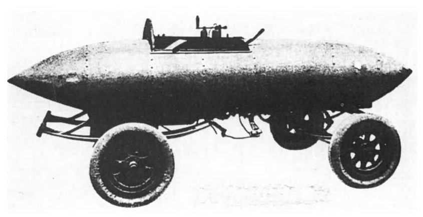
Hucho, Fig. 1.9. La Jamais Contente, el auto de récord de Camille Jenatzy (1899): carrocería en forma de cigarro para que el aire frene menos.
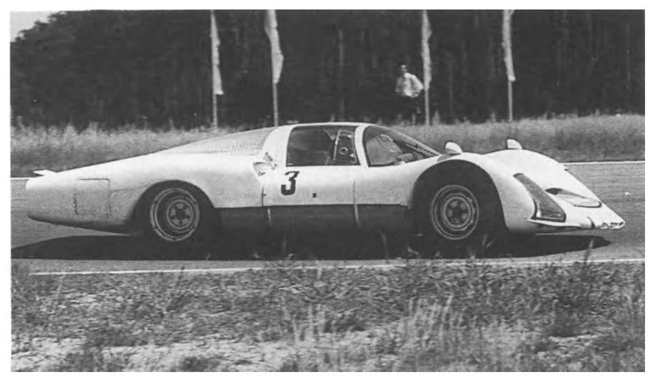
Hucho, Fig. 7.14. Porsche Carrera 6 (906) de cola larga, 1966: 162 kW, 265 km/h, = 0,33. Es el ideal de la época: todo fuselado y ningún apéndice para generar carga.
1.2 El problema que trajo: el auto "flota"
Los autos de formas suaves y poco drag resultaron inestables a alta velocidad. Se sentía que el auto flotaba.
Lo que pasaba es que apareció una sustentación positiva: una fuerza del aire hacia arriba, que tiende a despegar el auto del piso. No es casualidad ni mala suerte. Una carrocería cerrada, suave, con techo curvo y piso plano se parece bastante a un ala de avión, y el aire la trata como tal (el porqué está en §8.1). Las formas fuseladas, justamente las de menos drag, son las que generan esa sustentación (Hucho, §7.2).
Con menos peso apoyado sobre las ruedas, el neumático agarra menos: se transmite peor la potencia, se frena peor y se dobla peor. Además de lento, es peligroso.
1.3 Primera respuesta: el spoiler
Si el problema lo causa el flujo suave sobre la carrocería, la primera solución fue estropear ese flujo. De ahí el nombre: to spoil es estropear, lo mismo que "no me spoilees la película".
Un spoiler es un apéndice que rompe el flujo ordenado sobre el auto. Con eso se pierde buena parte de la sustentación positiva. El costo es que vuelve a subir el drag, y el auto es más lento en la recta.
Acá aparece la observación que cambia todo lo que sigue: aunque se pierda velocidad de punta, el auto dobla más rápido. El neumático puede hacer más fuerza lateral cuanto más apretado está contra el piso, y ahora al peso del auto se le suma lo que empuja el aire. Según el circuito, lo que se gana en las curvas es más que lo que se pierde en las rectas, y el tiempo de vuelta baja (§6.2).
A partir de este momento el objetivo deja de ser solamente "menos drag" y pasa a ser un compromiso entre drag y carga. Ese compromiso es el tema de fondo de todo el curso.
1.4 Segunda respuesta: el alerón invertido
Si empujar el auto contra el piso es bueno, el paso siguiente es buscarlo a propósito en lugar de conformarse con eliminar la sustentación. Un avión vuela porque sus alas generan una fuerza hacia arriba. Si se da vuelta un ala y se la monta en el auto, la fuerza va hacia abajo: eso es carga aerodinámica. Hoy los llamamos alerones a secas, pero un alerón de auto siempre es un ala invertida.
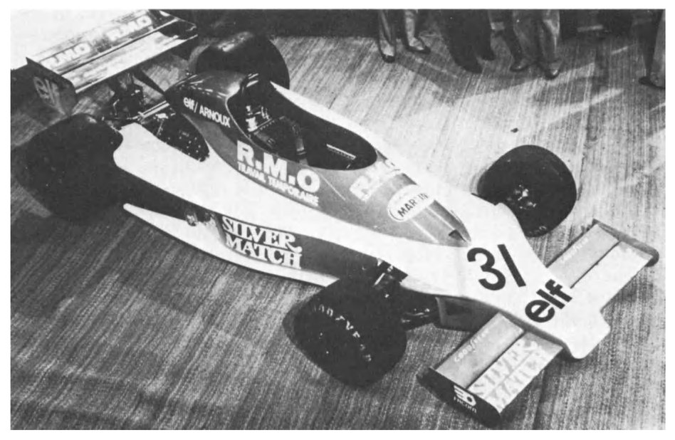
Hucho, Fig. 1.4. Alerones de sustentación negativa en un Fórmula 1: alas de avión montadas al revés, adelante y atrás.
- Antecedente: el Opel Rak 2, de 1928, ya llevaba alas de sustentación negativa (Hucho, §7.2).
- Michael May suele figurar como el primero en ponerle un ala a un auto de carrera. No lo dejaron correr en Nürburgring porque el alerón no estaba fijo a la carrocería.
- Jim Hall y los Chaparral son los que instalaron la idea. En el curso se lo nombra como el padre de los alerones, en 1966; Hucho da como primer alerón para generar carga el del Chaparral 2F, de 1967. Juan recomendó mirar la historia completa de los Chaparral: en unos diez años recorrieron todo el camino desde "bajar el drag" hasta "máxima carga".
- Después de 1968 los monoplazas usaron alerones altos, montados directamente sobre los ejes. Se rompieron, hubo accidentes y se prohibieron (Hucho, §7.2).
- Chaparral 2J: llevó la idea al extremo con ventiladores que aspiraban el aire de debajo del auto. Fue prohibido porque los apéndices aerodinámicos no pueden ser móviles. Hucho lo fecha en 1969 y menciona que Brabham probó algo parecido en 1978.
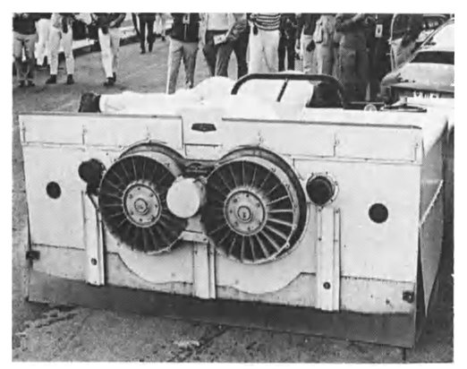
Hucho, Fig. 7.16. Chaparral 2J. Atrás se ven los dos ventiladores, movidos por un motor aparte, que hacían vacío debajo del auto.
Cuánto drag estuvo dispuesto a pagar el automovilismo por esa carga se ve en los Porsche de carrera: el producto , que mide la resistencia total, pasó de 0,41 en 1953 a cerca de 1,1 en el 917/10 de 1972 (Hucho, Tabla 7.1).
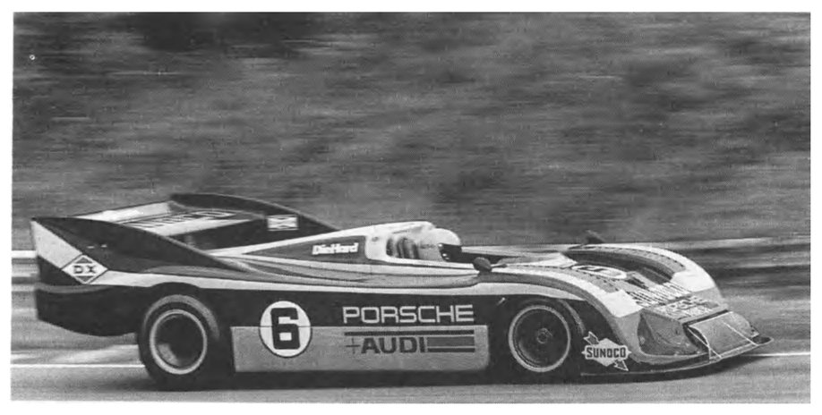
Hucho, Fig. 7.7. Porsche 917/30, 1973: 809 kW, 370 km/h y = 0,57, casi el doble que el 906 de 1966. Se ven el faldón delantero y el alerón trasero: es el drag que se pagó a cambio de carga.
1.5 Tercera respuesta: el efecto suelo
El razonamiento siguiente fue: si un alerón chico da carga, ¿por qué no hacer que todo el auto sea un ala? En el efecto suelo, el fondo del auto está perfilado como un ala invertida gigante que trabaja contra el piso.
- El ejemplo es el Lotus de fines de los 70 (en clase se dijo "Lotus 77"; el clásico de efecto suelo es el 78/79, y Hucho ubica el comienzo en 1977 y nombra al Lotus 79). Usaba faldones laterales para sellar el aire de debajo del auto.
- La carga que se consigue es enorme, con poco drag a cambio.
- El problema es que es muy sensible a la altura del auto al piso. Un bache, una rugosidad o una suspensión que cede cambian la distancia al suelo, y con ella la carga, en forma brusca. Un auto que de golpe pierde gran parte de su carga en plena curva es inestable y peligroso. Hubo muchos accidentes, entre ellos el de Gilles Villeneuve en 1982.
- 1983: fondos planos obligatorios. Primero se prohibieron los faldones y después se exigió el fondo plano (Hucho, §7.2).
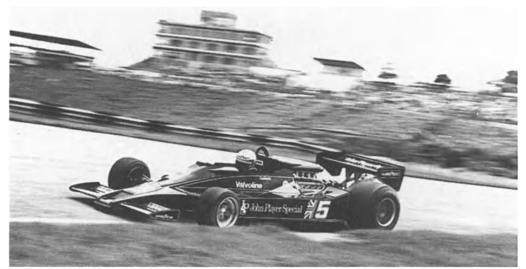
Hucho, Fig. 7.4. Lotus 79, el primer F1 que aprovechó el efecto suelo (1977, según Hucho). Debajo de los pontones laterales van las alas invertidas, cerradas contra el piso por los faldones.
De acá sale una regla que Juan repitió: los reglamentos llegan unos años después de los inventos, casi siempre por seguridad, a veces por competitividad. Diseñar aerodinámica de competición es siempre diseñar dentro de un reglamento. Y el tema no está cerrado: en los últimos cambios de reglamento de la F1 se sigue discutiendo si se mantienen o no los fondos planos. Por qué el efecto suelo es tan sensible a la altura se explica en §10.
1.6 La era actual: mucho detalle y aire sucio
Desde entonces no hubo grandes ideas nuevas. Lo que hay es tecnificación: se entiende cada vez mejor cómo se mueve el aire y se lo controla centímetro a centímetro con apéndices chicos, diseñados primero en túnel de viento y después con CFD. El extremo es el Honda de F1 de 2008, cubierto de aletas ("parecía un Transformer").
- Túnel de viento: una instalación muy cara donde unos ventiladores soplan aire sobre el auto real o un modelo a escala, y se miden fuerzas y presiones.
- CFD: hace lo mismo en una computadora. Da muchísima más información, pero es más difícil de calibrar para que los resultados sean confiables. Las dos herramientas necesitan gente que sepa usarlas. El curso trabaja con CFD.
El problema propio de esta época es el aire sucio. Todo lo que hace un auto para generar carga deja detrás una estela desordenada, llena de remolinos. El auto que viene atrás recibe ese aire en lugar de aire limpio y sus alerones rinden menos: pierde carga justo cuando necesita acercarse para pasar. Los reglamentos intentan compensarlo con el DRS, la aerodinámica activa y los modos de adelantamiento con potencia eléctrica extra. Cuánta potencia extra dar se estima, entre otras cosas, calculando con CFD cuánta carga pierde el auto de atrás (§11).
Juan dejó planteada una pregunta sobre esas estelas: ¿eso que se ve detrás del auto es turbulencia? Remolinos hay, pero remolino y turbulencia no son lo mismo. Se contesta en §3.1.
En limpio
- Menos drag → más velocidad de punta, pero las formas suaves generan sustentación positiva.
- Spoiler → se rompe el flujo y se pierde sustentación. Más drag, pero mejor paso por curva.
- Alerón invertido → carga buscada a propósito.
- Efecto suelo → todo el auto como ala. Muchísima carga, muy sensible a la altura. Fondo plano desde 1983.
- Hoy → detalle fino con túnel y CFD. El costo es el aire sucio para el que viene atrás.
En cada paso se ganó carga y se pagó con algo: drag, sensibilidad o estela.
Lo que sigue. Para entender por qué pasa cada una de estas cosas hace falta saber cómo se comporta el aire. Eso es la sección 2: empieza por lo más básico (qué es el aire para nosotros) y termina en el número que dice qué tipo de flujo vamos a tener.
2. Fundamentos de mecánica de fluidos
La pregunta de esta sección: ¿con qué variables se describe el aire y qué leyes las relacionan? El recorrido es este:
- Tratamos al aire como un material continuo y definimos cuatro variables (§2.1).
- Simplificamos: la densidad no cambia. Eso deja una ley muy simple, la continuidad (§2.2).
- Con continuidad y Bernoulli ya se puede relacionar forma → velocidad → presión (§2.3).
- Ese modelo ideal tiene un defecto grave: predice que no hay drag. Lo que falta es la viscosidad (§2.4).
- Cuánto pesa la viscosidad frente a la inercia lo dice el número de Reynolds (§2.5).
2.1 Medio continuo y variables
El aire está hecho de moléculas (nitrógeno, oxígeno y otras) separadas entre sí, que se mueven en todas direcciones y chocan todo el tiempo. Así es un gas: a diferencia de un sólido, donde las moléculas casi no se mueven unas respecto de otras, o de un líquido, donde deslizan pero no se separan, en un gas las moléculas ocupan todo el volumen disponible en un estado caótico.
Seguir a cada molécula es imposible y, sobre todo, innecesario. Un cubo de aire de 1 µm de lado (una milésima de milímetro) ya contiene unos 30 millones de moléculas. A nosotros nos interesa el efecto acumulado de todas ellas, no el choque individual.
La idea es la siguiente. Si se mide una propiedad en un volumen diminuto, del tamaño de unas pocas moléculas, el resultado salta todo el tiempo: en un instante hay una molécula adentro y al siguiente no. A medida que se agranda el volumen de medición, el promedio se estabiliza. A partir de cierto tamaño, que sigue siendo del orden de los micrones, moverse un poquito hacia cualquier lado da el mismo resultado. Desde ahí para arriba podemos olvidarnos de las moléculas y decir que en cada punto la materia tiene un estado.
Eso es la hipótesis del continuo: la materia se trata como continua y se la describe con campos, es decir, con variables que tienen un valor en cada punto del espacio y en cada instante .
Las cuatro variables básicas, cada una con su significado a nivel de moléculas:
| Variable | Unidad | Qué representa |
|---|---|---|
| Densidad | kg/m³ | Masa de las moléculas dividida por el volumen donde se las cuenta |
| Temperatura | K | Energía cinética media de las moléculas: cuánto se agitan. En el cero absoluto están quietas |
| Velocidad | m/s | Movimiento neto promedio. Las moléculas van para todos lados, pero si en promedio predomina una dirección, esa es la velocidad del fluido. Por eso es un vector: tiene dirección y magnitud |
| Presión | Pa | Fuerza normal por unidad de área que producen los impactos de las moléculas contra una superficie, real o imaginaria |
Estas variables no son independientes. En cada fluido están atadas por una ecuación de estado (la del gas ideal, por ejemplo). En el curso no se usa, porque la simplificación del punto siguiente la vuelve innecesaria.
Valores del aire en condiciones normales (Hucho, §2.1): = 1,225 kg/m³, = 1,7894×10⁻⁵ Pa·s y = 1,4607×10⁻⁵ m²/s ( y se definen en §2.4). En las cuentas del curso se redondea a ≈ 1,2 kg/m³ y ≈ 1,5×10⁻⁵ m²/s.
2.2 Flujo incompresible y compresibilidad
La simplificación. En todo el curso se supone que el aire es incompresible: la densidad es la misma en todos los puntos y en todo momento. Puede sonar raro, porque el aire se comprime fácil en un inflador. Pero alrededor de un auto el aire no está encerrado: ante un obstáculo le resulta más fácil correrse que apretarse.
Qué se gana. Dos cosas:
- Una incógnita menos. La densidad deja de ser una variable a calcular y pasa a ser un dato.
- Una ley muy simple, la continuidad. Si el aire no se puede apretar ni estirar, en cualquier volumen cerrado lo que entra es igual a lo que sale. Midiendo el caudal (área por velocidad, en m³/s) en cada cara del volumen, la suma de todos los caudales da cero.
Las dos afirmaciones, " constante" y "se cumple la continuidad", son equivalentes. La segunda es la más útil en la práctica. Aplicada a un caño, donde el aire solo entra por una boca y sale por la otra:
Si el caño se achica, la velocidad tiene que subir en la misma proporción; si se agranda, baja. Hucho da la misma idea en forma visual: donde las líneas de corriente se juntan, el aire va rápido, y donde se separan, va lento (Hucho, §2.3.1). Sirve para leer cualquier imagen de CFD o de túnel de humo.
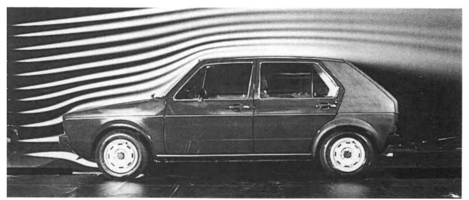
Hucho, Fig. 1.1. Líneas de humo en el plano medio de un VW Golf I, en un túnel a escala real. Sobre el capot y el techo las líneas se juntan: el aire se acelera. Delante de la trompa y del parabrisas se separan: el aire se frena. Detrás del techo el flujo se despega y forma la estela (§4.2).
Cuándo vale. Mientras la velocidad del aire sea menor que aproximadamente el 30 % de la velocidad del sonido. Ese cociente es el número de Mach, así que la condición es Mach < 0,3. El sonido en aire viaja a unos 340 m/s, de modo que el límite queda en m/s ≈ 360 km/h. Hucho da el mismo criterio, un tercio de la velocidad del sonido (Hucho, §2.1).
El cuidado que hay que tener. La velocidad que importa es la del aire en cada punto, no la del auto. Aunque el auto vaya a 250 km/h, el aire se acelera localmente bajo el piso, en el difusor y alrededor del alerón.
- Bajo el piso del Mustang del curso, con el auto a 55 m/s, el aire llega a ~80 m/s (unas 1,5 veces la velocidad del auto). Con menos despeje superaría el doble.
- En F1 hay efectos compresibles en el efecto suelo. Ignorarlos da un error que crece cuanto más se pasa del límite.
- En el caso compresible hay que agregar ecuaciones (aparece la densidad como incógnita) y la simulación es más compleja. Describe mejor al aire, pero por debajo de Mach 0,3 no hace falta.
Dos consecuencias que aparecen después en el CFD:
- Solo importan las diferencias de presión. En las ecuaciones del flujo incompresible la presión aparece únicamente como variación de un punto a otro (). El valor absoluto es una referencia que se elige.
- La densidad se cancela de las ecuaciones. El único dato del fluido que queda es la viscosidad cinemática (§2.4). Por eso OpenFOAM no devuelve la presión en pascales, sino la presión cinemática , en m²/s². Para tener pascales hay que multiplicar por (~1,2 kg/m³).
2.3 Venturi, Bernoulli y presión total
La continuidad dice cómo cambia la velocidad cuando cambia la sección. Falta saber qué le pasa a la presión, que es lo que termina haciendo fuerza sobre el auto.
Venturi. Es un conducto que se angosta y después se vuelve a ensanchar. Por continuidad, en la garganta el aire se acelera y en la expansión se frena. El nombre se usa para el fenómeno y también para el instrumento: midiendo la caída de presión entre la parte ancha y la garganta se puede calcular la velocidad del fluido.
Un detalle de diseño que vuelve en el difusor (§10.7): si la contracción o la expansión tienen un ángulo abrupto, el flujo no puede seguir la pared y se forma una recirculación en la esquina. Un Venturi o un difusor bien hechos necesitan un empalme suave.
Bernoulli. Define la presión total como la suma de dos términos:
- es la presión estática: la de los impactos de las moléculas, la que se definió en §2.1.
- es la presión dinámica: la energía cinética del aire por unidad de volumen.
¿Por qué hay tres presiones, si un medidor marca una sola? La objeción natural es: pongo un manómetro en el aire, marca tantos pascales, y esa es la presión. El problema es que, cuando el aire se mueve, lo que marca el medidor depende de cómo se lo oriente. Las tres presiones son las tres respuestas posibles.
- Presión estática (): la presión "de verdad" del aire. Aunque el viento vaya a 200 km/h hacia atrás, las moléculas siguen rebotando entre sí hacia todos lados. Ese rebote es la presión de §2.1.
- Cómo se mide: con un agujerito al ras de una superficie paralela al flujo (el costado de un tubo, la chapa de una puerta), de modo que el aire pase rozando sin chocar de frente.
- Cómo imaginarla: es la que marcaría un medidor que viajara flotando con el aire, a su misma velocidad. Para ese medidor el viento no existe, y solo siente cuánto lo aprieta el aire que lo rodea.
- Por qué importa: es la única que empuja o succiona las superficies del auto. Toda fuerza aerodinámica de presión sale de la estática.
- Presión dinámica (): lo que vale la velocidad, medido en pascales. No es una presión que esté "apretando" algo. Es la energía cinética que lleva cada metro cúbico de aire por tener masa () y velocidad (). Tiene unidades de presión (kg/m³ · m²/s² = N/m² = Pa) porque representa cuánta presión extra aparecería si ese aire se frenara hasta detenerse.
- Cómo se mide: no hay un agujerito que la lea sola. Siempre sale como diferencia entre las otras dos.
- Presión total (): lo que marca el medidor apuntando de frente. Si la boca del sensor mira contra el viento, el aire que entra no tiene adónde ir y se frena hasta . La energía cinética que traía no desaparece: se convierte en compresión sobre el sensor. Entonces marca la presión que el aire ya tenía (la estática) más lo que aportó el frenado (la dinámica).
| Presión | Qué es | Cómo se mide |
|---|---|---|
| Estática | El rebote de las moléculas; la que actúa sobre las superficies | Toma lateral, paralela al flujo |
| Dinámica | Energía cinética por unidad de volumen | Resta: total menos estática |
| Total | Estática más dinámica; la que aparece al frenar el aire a cero | Toma frontal, de cara al flujo |
Con el aire quieto () la dinámica vale cero, las tres preguntas dan la misma respuesta y la intuición de "una sola presión" es correcta. La distinción aparece recién cuando hay velocidad.
Con números: a 55 m/s la dinámica es de unos 1.850 Pa (la cuenta está más abajo). Si la toma lateral marca la presión atmosférica, unos 101.300 Pa, la toma frontal marca unos 103.150 Pa. El viento agrega menos del 2 %, pero ese 2 % aplicado sobre metros cuadrados de carrocería son las fuerzas que nos interesan.
El principio. Bernoulli dice que, en un flujo ideal (incompresible y sin viscosidad), la presión total se mantiene constante a lo largo de una línea de corriente. Es una conservación de energía: el aire puede cambiar presión por velocidad y velocidad por presión, pero la suma no cambia. Lo que dice Hucho es lo mismo: si todas las líneas de corriente vienen del mismo flujo uniforme, todas tienen la misma presión total (Hucho, §2.3.1).
La regla práctica para llevarse:
| Si la velocidad… | la presión estática… |
|---|---|
| sube | baja |
| baja | sube |
La relación es cuadrática en la velocidad, así que los cambios de velocidad pesan mucho. Con los números del Mustang: a 55 m/s la presión dinámica es Pa; a 80 m/s, Pa. La velocidad subió un 45 % y la presión dinámica se duplicó. Esa diferencia, según Bernoulli, es lo que baja la presión estática bajo el piso.
Con esto se arma la cadena que se usa en todo el apunte: la forma define por dónde pasa el aire → la continuidad dice dónde se acelera → Bernoulli dice que ahí baja la presión → la diferencia de presiones entre dos caras es una fuerza. Un alerón y un fondo de efecto suelo son formas pensadas para que el aire pase más rápido por abajo que por arriba.
Marco de referencia. Que el auto avance a 100 m/s en aire quieto es lo mismo que tener el auto quieto y un viento de 100 m/s de frente. Todo el curso (y el CFD, y el túnel) usa la segunda mirada. La excepción es el piso: visto desde el auto, el piso se mueve hacia atrás a la velocidad del auto, y eso hay que respetarlo.
Punto de estancamiento. Es el punto donde el aire choca de frente y se detiene: . Ahí toda la presión dinámica se convierte en estática, y la presión es la máxima posible, igual a . Pasa en la trompa del auto y, en un segundo "impacto" menor, en la base del parabrisas. Hucho saca de acá una consecuencia práctica: las tomas de aire se ponen en zonas de alta presión, cerca de un estancamiento (Hucho, §2.3.2).
Tubo Pitot. Es exactamente el par de medidores de más arriba, juntos en un solo instrumento. Tiene una toma frontal, donde el aire se estanca y se lee la presión total, y una toma lateral, donde se lee la estática. La diferencia es la presión dinámica, y de ahí se despeja:
La densidad se conoce porque se conoce la temperatura. Es la "manguerita" fina que sale del morro de los F1. Su uso en pista está en §13.
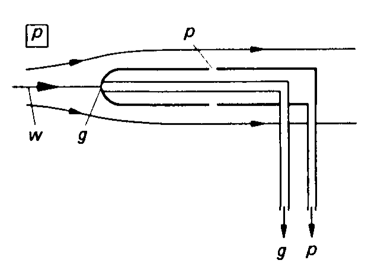
Hucho, Fig. 2.5. Sonda Pitot estática. La toma frontal lee la presión total; los agujeros laterales, la estática. La diferencia es la presión dinámica, y de ella sale la velocidad.
Dónde deja de valer Bernoulli. Cerca de las paredes y en las estelas, porque ahí actúa la viscosidad y se pierde energía. Lejos de eso, funciona muy bien. Esta limitación, en vez de ser un problema, se convierte en una herramienta.
La presión total como herramienta de diagnóstico.
- Sin viscosidad todo sería reversible: la energía pasaría de presión a velocidad y de vuelta, sin pérdidas, y sería la misma en todos lados.
- Con viscosidad, el rozamiento entre líneas de corriente rápidas y lentas convierte energía en calor. Esa energía no vuelve, y la presión total cae.
- Entonces un mapa de muestra dónde se destruyó energía: las zonas con menor que la del aire libre son estelas, capas límite y recirculaciones. Es una de las imágenes más útiles del postproceso.
- Alrededor de un ala bien diseñada, es casi la misma arriba y abajo. La carga sale puramente de diferencias de velocidad, sin destruir energía, y por eso el ala casi no deja déficit de detrás. Es el elemento más eficiente que hay para generar carga.
- Placa plana perpendicular al viento: con la presión de estancamiento en toda la cara de adelante uno esperaría ≈ 1. Da más de 1 (Hucho da 1,17 para una placa circular, Tabla 2.1), porque además las pérdidas dejan una depresión detrás que tira de la placa hacia atrás.
El defecto del modelo ideal: la paradoja de d'Alembert. Si el aire no tuviera viscosidad, después de pasar por el punto más ancho del cuerpo se frenaría de manera ordenada, recuperaría toda la presión y se cerraría detrás del cuerpo con otro punto de estancamiento, simétrico al de adelante. La presión de atrás empujaría hacia adelante exactamente lo mismo que la de adelante empuja hacia atrás. Resultado: drag igual a cero, para cualquier forma (Hucho, §2.3.2).
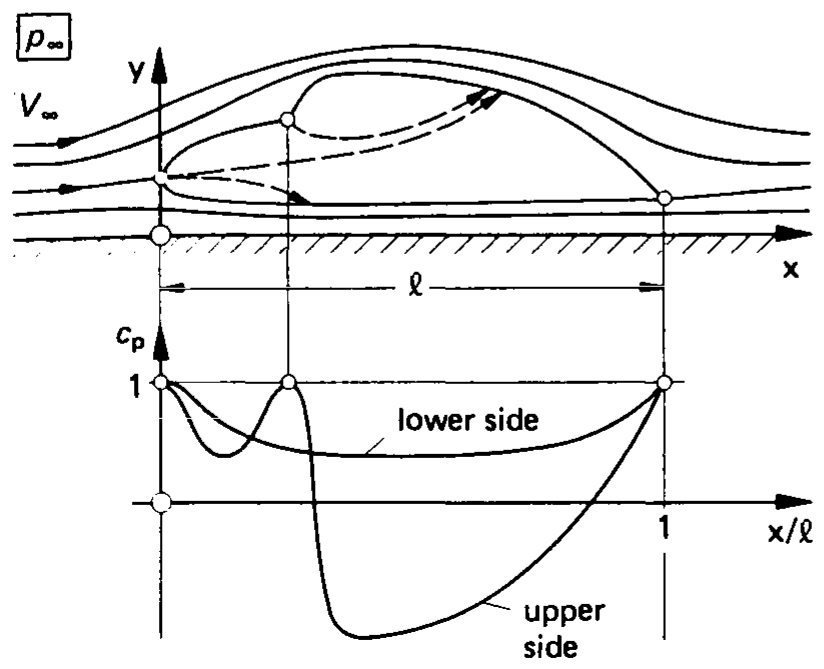
Hucho, Fig. 2.4. Flujo sin viscosidad alrededor de un cuerpo con forma de auto, cerca del piso, y su por arriba (upper side) y por abajo (lower side). Hay tres puntos con = 1: la trompa, la base del parabrisas y la cola. Que la cola vuelva a = 1 es la paradoja de d'Alembert: atrás la presión empuja hacia adelante lo mismo que adelante empuja hacia atrás. En este gráfico el eje vertical no está invertido.
Eso contradice la mano fuera de la ventanilla. Bernoulli y continuidad explican bien de dónde sale la carga, pero no pueden explicar el drag. Lo que falta en el modelo es la viscosidad.
2.4 Viscosidad
La idea. Un fluido real se resiste a deformarse. Se lo puede pensar como una pila de capas que deslizan una sobre otra con rozamiento. Ese rozamiento consume energía. Cuanto más viscoso es el fluido, más fuerza hay que hacer para que las capas deslicen.
Cómo se mide: el viscosímetro de placas. Dos placas paralelas separadas una distancia , con el fluido en el medio. La de abajo está quieta. A la de arriba se la arrastra con una fuerza hasta que se mueve a velocidad . Midiendo , , y el área de la placa se obtiene:
- es la tensión de corte (fuerza por unidad de área, en Pa), paralela a la superficie. La presión empuja perpendicular a la superficie; la tensión de corte la arrastra de costado.
- es la viscosidad dinámica, una propiedad de cada fluido.
- Entre las placas, la velocidad crece en forma lineal desde 0 abajo hasta arriba. Ese dibujo de flechas de velocidad a distintas alturas se llama perfil de velocidades, y este caso se conoce como flujo de Couette.
Condición de no deslizamiento (no-slip). En el viscosímetro, la capa de fluido pegada a la placa de abajo está quieta, y la pegada a la de arriba se mueve con ella. Es una regla general: el fluido en contacto con una superficie tiene la velocidad de esa superficie. Decir que "está quieto en la pared" es el caso particular de una pared quieta.
Esta condición es la puerta de entrada de la viscosidad en la aerodinámica del auto. El aire lejos del auto va a 200 km/h respecto de la carrocería, pero el que toca la chapa va a 0. En algún lugar entre los dos tiene que haber una zona donde la velocidad pasa de un valor al otro, con capas que deslizan y rozan. Esa zona es la capa límite (§4), y es donde el modelo ideal de §2.3 deja de valer.
Tensión de corte en la pared. La fórmula del viscosímetro, , es la pendiente del perfil de velocidades. Para un perfil cualquiera se usa la pendiente local, que es la ley de Newton de la viscosidad (Hucho, §2.1). Evaluada en la pared:
Es el wall shear stress del postproceso, en Pa. Cuanto más empinado es el perfil junto a la pared, más fricción. Donde la pendiente es nula, la fricción es cero; ese caso va a ser importante en §4.2, porque es el punto donde el flujo se separa.
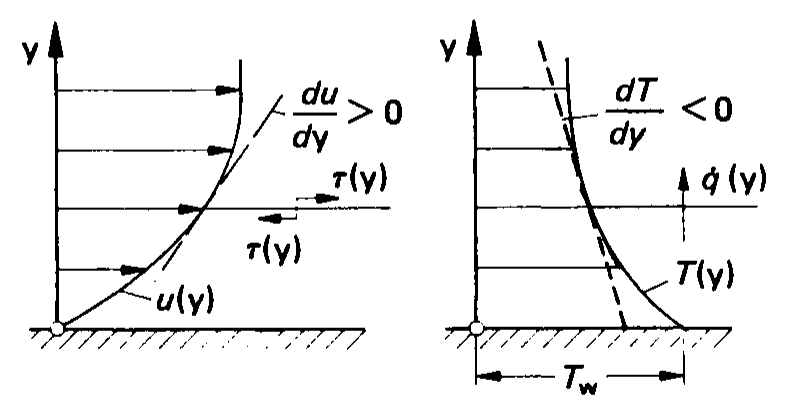
Hucho, Fig. 2.1. Perfil de velocidades (y de temperatura) junto a una pared: vale cero en la pared, por no deslizamiento, y la velocidad del flujo libre lejos de ella. La pendiente del perfil en la pared da .
Flujo de Poiseuille. Es el otro caso clásico: fluido empujado por presión entre dos paredes quietas (o dentro de un caño). Las dos paredes frenan al fluido por no deslizamiento, y el efecto llega hasta el centro: el perfil es una parábola, con velocidad máxima en el medio y cero en las paredes. La pendiente es máxima en las paredes y nula en el centro. En este flujo, toda la presión que se aplica para empujar se gasta en vencer la fricción de las paredes.
Viscosidad cinemática. Como en el curso la densidad es constante y se cancela de las ecuaciones (§2.2), la viscosidad siempre aparece dividida por la densidad:
es la viscosidad dinámica (ligada a fuerzas) y la cinemática (ligada a movimiento). es el número que se le carga al solver.
¿Por qué dividir por ? dice cuánta fuerza de rozamiento aparece (en Pa·s, porque ). Pero lo que le pasa al aire no depende solo de la fuerza: depende de cuánta masa hay que frenar o acelerar, y eso lo da la densidad. En la ecuación de movimiento (, escrita por unidad de volumen) la fuerza viscosa es proporcional a y la masa a mover es proporcional a , así que la aceleración que produce la viscosidad sale proporcional a . A igual rozamiento, un fluido más denso se frena menos porque tiene más inercia. Por eso mide qué tan rápido la viscosidad contagia el frenado de la pared a las capas vecinas: sus unidades, m²/s, son las de una difusión (cuánta área "propaga" el efecto por segundo).
Imagen: la miel tiene una enorme y el aire una chica, pero eso no dice todo. Lo que cuenta para "cuánto se frena el flujo" es , que ya incluye cuánta masa hay que frenar. Con constante (§2.2), y nunca aparecen por separado y se agrupan en un solo número.
Los números del aire.
- ≈ 1,5×10⁻⁵ m²/s. Como comparación, ≈ 1×10⁻⁶ m²/s.
- Al calentarse, el aire se vuelve más viscoso y menos denso. En el rango de trabajo la viscosidad cambia cerca de un 10 %. La viscosidad cinemática junta los dos efectos.
- La viscosidad del aire es baja. Las tensiones de corte son chicas comparadas con las presiones. Pero sus efectos se acumulan a lo largo de toda la superficie y, sobre todo, la viscosidad es la que decide si el flujo sigue pegado a la carrocería o se despega. Ahí está la respuesta a la paradoja de d'Alembert: la mayor parte del drag de un auto no es rozamiento directo, sino la presión que no se recupera atrás porque el flujo, frenado por la viscosidad, se separó (§4 y §5).
2.5 Número de Reynolds
Quedaron dos efectos en juego: la inercia del aire, que quiere seguir de largo, y la viscosidad, que frena y ordena. El número de Reynolds dice cuál de los dos manda en un problema dado:
Cada variable:
- : densidad del aire.
- : velocidad del flujo respecto del cuerpo (la del aire que llega, lejos de él).
- : longitud característica, una medida de tamaño del cuerpo en la dirección del flujo (la cuerda de un alerón, el largo del auto). Cuál se elige y por qué se explica más abajo ("Qué es y cuál usar").
- y : viscosidad dinámica y cinemática (§2.4).
Arriba está lo inercial (velocidad y tamaño) y abajo lo viscoso. No tiene unidades: se simplifica a un número puro, y por eso sirve para comparar casos de cualquier escala.
- Re bajo: dominan los efectos viscosos. El flujo es ordenado (laminar).
- Re alto: dominan los inerciales. El flujo tiende a ser turbulento.
- El valor en el que se pasa de uno a otro depende del problema: no hay un número único.
Ejemplo. Un auto de 4 m a 100 km/h (27,8 m/s): . La inercia le gana a la viscosidad por millones. Por eso los efectos viscosos quedan confinados a capas delgadas pegadas a la superficie y a las estelas, y en el resto del campo el modelo ideal funciona bien.
| Caso | Re aproximado |
|---|---|
| Auto de ~4 m a 100 km/h | ~7×10⁶ |
| Autos de carrera en general | 10⁶–10⁸ |
| Avión comercial (cuerda 2,5 m, 250 m/s) | ≥10⁷ |
| Alerón trasero ( ≈ 25 cm, 80 m/s) | ~1–1,5×10⁶ |
| Alerón delantero (menos cuerda) | ~5×10⁵ |
| Dron chico ( ≈ 5 cm) | ~5×10⁴ |
Para qué sirve: la semejanza. Con la geometría fija y en incompresible, la solución del flujo depende solo del Reynolds. Dos situaciones con la misma forma y el mismo Re se comportan igual, aunque cambien el tamaño, la velocidad o el fluido. Es la base de los ensayos con modelos a escala (Hucho, §2.2.1).
También muestra el límite de esos ensayos. Para reproducir el auto de 4 m a 100 km/h con un modelo de 20 cm, que es 20 veces más chico, habría que soplar 20 veces más rápido: 2.000 km/h. Es imposible, y además dejaría de ser incompresible. La otra salida sería cambiar de fluido, pero no hay uno más conveniente que el aire que sirva. Y agrandar el modelo exige túneles enormes. Por eso en un túnel real, con modelo chico, no se logra similitud completa a 200 km/h, y es una de las razones por las que el CFD resulta atractivo.
Qué es y cuál usar. es la longitud característica: una medida de tamaño que representa "qué tan grande es el problema" en la dirección del flujo. No es una propiedad física del cuerpo sino una elección, y lo que hace es fijar la escala con la que se compara inercia contra viscosidad (a más recorrido, más tiempo tiene la viscosidad para actuar, pero también más inercia acumulada). Ejemplos habituales:
| Cuerpo | típica |
|---|---|
| Ala o alerón | la cuerda (del borde de ataque al de fuga) |
| Cilindro, esfera, caño | el diámetro |
| Placa plana | la distancia desde el borde de ataque hasta el punto que se mira |
| Auto completo | el largo (o el alto, según el autor) |
Lo que importa es usar siempre el mismo criterio al comparar: un calculado con la cuerda no se puede comparar con otro calculado con el espesor. Por eso, cuando se da un Reynolds, hay que decir con qué se calculó (en este curso, para perfiles y alerones, la cuerda). Conviene pensarla como "cuánto se mete el cuerpo en el flujo".
El Re así calculado es un número global del problema. Localmente, cada parte del flujo "ve" su propia longitud: para el aire que pasa bajo el splitter, lo que cuenta es el despeje; para el que recorre el techo, ese recorrido. Por eso en un mismo auto conviven zonas con comportamientos distintos, y un alerón delantero de poca cuerda trabaja a un Re bastante menor que el auto completo.
Otra forma de verlo. El Reynolds es "un Péclet de la cantidad de movimiento": compara cuánto se transporta por convección (el flujo que arrastra) contra cuánto por difusión (la viscosidad que reparte). La idea se retoma en §12.2.
En limpio
- El aire se trata como un continuo con cuatro campos: , , y .
- Incompresible (Mach < 0,3): es constante y vale la continuidad, . Ojo con las velocidades locales bajo el piso.
- Bernoulli: es constante en una línea de corriente si no hay pérdidas. Más velocidad, menos presión, con relación cuadrática.
- Estancamiento: y presión máxima. El Pitot mide velocidad con dos presiones.
- Presión total: donde cae, se destruyó energía.
- El modelo sin viscosidad explica la carga pero da drag cero (d'Alembert).
- Viscosidad: . No deslizamiento: el fluido tiene la velocidad de la pared.
- Reynolds = inercia / viscosidad. En autos, 10⁶–10⁸. Mismo Re y misma forma, mismo flujo.
Lo que sigue. Con Re de millones, la viscosidad casi no puede amortiguar las perturbaciones del flujo. La sección 3 mira qué pasa entonces: cuándo el flujo es laminar, cuándo se vuelve turbulento y por qué eso no es lo mismo que tener remolinos.
3. Flujo laminar, turbulencia y regímenes
La pregunta de esta sección: ¿qué quiere decir que un flujo sea turbulento, y cómo se pasa de un flujo ordenado a uno que no lo es? Viene con una segunda pregunta pendiente de §1.6: los remolinos que se ven detrás de un auto, ¿son turbulencia?
3.1 Laminar y turbulento
La objeción natural. Uno tiende a llamar "turbulencia" a cualquier cosa que gire: si hay remolinos, es turbulento. No es así. Lo que separa a un régimen del otro no es que haya o no remolinos, sino si el movimiento se puede predecir.
- Laminar: el fluido se mueve en capas ordenadas, como láminas (de ahí el nombre). Lo que define al régimen es que el movimiento es predecible. Un flujo sigue siendo laminar aunque tenga vórtices, siempre que sean periódicos y predecibles: si sé cómo es un vórtice, sé cómo va a ser el siguiente.
- Turbulento: el movimiento es caótico, irregular, tridimensional e impredecible. Siempre es transitorio: no existe una foto fija de un flujo turbulento. El ejemplo de clase es el spray que levanta un auto a 200 km/h bajo la lluvia. Si se le sacan fotos, cada una es distinta de la anterior y no hay forma de anticipar la próxima.
El ejemplo que separa las dos ideas: la calle de von Kármán. Detrás de un cilindro (o de la pila de un puente en un río) se desprenden vórtices de un lado y del otro, alternados, todos iguales y a intervalos regulares. Hay remolinos por todos lados, pero el flujo es perfectamente predecible. Es laminar.
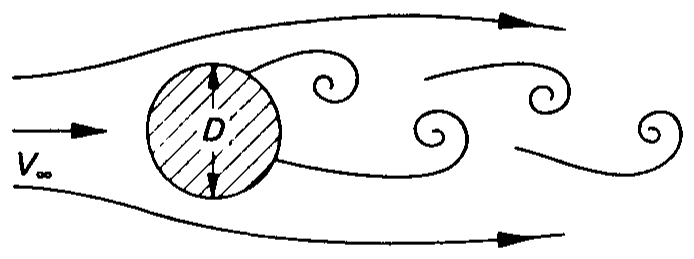
Hucho, Fig. 2.17. Desprendimiento periódico de vórtices detrás de un cilindro: la calle de von Kármán. Los vórtices se sueltan alternados, de un lado y del otro, a intervalos regulares.
Con esto se contesta la pregunta de §1.6. Detrás de un auto hay remolinos, y además hay turbulencia, pero son dos cosas distintas que conviene no mezclar: hay estructuras grandes y ordenadas (vórtices que se pueden ubicar y aprovechar, §8 y §11) y hay turbulencia propiamente dicha (agitación caótica de todos los tamaños).
De dónde sale la turbulencia. Las ecuaciones que gobiernan el movimiento del fluido son las de Navier-Stokes (§12.1). Tienen un término, el convectivo, donde la velocidad aparece multiplicada por sí misma: es "la velocidad que se transporta a sí misma". Ese término es no lineal, y ahí está el origen del problema.
Para verlo sin ecuaciones, alcanza con pensar qué le pasa a una perturbación chica (una ráfaga, una rugosidad, una vibración):
- A Re bajo, la viscosidad domina y la perturbación se amortigua. El flujo vuelve solo a su estado ordenado.
- A Re alto, la viscosidad no alcanza a frenarla. El término no lineal la amplifica, y la perturbación crece hasta donde lo permite la energía disponible en el flujo.
Es la misma comparación inercia contra viscosidad de §2.5, vista ahora como una pelea entre lo que desordena y lo que ordena.
- La solución analítica general de Navier-Stokes sigue sin conocerse. Es uno de los Problemas del Milenio del Instituto Clay (se anunciaron en el año 2000; en clase se dijo "1910").
- El aire casi siempre está en régimen turbulento, porque su viscosidad es baja. Con los Reynolds de millones de un auto, lo normal es la turbulencia y lo raro es el flujo laminar.
3.2 Regímenes del cilindro (el caso de laboratorio)
El cilindro es el caso de estudio clásico porque tiene una geometría mínima y, sin embargo, muestra todos los regímenes con solo ir subiendo el Reynolds. Sirve para ver en fila lo que en un auto está todo mezclado.
| Re | Régimen | Qué se ve |
|---|---|---|
| < 5 | Flujo reptante | El fluido rodea el cilindro copiando su forma. No hay separación |
| ~5–40 | Separación con un par de vórtices fijos | Detrás quedan dos vórtices atrapados, simétricos. El flujo es estacionario: aunque "se vea girar", una foto es igual a la siguiente |
| ~40–200 | Calle de von Kármán | Los vórtices se sueltan alternados. Periódica y laminar. Rompe la simetría del flujo aunque la geometría sea simétrica |
| ~200–3×10⁵ | Transición | Vórtices imperfectos, líneas erráticas. Se pierde el determinismo: dos corridas iguales pueden dar resultados distintos |
| > 3×10⁵ | Capa límite turbulenta sobre el cilindro | El flujo se despega más atrás y la estela se angosta |
Hucho ubica ese último cambio en un Reynolds crítico de alrededor de 5×10⁵ y lo describe así: con capa límite laminar el flujo se despega cerca del punto más ancho y deja una estela ancha; con capa límite turbulenta se mantiene adherido más tiempo y la estela es angosta (Hucho, §2.3.3.4). Por qué una capa límite turbulenta aguanta más pegada se explica en §4.2.
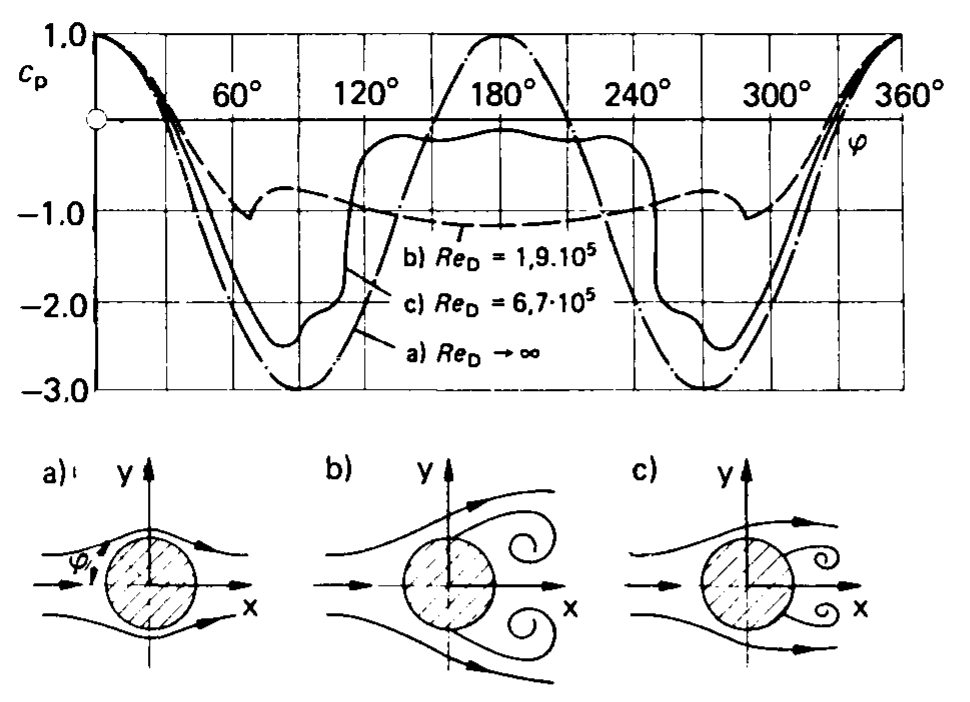
Hucho, Fig. 2.10. sobre un cilindro según el ángulo medido desde el frente: (a) flujo ideal, sin viscosidad; (b) = 1,9×10⁵, capa límite laminar; (c) = 6,7×10⁵, capa límite turbulenta. En el ideal la presión se recupera hasta = 1 en la cola (d'Alembert). En (b) el flujo se despega antes de los 90° y atrás queda ≈ −1: estela ancha y mucho drag. En (c) se despega cerca de los 120° y la succión de atrás es mucho menor: estela angosta.
El del cilindro contra el Reynolds. A lo largo de todo ese recorrido, el coeficiente de drag cambia unas 100 veces:
- A Re ≈ 0,1 vale ~60. Todo el drag es rozamiento (pérdida por corte).
- Con vórtices laminares baja a ~2.
- En la transición cae otra vez, cuando pasa a dominar la pérdida por forma: el drag ya no viene del rozamiento, sino de la diferencia de presiones entre el frente y la estela.
Por qué esto importa para un auto. En el curso se dice que las fuerzas aerodinámicas crecen con . Eso solo vale donde el casi no depende del Reynolds, es decir, con turbulencia bien desarrollada (Re ~10⁶–10⁸). Es el caso de los autos, y por eso se puede usar un único coeficiente para todas las velocidades (§5.2). Hucho agrega el motivo: en los cuerpos con aristas vivas el flujo se despega siempre en el mismo lugar, sea cual sea el Reynolds, y el coeficiente no cambia; en los cuerpos redondeados el punto de separación se mueve y el coeficiente puede saltar. Por eso en un auto conviene fijar la separación en una arista (Hucho, §2.3.3.4).
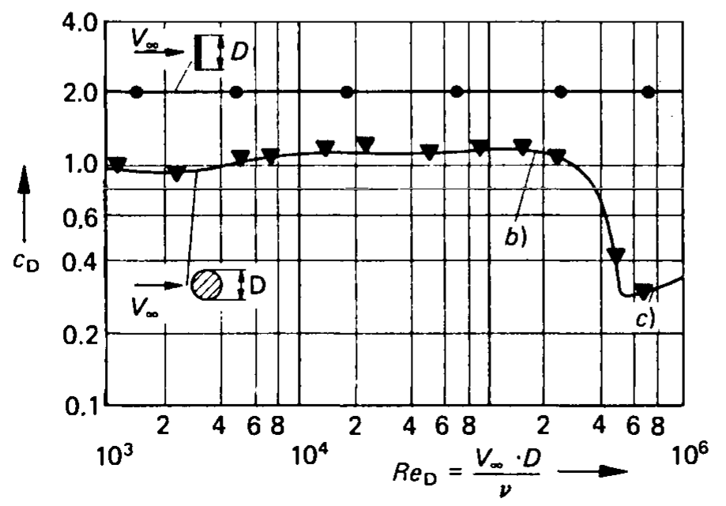
Hucho, Fig. 2.11. contra (escalas logarítmicas) para un cilindro y para una placa plana de frente. El cilindro cae de golpe de ~1,2 a ~0,3 entre 2×10⁵ y 5×10⁵: la capa límite pasa a turbulenta (puntos b y c de la figura anterior). La placa, con aristas vivas, queda en = 2 para cualquier Reynolds: la separación está fija en la arista.
Tres advertencias sobre la transición.
- Depende mucho de las perturbaciones externas. A Re alto (≳ 50.000), cualquier cosa desestabiliza el flujo.
- Los datos experimentales tienen mucha dispersión. Para el mismo Re aparecen valores de 1 a 1,4, por la bomba del túnel, la turbulencia del flujo de entrada, la rugosidad o el bloqueo. No hay un valor "exacto" contra el cual comparar.
- Consecuencia para el CFD: un método numérico se da por validado si su resultado cae dentro de esa banda, no si acierta un número.
Número de Strouhal. Mide cada cuánto se suelta un vórtice, en forma adimensional:
donde es la frecuencia de desprendimiento, el diámetro y la velocidad del flujo libre. En el cilindro vale ≈ 0,16–0,20. Para leerlo: es el tiempo que tarda el aire en cruzar el cilindro, así que St ≈ 0,2 significa un vórtice cada ~5 tiempos de cruce. Se usa en acústica (los vórtices periódicos suenan) y para validar la precisión temporal de una simulación.
3.3 Descripción estadística y cascada de energía
Si un flujo turbulento es impredecible, ¿cómo se trabaja con él? La respuesta es que no se intenta predecir cada instante, sino el promedio. El spray del auto bajo la lluvia cambia de foto en foto, pero el promedio de mil fotos es siempre el mismo.
Media más fluctuación. La velocidad en un punto se separa en dos partes:
- es la velocidad media: el promedio durante un tiempo suficientemente largo como para que el resultado ya no cambie.
- es la fluctuación: lo que se aparta la velocidad de ese promedio en cada instante.
Energía cinética turbulenta . Se calcula a partir del tamaño de las fluctuaciones y mide "cuánta turbulencia hay" en un punto. En un flujo laminar no hay fluctuaciones y . Es una de las variables que aparecen en los modelos de turbulencia y en el postproceso (§12.6).
La cascada de energía. La turbulencia tiene remolinos de todos los tamaños, y la energía pasa de unos a otros siempre en el mismo sentido:
- Los vórtices grandes son los que tienen más energía. Su tamaño lo impone la geometría (el alto del auto, la cuerda del ala).
- El corte entre capas los rompe en vórtices más chicos, que a su vez se rompen en otros más chicos.
- Al llegar a la escala de Kolmogorov, los vórtices son tan chicos que la viscosidad puede con ellos y los disipa en calor.
- La turbulencia convierte energía mecánica en calor. Es la razón por la que la presión total cae en las zonas turbulentas (§2.3).
- Entre el vórtice más grande y el más chico hay unos 5 órdenes de magnitud de tamaño.
Ley −5/3 de Kolmogorov. Si se mide la velocidad en un punto y se la descompone por frecuencias (con Fourier), en la zona intermedia de la cascada, el llamado rango inercial, el espectro de energía cae con una pendiente de −5/3. Sirve para confirmar que una turbulencia está bien desarrollada. No es objetivo del curso.
Taylor-Green vortex. Es el caso más simple que muestra toda esta fenomenología: arranca con unos pocos vórtices grandes y ordenados que se van rompiendo hasta disiparse.
Consecuencia para el CFD. Una simulación divide el espacio en celdas. Si la celda es más grande que los vórtices más chicos, esos vórtices no se pueden calcular. Con 5 órdenes de magnitud entre el más grande y el más chico, resolverlos todos en un auto es inviable. Por eso hacen falta modelos de turbulencia, que representan el efecto de lo que la malla no ve (§12.6).
En limpio
- Laminar es predecible; turbulento es caótico, tridimensional y siempre transitorio.
- Vórtice no es turbulencia: la calle de von Kármán tiene vórtices y es laminar.
- La turbulencia nace del término no lineal de Navier-Stokes: a Re alto, las perturbaciones se amplifican.
- En el cilindro, subir el Re recorre todos los regímenes y el cambia ~100 veces. En autos (Re 10⁶–10⁸) el casi no depende del Re.
- La turbulencia se describe con media + fluctuación y con .
- Cascada: vórtices grandes → chicos → calor. No se puede resolver toda, por eso el CFD usa modelos.
Lo que sigue. La turbulencia y la viscosidad actúan sobre todo en una zona muy delgada, pegada a la superficie del auto. Esa zona decide si el aire sigue la forma de la carrocería o se despega de ella. Es la capa límite.
4. Capa límite y separación
La pregunta de esta sección: ¿por qué a veces el aire sigue la forma del auto y a veces se despega? De la respuesta depende casi todo: el drag, la carga y que un alerón funcione o entre en pérdida. Es también la respuesta que había quedado pendiente con la paradoja de d'Alembert (§2.3).
4.1 Capa límite
Qué es. Por la condición de no deslizamiento (§2.4), el aire que toca la carrocería está quieto respecto de ella. Un poco más afuera va a la velocidad del flujo libre. Entre los dos hay una zona delgada donde la velocidad crece de cero al valor exterior. Esa zona de aire frenado es la capa límite, y su espesor se llama .
Hucho remarca lo desproporcionado del asunto: la capa es delgada, pero influye en todo el campo de flujo, y el drag solo se puede explicar por lo que pasa adentro de ella (Hucho, §2.3.3).
El caso de referencia: la placa plana. Una placa delgada alineada con el viento. Desde el borde de ataque, la capa límite pasa por tres zonas:
- Laminar. Flujo ordenado, paralelo a la pared. El perfil de velocidades tiene una forma conocida (perfil de Blasius). El espesor crece con la distancia como (Hucho, §2.3.3.1).
- Transición. La capa laminar se vuelve inestable. Es inevitable: tarde o temprano pasa.
- Turbulenta. Hay fluctuaciones en las tres direcciones, pero el flujo medio sigue adherido y paralelo a la pared. El perfil medio es más "lleno": . El espesor crece más rápido que en la zona laminar, como (Hucho, §2.3.3.1).
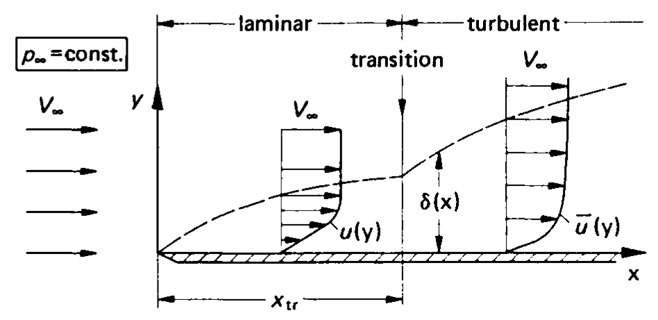
Hucho, Fig. 2.6. Capa límite sobre una placa plana, con el espesor muy ampliado: laminar desde el borde de ataque, transición en y turbulenta después. El perfil turbulento es más «lleno» que el laminar , y el espesor crece más rápido después de la transición.
¿Qué quiere decir un perfil más "lleno"? En la capa turbulenta, las fluctuaciones mezclan el aire rápido de afuera con el aire lento de adentro. Esa mezcla lleva velocidad hacia la pared: muy cerca de la superficie el aire ya va rápido, y recién en el último tramo cae a cero. El perfil laminar, en cambio, sube de a poco.
De ahí salen dos consecuencias opuestas, y las dos importan:
- Más fricción. Si la velocidad cae a cero en una distancia más corta, la pendiente en la pared es mayor, y con ella la tensión de corte (§2.4). La viscosidad del aire es la misma: lo que cambia es el gradiente.
- Más resistencia a despegarse. El aire cercano a la pared tiene más velocidad, o sea más energía para seguir avanzando. Esto es lo que se aprovecha en §4.2 y §4.4.
Dónde ocurre la transición. Se mide con un Reynolds armado con la distancia desde el borde de ataque:
- La cuenta para un auto: a 200 km/h (55,6 m/s), m. La capa límite es laminar solo en los primeros ~12–13 cm. A 300 km/h, ~8 cm.
- En un auto se trabaja siempre en régimen turbulento. Esos primeros centímetros no cuentan. En un dron con alas de ~10 cm sí tiene sentido buscar flujo laminar.
- Ese valor es para una placa sin gradiente de presión. Según Hucho, una presión que baja en el sentido del flujo estabiliza la capa laminar; una presión que sube, o la rugosidad, adelantan la transición (Hucho, §2.3.3.1).
Otras cosas a tener presentes.
- Cada superficie del auto genera su propia capa límite: el capot, el techo, cada elemento de un alerón.
- El espesor no es un dato de diseño. Es una consecuencia del régimen y de si hay o no separación. Tampoco se mide fácil. Lo que sí se puede ver en pista es dónde se despega el flujo (§13).
4.2 Gradiente adverso y separación
La objeción natural. Si el aire viene empujado desde atrás por más aire, ¿por qué habría de despegarse de la superficie o, peor, ir para atrás? La respuesta está en la presión.
Paso 1: la curvatura cambia la presión. Donde la carrocería se abre (una superficie convexa, una expansión, el paso del techo a la luneta), el aire tiene más lugar y se frena. Por Bernoulli, si se frena, la presión sube. Entonces, a lo largo de esa zona, la presión aumenta en el sentido del flujo. Eso es un gradiente adverso de presión: el aire tiene que avanzar hacia una zona de presión cada vez mayor, como quien sube una cuesta.
Paso 2: no todo el aire tiene la misma energía para subir esa cuesta. El aire del flujo exterior tiene velocidad de sobra y sube sin problema. El de la capa límite, sobre todo el más cercano a la pared, ya venía lento. Es el primero en quedarse sin velocidad.
Paso 3: el aire se detiene y vuelve. Cuando esas capas lentas se frenan del todo, la presión mayor que tienen por delante las empuja hacia atrás: invierten el sentido. El flujo principal ya no puede seguir pegado a la pared, porque abajo tiene aire que viene en contra, y se despega. Eso es la separación (o desprendimiento).
El punto exacto de separación es aquel donde el perfil de velocidades llega a la pared con pendiente nula, : ahí la fricción vale cero (Hucho, §2.3.3.2). Antes de ese punto el aire junto a la pared avanza; después, retrocede.
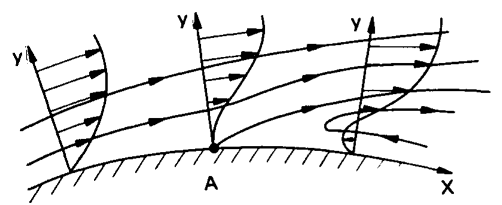
Hucho, Fig. 2.7. Separación sobre una pared que se curva. A la izquierda, un perfil normal. En A la pendiente en la pared llega a cero ( = 0): es el punto de separación. A la derecha, el aire junto a la pared ya va para atrás y las líneas de corriente se despegan.
La regla. Sin gradiente adverso no hay separación. Donde la presión baja en el sentido del flujo, no hay ninguna tendencia a despegarse.
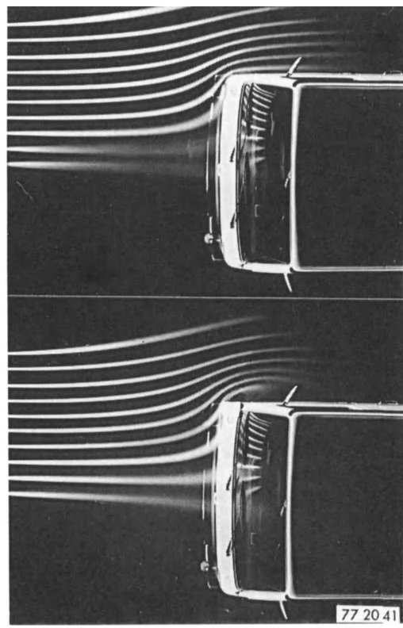
Hucho, Fig. 1.42. Hilos de humo sobre el frente de una furgoneta VW LT a escala real. Arriba, con la esquina redondeada con el radio óptimo, el flujo sigue pegado. Abajo, con la esquina viva, se despega.
Consecuencias de la separación.
- Detrás quedan vórtices grandes de muy baja presión.
- Con alta presión adelante del cuerpo y succión atrás, aparece un drag muy alto. Es el drag "de forma" o de presión, y es lo que la paradoja de d'Alembert no podía ver: en el modelo ideal, la presión se recuperaba atrás; en la realidad, el flujo se despega antes de recuperarla. Hucho lo dice con el cilindro: adelante la distribución de presiones se parece a la ideal, y atrás la separación deja una succión considerable (Hucho, §2.3.3.4).
- En un perfil, la separación es la entrada en pérdida: el ala deja de generar carga (§9).
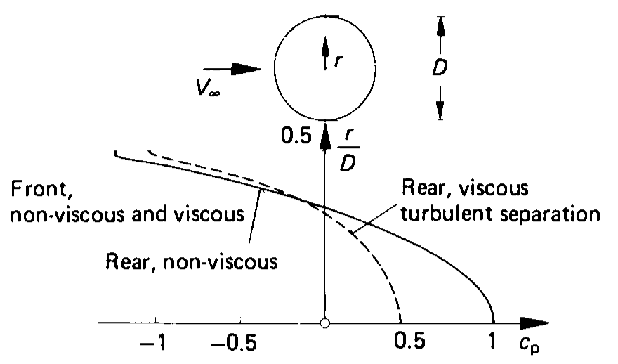
Hucho, Fig. 4.40. sobre la cara de adelante y la de atrás de una esfera, según la distancia al eje . Adelante, el flujo ideal y el real coinciden. Atrás, el ideal recupera la presión hasta = 1, pero el real, separado, llega apenas a ~0,45. Esa presión que no se recupera es el drag de forma.
Lo que hay que retener.
- Para tener carga hay que evitar la separación. Que la capa límite sea laminar o turbulenta importa mucho menos.
- Una capa límite turbulenta adherida da mucho menos drag que cualquier capa límite separada. La fricción extra de la turbulencia es un costo chico al lado del drag de una separación.
- La capa turbulenta resiste mejor la separación. Hace falta un gradiente adverso mayor para despegarla, porque la mezcla turbulenta lleva cantidad de movimiento desde el flujo exterior hacia la pared (Hucho, §2.3.3.2). Es el perfil "lleno" de §4.1 trabajando a favor.
4.3 Coeficiente de presión
Para comparar presiones entre autos, velocidades y simulaciones distintas conviene sacarles las unidades. El coeficiente de presión mide la presión en un punto respecto de la del aire libre (), en unidades de presión dinámica:
La segunda igualdad sale de Bernoulli, y permite leer el directamente como velocidad local:
| Velocidad local | Dónde | |
|---|---|---|
| 1 | Punto de estancamiento | |
| Entre 0 y 1 | Menor que la del auto | Zonas donde el aire se frena |
| 0 | Igual a la del auto | Aire sin perturbar |
| Negativo | Mayor que la del auto | Zonas de succión |
El techo y el piso del .
- en el estancamiento, y no puede superar 1. Lo máximo que se le puede sacar al aire es frenarlo del todo. La presión máxima tiene techo y se conoce de antemano.
- La presión mínima no tiene piso. Depende de cuánto logre acelerar la geometría al flujo sin que se despegue. Aparecen de −6 o −7.
- Conclusión de diseño: para generar carga, lo que importa es conseguir la zona de baja presión más baja posible, no la de alta. La sobrepresión está limitada; la succión, no.
Cómo se grafica. Los gráficos de suelen tener el eje vertical invertido (los valores negativos hacia arriba), así que conviene mirar la escala antes de leerlos.
Perfil típico de un auto.
- Por abajo: negativo en todo el piso.
- Por arriba: negativo sobre el capot, un pico positivo en la base del parabrisas (el segundo estancamiento de §2.3), el mínimo en el techo y la recuperación en la luneta, que es un gradiente adverso.
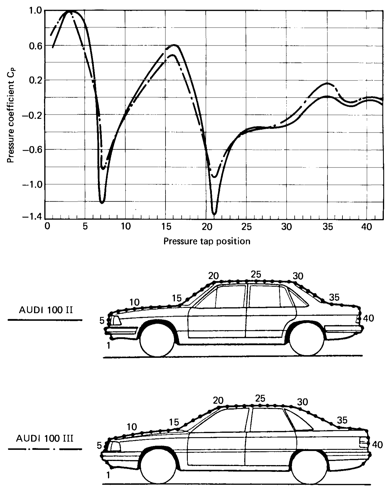
Hucho, Fig. 4.33. medido a lo largo del contorno superior de dos Audi 100 (línea llena: modelo II, = 0,42; trazo y punto: modelo III, = 0,30). Los números de los dibujos ubican cada toma. Se lee la secuencia: estancamiento en la trompa ( = 1, toma 3), succión en el borde del capot (toma 7), segundo estancamiento en la base del parabrisas (toma 16), mínimo al pasar al techo (toma 21) y recuperación hacia la luneta y la cola. El eje vertical no está invertido.
Cómo leer un mapa de presiones. Con la escala habitual (azul = baja presión, rojo = alta):
- Ir de azul a rojo en el sentido del flujo es un gradiente adverso. Ahí hay riesgo de separación: es donde hay que mirar.
- Ir de rojo a azul es un gradiente favorable. No hay riesgo.
4.4 Cómo se controla la separación
Todo lo que sigue apunta a lo mismo: que el aire cercano a la pared llegue con energía suficiente a la zona de gradiente adverso.
Generadores de vórtices.
- Son aletas más chicas que el espesor de la capa límite: de milímetros.
- Se ponen antes de la zona de gradiente adverso (el final del techo, el extradós de un ala).
- "Energizan" la capa límite: los vórtices que generan mezclan aire rápido de afuera con el aire lento de la pared. La capa llega turbulenta y con más velocidad cerca de la superficie, y no se separa. Se paga con algo más de fricción.
- Tienen un límite: si el ángulo de ataque es excesivo, ningún generador alcanza.
La pelota de golf. Una esfera siempre separa. Los hoyuelos fuerzan la transición temprana y dejan a la pelota siempre del lado turbulento de la curva: más fricción, pero estela más angosta y, sobre todo, un comportamiento estable y predecible.
- A la pelota del Mundial 2010 le pasaba lo contrario: trabajaba justo en la transición, y tenía trayectorias raras.
Rugosidad. Adelanta la transición y aumenta la fricción, pero puede retrasar la separación. Hay que saber dónde ponerla.
Alerón multicuerpo (main + flap). Para la misma cuerda total, un alerón de dos elementos es mejor que uno de un solo cuerpo.
- Entre los dos elementos queda una ranura estrecha, el gap. El aire que pasa por ahí se acelera, va de la cara de presión a la cara de succión del flap y energiza la capa límite de la cara de succión. Cumple el papel de un generador de vórtices (§9.7).
Gurney. Una aleta chica en el borde de fuga, que succiona el flujo de abajo del último elemento (§9.8).
Autos de calle. Casi no usan generadores. Las formas trabajadas (los espejos, por ejemplo) buscan mantener el flujo adherido, sobre todo para bajar el ruido.
En limpio
- Capa límite: la zona delgada donde el aire pasa de velocidad cero (pared) a la del flujo libre.
- En un auto es turbulenta casi desde el principio: la laminar dura ~12 cm a 200 km/h.
- La turbulenta tiene más fricción, pero aguanta más sin despegarse.
- Gradiente adverso (presión que sube en el sentido del flujo) → el aire lento de la pared se frena y retrocede → separación. Sin gradiente adverso no hay separación.
- La separación da drag alto y, en un ala, pérdida. Evitarla es la prioridad.
- : máximo 1 (estancamiento), sin mínimo. La carga se busca en la succión.
- En un mapa, de azul a rojo en el sentido del flujo = riesgo de separación.
- Se controla energizando la capa límite: generadores de vórtices, rugosidad, gap del multicuerpo.
Lo que sigue. Ya sabemos qué presiones y qué tensiones de corte aparecen sobre la superficie. Falta sumarlas para obtener lo que de verdad siente el auto: fuerzas.
5. Fuerzas y coeficientes aerodinámicos
La pregunta de esta sección: ¿cómo se pasa de un mapa de presiones a un número que diga cuánto frena y cuánto carga el auto, y cómo se comparan dos autos o dos configuraciones?
5.1 De la presión a la fuerza
La idea. El aire solo puede hacerle al auto dos cosas, y las dos se vieron en §2: empujarlo o succionarlo en forma perpendicular a la superficie (presión) y arrastrarlo en forma paralela a la superficie (corte). Sobre un pedacito de superficie de área , la fuerza es:
- es la normal: el vector perpendicular a la superficie, que apunta hacia afuera del auto.
- El signo menos está porque una presión positiva empuja hacia adentro, en contra de la normal. Una presión negativa (respecto de la referencia) "succiona" hacia afuera.
- es la tensión de corte, tangente a la superficie.
El CFD entrega y en cada punto de la superficie, así que da la fuerza punto a punto. Sumando todos los pedacitos (integrando) se obtiene la fuerza total. Con se obtiene el momento (§7).
Cuánto pesa cada parte. La presión es el 80–95 % del total. El corte es, como mucho, ~10 % del drag, y pesa menos cuanto más alto es el Reynolds. Coincide con Hucho: en los autos, la parte predominante de la resistencia es de presión; la fricción solo domina en cuerpos muy fuselados sin separación (Hucho, §2.3.3.4).
- Si se consideran presión y corte, el punto de aplicación de la fuerza se llama centro aerodinámico; con solo presión, centro de presiones. En la práctica son lo mismo.
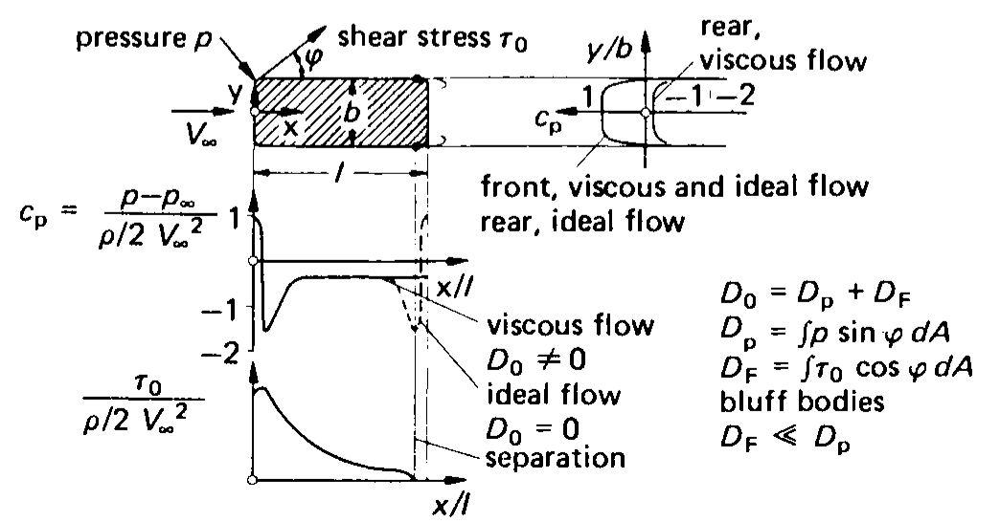
Hucho, Fig. 4.13. Drag de presión y de fricción sobre un cuerpo romo: la presión actúa normal a la superficie y el corte, tangente. Con flujo ideal la presión se recupera atrás y el drag total es cero. Con flujo real hay separación, la cola queda en succión y . En los cuerpos romos, .
Las tres proyecciones. La fuerza total se descompone según los ejes de las convenciones:
| Eje | Fuerza |
|---|---|
| Drag (resistencia) | |
| Lift (sustentación; con signo cambiado, carga) | |
| Fuerza lateral |
Un auto asimétrico (con el escape a un costado, por ejemplo) tiene fuerza lateral incluso en recta, y el piloto la compensa con el volante.
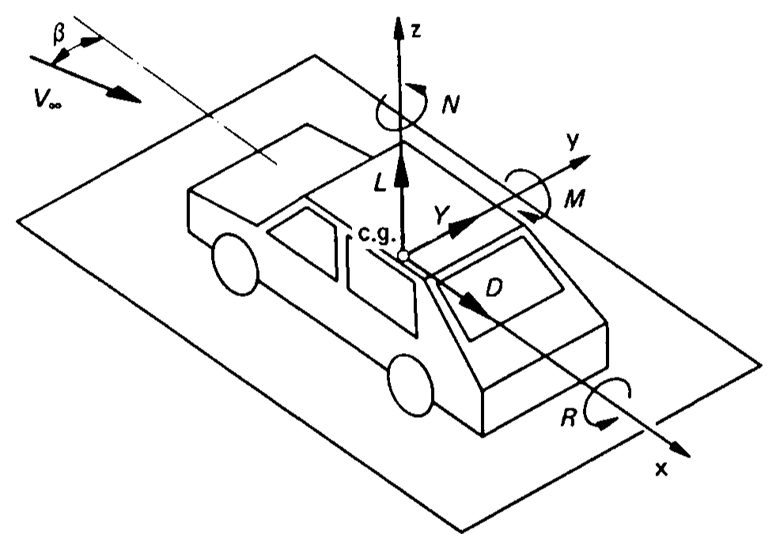
Hucho, Fig. 2.14. Las tres fuerzas (drag , fuerza lateral , lift ) y los tres momentos (rolido , cabeceo , guiñada ) sobre el auto, con el viento llegando con un ángulo . Hucho los refiere al centro de gravedad y con su propio sentido de ejes; en el curso se usan las convenciones del principio y el eje delantero como referencia (§7.1).
Qué se puede tocar. En la fórmula hay tres ingredientes: la presión, el área y la normal. El área y la normal son la geometría. Lo que se manipula es la presión, cambiando la geometría. Y los efectos no son lineales: un cambio local repercute en otra zona del auto (§8). No se puede optimizar una pieza aislada y suponer que el resto queda igual.
5.2 Coeficientes
La objeción natural. Si lo que importa son las fuerzas en newtons, ¿para qué inventar coeficientes? Porque la fuerza cambia con la velocidad, con la densidad del aire y con el tamaño del auto, y eso hace imposible comparar. Un coeficiente saca esas tres cosas de la cuenta y deja solo lo que aporta la forma.
y lo mismo para (con la fuerza vertical) y (con la lateral).
Para leerlo: el denominador es la presión dinámica del aire libre por un área, o sea, la fuerza que haría el aire si se estancara por completo sobre esa área. El coeficiente dice qué fracción de esa fuerza de referencia aparece realmente como drag o como lift.
- El divisor es el mismo para los tres coeficientes. es la velocidad del auto y es el área frontal: la "sombra" que proyecta el auto iluminado de frente con luz paralela. Es una convención (también Hucho usa el área frontal, §2.3.3.4). Lo que cambia entre coeficientes es el numerador.
- No dependen de la velocidad, siempre que haya turbulencia desarrollada (§3.2). Por eso, conocido el coeficiente, se calcula la fuerza a cualquier velocidad.
- Como la fuerza va con , a 100 km/h hay ~25 % del drag y de la carga que a 200 km/h.
- La densidad baja con la altura y con el calor (una diferencia de ~30 °C se nota) y cambia las fuerzas en forma lineal.
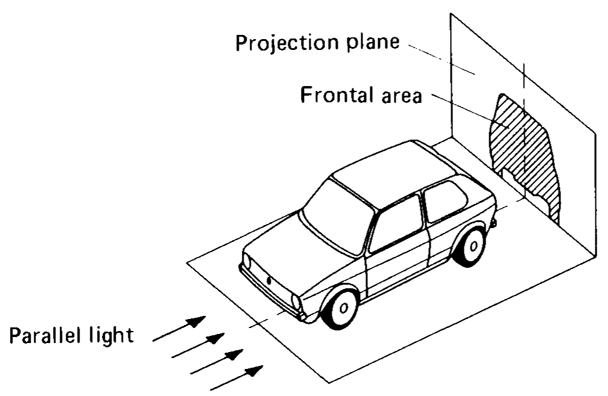
Hucho, Fig. 1.3. Área frontal : la sombra del auto proyectada sobre un plano perpendicular a la marcha.
El cuidado con los coeficientes. Lo que "ven" el motor, las ruedas y el piloto son newtons, no coeficientes. Si entre dos configuraciones cambia el área frontal (por ejemplo, un alerón más alto que sobresale del contorno), comparar solo los engaña: el coeficiente pudo bajar y la fuerza subir.
- Hay que trabajar con fuerzas, o con un área de referencia fija durante todo el año.
- Por eso los simuladores de vuelta piden directamente los productos y , que son la fuerza por unidad de presión dinámica.
En un perfil, el área de referencia no es la frontal, sino (envergadura por cuerda). En una simulación 2D, .
5.3 Valores de referencia
| Caso | ||
|---|---|---|
| Placa perpendicular | ~1,17 | 0 |
| Forma suave contra forma roma | 0,04 contra 1,15 | 0 si es simétrica |
| Auto de calle | 0,2–0,3 | > 0 (sustentación) |
| Auto de carrera en bajo drag | ~0,3 | |
| Turismo Carretera, circuito medio | ~0,45 | |
| TC / TC2000 actuales, sport prototipo | ~0,75 | ~−3 |
- La fila de "suave contra roma" sale de la Tabla 2.1 de Hucho: 0,04 para un cuerpo fuselado y 1,15 para un cilindro corto puesto de frente. Con la misma área frontal, casi 30 veces de diferencia solo por la forma.
- Hucho da 0,30–0,52 para los autos de calle europeos de su época (1987); el rango del curso, más bajo, es el de los autos actuales.
- Un auto de carrera con mucha carga tiene más del doble de que un auto de calle. Es la historia de §1 en números.
- Las formas simétricas respecto del flujo dan . Sirve para verificar una simulación. Si hay emisión de vórtices, el oscila, pero su media es 0.
5.4 Eficiencia aerodinámica: útil pero peligrosa
Qué es. El cociente entre la carga y el drag:
Geométricamente es la tangente del ángulo de la fuerza neta: cuanto más vertical apunta la fuerza, más carga se obtiene por cada newton de drag.
La carga nunca es gratis. Siempre cuesta drag. Horacio lo resume así: "La carga es drag, no hay magia". Hay dos mecanismos:
- Drag inducido. Para cargar, un ala tiene que generar baja presión en una de sus caras, y esa baja presión queda en parte mirando hacia atrás: además de tirar hacia abajo, "tira" del auto hacia atrás.
- Con rake (el auto inclinado, con la trompa más baja), la succión del piso se proyecta sobre áreas que miran hacia atrás.
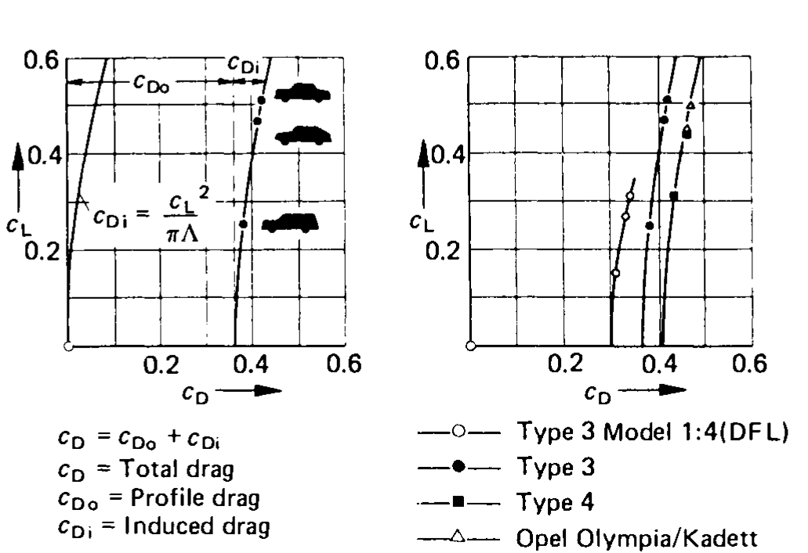
Hucho, Fig. 4.16. Lift contra drag para familias de autos de calle (sedán, fastback y rural). A la izquierda, la descomposición: el drag crece con la sustentación como , que es el drag inducido de un ala (, la relación de aspecto). Cualquier fuerza vertical, hacia arriba o hacia abajo, se paga con drag.
Tampoco existe lo contrario: nunca puede ser positivo neto, porque el auto se impulsaría solo.
Por qué es peligrosa. Más eficiencia no significa mejor auto. La eficiencia es un indicio para separar configuraciones rápido, pero no es definitoria.
- "Compara peras con manzanas". El actúa sobre el motor (velocidad en recta) y el sobre la rueda (velocidad en curva). Cuánto vale cada uno depende del circuito. El cociente solo sirve si una de las dos cosas queda fija.
- En un ejemplo de la cátedra, el setup más eficiente era casi 2 s más lento que el óptimo (§14.5).
- El orden correcto es: primero balancear el auto (§7.3) y después comparar carga contra drag, según el circuito, con la frontera de Pareto (§14).
En limpio
- Fuerza sobre cada pedacito de superficie: presión (normal) + corte (tangente). Se integra para tener la fuerza total.
- La presión es el 80–95 %. Lo que se manipula es la presión, y los efectos no son locales.
- Coeficientes: fuerza dividida por presión dinámica y área frontal. Aíslan el efecto de la forma y no dependen de la velocidad.
- Las fuerzas van con : a mitad de velocidad, un cuarto de la fuerza.
- Comparar con fuerzas o con , no con coeficientes sueltos si el área cambia.
- Eficiencia : sirve para filtrar, no para decidir.
Lo que sigue. Los coeficientes todavía no dicen nada del tiempo de vuelta. La sección 6 hace las dos cuentas que conectan la aerodinámica con la pista: cuánto se pierde en la recta por el drag y cuánto se gana en la curva por la carga.
6. Del coeficiente a la pista
La pregunta de esta sección: ¿cuánto vale un punto de o de en la pista? Hay dos cuentas simples, una para la recta y otra para la curva. Juntas explican por qué el automovilismo aceptó pagar tanto drag a cambio de carga (§1).
6.1 Velocidad máxima en recta
La idea. El auto deja de acelerar cuando toda la potencia que llega a las ruedas se gasta en vencer al aire. Esa es la velocidad máxima.
Potencia que absorbe el aire. Potencia es fuerza por velocidad. Si la fuerza de drag ya crece con , la potencia crece con :
Potencia disponible. No toda la potencia del motor va contra el aire: una parte se pierde en rodadura, alternador y demás. Se usa , con –.
Igualando las dos y despejando:
Ejemplo de F1. 1000 CV, , , m². Da m/s ≈ 369 km/h, con una fuerza de drag de unos 6.200 N.
Lo que enseña la raíz cúbica. Como la velocidad sale de una raíz cúbica, más potencia o menos drag dan mejoras chicas de velocidad final. Con los datos del ejemplo, bajar el de 0,65 a 0,60 (casi un 8 % menos de drag) sube la velocidad máxima un 2,7 %, unos 10 km/h. Y para ir un 10 % más rápido haría falta un 33 % más de potencia.
- Con aire frío, más denso, la velocidad final es algo menor.
- Esta cuenta hay que poder hacerla rápido, entre sesiones: "¿cuánto ganamos si pasamos de 0,65 a 0,60?". Es clave en pistas de mucha recta, como Rafaela.
Leída al revés, la misma raíz cúbica es la buena noticia para la carga: agregar drag cuesta poca velocidad de punta.
6.2 Velocidad en curva
La idea. Un neumático puede hacer una fuerza horizontal proporcional a la fuerza con la que está apretado contra el piso. Si el aire aprieta más el auto, el neumático puede hacer más fuerza, y esa fuerza es la que frena, acelera y hace doblar.
Círculo de fricción. La fuerza horizontal total que puede hacer el neumático, combinando la longitudinal (frenar o traccionar) y la lateral (doblar), tiene un límite:
- acá es el coeficiente de fricción del neumático, no la viscosidad.
- La carga agranda el círculo: mejora la tracción, el frenado y el giro, todo a la vez.
- Lo importante es que la carga suma fuerza vertical sin sumar masa. El peso también aprieta el neumático, pero trae inercia que hay que frenar y hacer doblar. La carga aerodinámica no (§7.5).
- Tomar constante es la gran simplificación. Un slick de F1 tiene –3, y en la realidad varía con la carga.
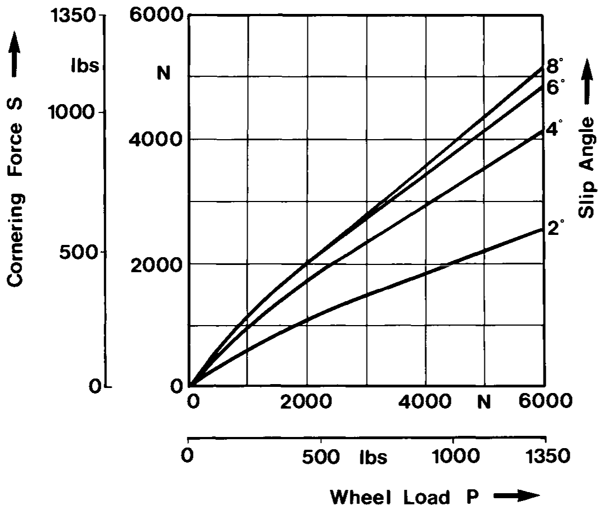
Hucho, Fig. 7.20. Fuerza lateral de un neumático contra la carga sobre la rueda, para distintos ángulos de deriva. Las curvas se aplanan: duplicar la carga no duplica la fuerza lateral. Por eso baja al subir la carga, y la ganancia real de la carga aerodinámica es algo menor que la de la cuenta con constante.
En el límite de la curva. La fuerza centrípeta necesaria para doblar con radio a velocidad es . En el límite, es igual a todo lo que puede dar el neumático:
La velocidad aparece de los dos lados: la carga depende de , y depende de la carga. En clase se resolvió iterando: se calcula sin aerodinámica, con esa se calcula la carga, con esa carga una nueva , y así hasta que cambie menos de ~1 %.
Ejemplo (500 kg, , m):
| Paso | Velocidad en la curva |
|---|---|
| Sin aerodinámica | 94 km/h |
| Con , una sola corrección | 107 km/h |
| Iterando hasta converger | ~112 km/h |
Casi 20 km/h más en una curva lenta. En una curva rápida la diferencia es mucho mayor, porque la carga crece con .
Recta más curva. Combinar las dos cuentas a lo largo de todo el circuito es lo que hace un simulador de tiempo de vuelta (§14).
Circuitos. En la mayoría de las pistas (salvo Rafaela, y quizás San Luis o Toay), un auto con mucha carga anda bien: frena más tarde y pasa las chicanas con buena velocidad mínima.
En limpio
- Recta: la potencia contra el aire va con . La velocidad máxima sale de una raíz cúbica, así que el drag cuesta poco y la potencia rinde poco.
- Curva: el límite es , y la carga sube sin sumar masa.
- La carga depende de la velocidad y la velocidad de la carga: se itera.
- Por eso, en casi todos los circuitos, conviene cargar.
Lo que sigue. Hasta acá se trató la carga como un solo número. Pero el auto se apoya en dos ejes, y no da lo mismo que la carga caiga adelante o atrás. Dónde cae es el tema de la sección 7, y resulta ser más importante que cuánta hay.
7. Momentos, reparto de carga y balance
La pregunta de esta sección: ¿cómo se reparte la carga entre el eje delantero y el trasero, y por qué ese reparto se mira antes que cualquier otra cosa?
7.1 Momentos
La idea. Una fuerza, además de empujar, hace girar según dónde esté aplicada. La carga de un alerón trasero empuja el auto hacia abajo, pero además, como está detrás del eje trasero, tiende a levantar la trompa. Eso se mide con el momento:
Es la misma suma de §5.1, pero cada fuerza multiplicada por su brazo respecto de un punto de referencia. Por convención, ese punto es el eje delantero.
| Eje | Momento |
|---|---|
| Roll (rolido) | |
| Pitch (cabeceo). sube la trompa | |
| Yaw (guiñada) |
- El coeficiente de momento se adimensionaliza como las fuerzas, pero con una longitud más: la distancia entre ejes .
- Auto simétrico, en recta y sin viento: solo hay cabeceo. Es lo único que puede dar una simulación 2D. No alcanza con viento cruzado, en curva o con autos asimétricos a propósito (NASCAR).
De seis números importan tres. El aire le hace al auto tres fuerzas y tres momentos. En recta y con simetría, quedan , y , que equivalen a , y : drag, carga delantera y carga trasera. El CFD no sabe de ejes ni de ruedas; entrega fuerzas y momentos. El reparto por eje es un postproceso que hay que hacer aparte.
7.2 Reparto entre ejes
La cuenta. Se piensa al auto como una viga apoyada en dos puntos, los ejes, y se reemplaza toda la aerodinámica por dos fuerzas verticales, una en cada eje. Tomando momentos en el eje delantero, la fuerza delantera tiene brazo cero y desaparece de la ecuación. Queda solo la trasera:
- El resultado no depende del punto elegido; el eje delantero es el más cómodo porque desacopla las ecuaciones.
- El signo de depende de la convención de ejes que se use. Conviene verificarlo con un caso obvio.
- Es un diagrama de cuerpo libre simplificado, con dos cargas puntuales en los ejes. No usa los centros de rolido o de cabeceo de la suspensión.
Cómo se habla en la práctica. Nunca de kilos por eje, siempre de carga total y balance: "estamos en 58 % adelante, movemos el ala 2° para bajar a 55 %". El balance es el porcentaje de la carga que cae en el eje delantero.
El drag también mueve el balance. Es fácil olvidarlo: el drag está aplicado alto (sobre todo el del alerón), así que también hace momento. Tira de la parte alta del auto hacia atrás, y con eso descarga el eje delantero y carga el trasero.
- Ala saturada: entre 22° y 26°, el ala ya no da más carga, pero sí más drag. Ese drag igual corre el balance hacia atrás.
- Por eso, si el piloto dice que "se fue la cola", subir el ángulo del ala corrige el sobreviraje por balance, aunque la carga total no suba o incluso baje.
7.3 El balance es un filtro "pasa / no pasa"
"Primero el balance, después lo demás." Un auto desbalanceado siempre es lento. Se descarta por más carga o menos drag que tenga. La razón es simple: de nada sirve tener mucha carga si está toda en un eje, porque el auto va a ir tan rápido como le permita el eje que menos agarra.
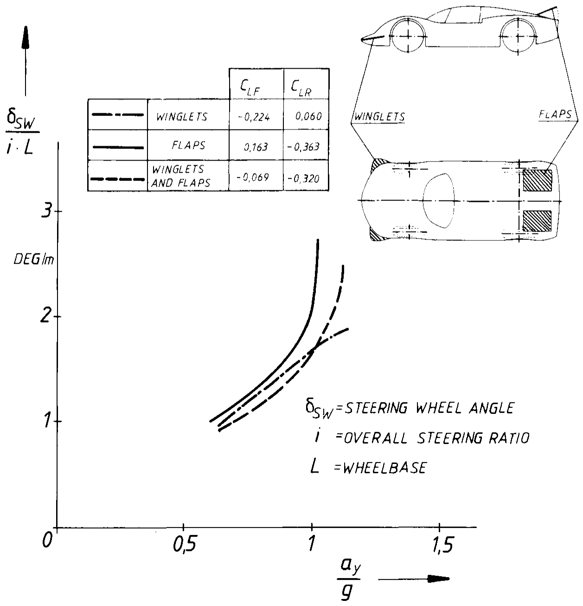
Hucho, Fig. 7.22. Ángulo de volante necesario contra aceleración lateral, en un sport prototipo con tres repartos de carga: solo winglets adelante ( = −0,224, = +0,060), solo flaps atrás ( = +0,163, = −0,363) y los dos juntos. Con carga solo atrás, el auto pide cada vez más volante y se planta de trompa cerca de 1 g: subvira. Con carga solo adelante, la curva se aplana: cada vez pide menos volante, que es la tendencia a sobrevirar.
Con qué se corrige. Con el ala y el rake (la inclinación del auto hacia adelante), y adelante con el splitter (§8.4).
- En el Mustang del curso, el ala barre el balance de ~0 a más de 100 %, y el rake, de ~35 a 60 %.
- Combinándolos se pueden llevar configuraciones distintas al mismo balance con distintos niveles de carga y drag. Recién ahí tiene sentido compararlas en un gráfico de contra .
Las comparaciones se hacen a igual balance (±1 %). Es fácil "ganar" carga total moviendo el balance (más ángulo de piso o más ala). Esa ganancia no sirve si después hay que deshacerla para volver a balancear. Y siempre hay un cuello de botella:
- en el TC, el piso le gana al ala;
- en el TC2000 "siempre sobraba ala": lo que faltaba era carga delantera.
Trims. Son las sensibilidades de cada parte: cuánto balance mueve un milímetro de altura, un grado de ala, etc. Sirven para saber cuánta ala o cuánta altura hace falta para rebalancear después de un cambio. Los simuladores de vuelta los aplican como correcciones sobre el mapa aerodinámico (§14.2).
7.4 Centro de presiones, CG y margen estático
Centro de presiones (CP). Es otra forma de decir lo mismo que el balance. En lugar de dos fuerzas en los ejes, se piensa en una sola fuerza aplicada en el punto donde el momento aerodinámico es cero. Se despeja de y , que son los resultados de la simulación.
- Con balance 100 %, el CP está en el eje delantero; con 0 %, en el trasero. Puede caer fuera de los ejes.
- En realidad hay dos: uno para las fuerzas verticales (, que define el balance) y otro para las laterales (, que aparece con viento cruzado o en curva).
Margen estático. Compara la posición del CP lateral con la del centro de gravedad:
La imagen para entenderlo es la flecha. Una flecha vuela derecha porque tiene las plumas atrás: si se cruza, el aire empuja de costado detrás del centro de gravedad y la endereza. Con las plumas adelante, cualquier desvío se agranda.
| Margen | Posición | Comportamiento |
|---|---|---|
| CP lateral detrás del CG | Estable, tiende al subviraje | |
| CP lateral delante del CG | Inestable, tiende al sobreviraje |
Un malentendido común. Corregir un auto que se va de cola dándole más carga trasera funciona, pero no porque se corra el .
- Lo que pasa es que sube el límite de adherencia del eje trasero, que entonces desliza más tarde. Es una corrección indirecta.
- El margen estático depende de la geometría y no se corrige directamente. Lo que se mueve con el ala y el piso es el CP vertical.
¿El CP debería coincidir con el CG? Los libros dicen que sí. Si no coinciden, el "centro neto" de fuerzas verticales (peso más aerodinámica) se mueve con la velocidad: está cerca del CG en las curvas lentas, donde manda el peso, y cerca del CP en las rápidas, donde manda la carga. El auto se comportaría distinto según la velocidad.
- En la práctica es imposible mantenerlo, por la aeroelasticidad: la carga aplasta el auto contra el piso. Sale de boxes con 60 mm de despeje y en pista tiene 40 mm. Eso mueve el balance más que cualquier desfase inicial entre CP y CG.
- Para evitarlo harían falta resortes tan duros que se perdería agarre mecánico (§10.4).
- ¿Lo óptimo es un auto neutro? No necesariamente. Depende del piloto y de la pista, y se ajusta en los entrenamientos.
Guiñada. En curva el auto no va alineado con su trayectoria: va con ~6° de deriva (en rally, hasta ~15°). El aire le llega cruzado.
- y el margen estático solo salen de una simulación con guiñada. A 0° las fuerzas laterales se anulan por simetría. Esa simulación es más cara, porque no se puede simular medio auto, y se hace poco.
- Por eso a veces todos los números indican inestabilidad y, sin embargo, el auto se va de trompa. Con guiñada suele aparecer un momento que estabiliza.
- Los elementos verticales (las aletas de la Ferrari 499P) trabajan la carga lateral. En TC y F1 casi no se usan.
7.5 Balance objetivo, peso y piloto
El balance es una foto. , y balance corresponden a una posición del auto. Pero la carga aplasta la suspensión y cambia la geometría, así que el balance cambia con la velocidad.
- En turismos, el balance se va hacia adelante al aumentar la velocidad, porque el piso carga más cuanto más bajo va (§10).
Cuatro posiciones notables en una curva: al pisar el freno, en el ingreso, en el vértice y al acelerar. Las más distintas son después de acelerar (trompa arriba, splitter más alto) y después de frenar (trompa abajo, splitter más bajo).
- Si hay que elegir una sola, Horacio usa la de garage, que se parece a la previa a acelerar. Para ser fino habría que simular el auto frenando, iterando la altura.
Balance objetivo.
- La referencia es 50 % para un auto con el mismo peso y las mismas ruedas en los dos ejes.
- La tracción delantera necesita mucho balance delantero: acelerando, el eje delantero gasta el agarre en traccionar y le queda menos para doblar.
- La tracción trasera pide carga atrás, pero no tanta. Los TC, con palas y piso delanteros, quedan de cola en el ingreso.
- TC2000, ~60–65 %; TC, ~50 %. Varía entre 0 y 5 puntos según el circuito, pero es casi fijo en el año, porque depende de los pesos, la suspensión y los neumáticos.
- Se busca en la primera prueba de pista: es el balance con el que el piloto está cómodo. Se lo mide en la prueba aerodinámica y queda como referencia.
Cuánto cuesta errarle. En la curva de tiempo de vuelta contra balance (una parábola), la filmina pierde ~1 s cada 5 % y empeora rápido. Ningún ni compensa un desbalance.
Excepciones.
- Rafaela: se corre con más balance delantero del habitual (auto de cola), porque lo que se baja de ala se gana en la recta.
- TC2000 2019 (muy poca carga delantera por reglamento): con poca carga total, el desbalance aerodinámico pesa poco frente al de pesos, porque la rueda ve la fuerza total. Un F1 desbalanceado, en cambio, "hace trompos saliendo de boxes".
Ante la duda, errar hacia poco balance delantero (que el auto quede de trompa). Un auto sobrevirante es lo más peligroso. Horacio contó un accidente en el primer entrenamiento de un auto que debutaba en el equipo.
Peso contra carga. Los dos aprietan el neumático, pero no son equivalentes.
- Peso adelante → más subvirante; peso atrás → más sobrevirante (en un ingreso con el motor cortado). Parece al revés de lo esperado. La conversión de fuerza vertical en fuerza lateral tiene coeficiente menor que 1 y se satura: el peso suma fuerza en ese eje, pero acerca el CG a ese eje y le quita brazo de palanca.
- El peso en el baúl además sube el momento de inercia: el auto rota más lento.
- "Nunca es negocio agregar peso para ir más rápido." La carga da fuerza normal sin inercia. Con el auto por debajo del peso mínimo, el lastre sí sirve para ajustar el balance estático.
- El "zapateo" del TC: la masa no suspendida trasera (la cañonera, casi 200 kg) es comparable con la suspendida (menos de 500 kg). Se mueven en fase, el amortiguador no trabaja y el eje resuena. Se calma con peso atrás, amortiguadores más duros o reparto de freno hacia adelante.
Tendencia típica dentro de una curva. Cola en lo rápido, trompa en lo lento; cola frenando, trompa acelerando. No se cura, se reparte. La altura del splitter actúa sobre todo en el ingreso, cuando va más bajo; el alerón trabaja igual en las dos fases.
El piloto también cuenta. Unos manejan más de cola y otros más de trompa; unos hacen la curva en V y otros más redonda. Y el auto define la trayectoria óptima: con poca carga conviene la V.
En limpio
- De la simulación salen , y . Con se reparte la carga: .
- Balance = porcentaje de la carga en el eje delantero. Se habla de carga total y balance.
- Primero el balance: un auto desbalanceado es lento siempre. Se compara a igual balance (±1 %).
- El drag, aplicado alto, corre el balance hacia atrás.
- Margen estático: CP lateral detrás del CG, estable (la flecha). Solo se obtiene con guiñada.
- El balance cambia con la velocidad porque el auto se aplasta.
- Objetivo: TC ~50 %, TC2000 ~60–65 %. Ante la duda, de trompa.
- Carga es fuerza normal sin inercia. El peso, no.
Lo que sigue. Ya está claro qué se busca: carga, con poco drag y en el balance correcto. La sección 8 recorre las piezas con las que se consigue, empezando por entender por qué un auto sin ninguna de ellas tiende a levantarse.
8. Apéndices aerodinámicos
La pregunta de esta sección: ¿qué hace cada apéndice, por qué va donde va y qué le hace al resto del auto? El orden es el de la historia de §1, ahora con la física de §2 a §5.
8.1 Por qué un auto con techo tiene sustentación positiva
El mapa de presiones típico de un auto sin apéndices:
- Alta presión en las zonas de impacto: el morro y la base del parabrisas.
- Baja presión arriba y abajo, porque el aire se acelera en los dos lados para rodear al auto.
- Baja presión detrás, por el desprendimiento.
El techo succiona hacia arriba y el piso succiona hacia abajo. Las dos fuerzas compiten, y la succión del techo es más intensa: la resultante apunta hacia arriba.
En una frase: el aire se acelera demasiado en el techo, o no lo suficiente debajo del auto. Todos los apéndices atacan una de esas dos cosas, o las dos.
- La explicación simplificada es que por arriba el recorrido es más largo y el aire va más rápido. (Ojo: no es porque las partículas de arriba y de abajo tengan que llegar juntas atrás; las de arriba incluso llegan antes. Ver §9.1.)
- El habitáculo obliga a esa forma. Lo que se puede hacer es optimizar el lift de carrocería con los ángulos del parabrisas y la luneta y con la trompa: "son muchísimos kilos que se pueden evitar".
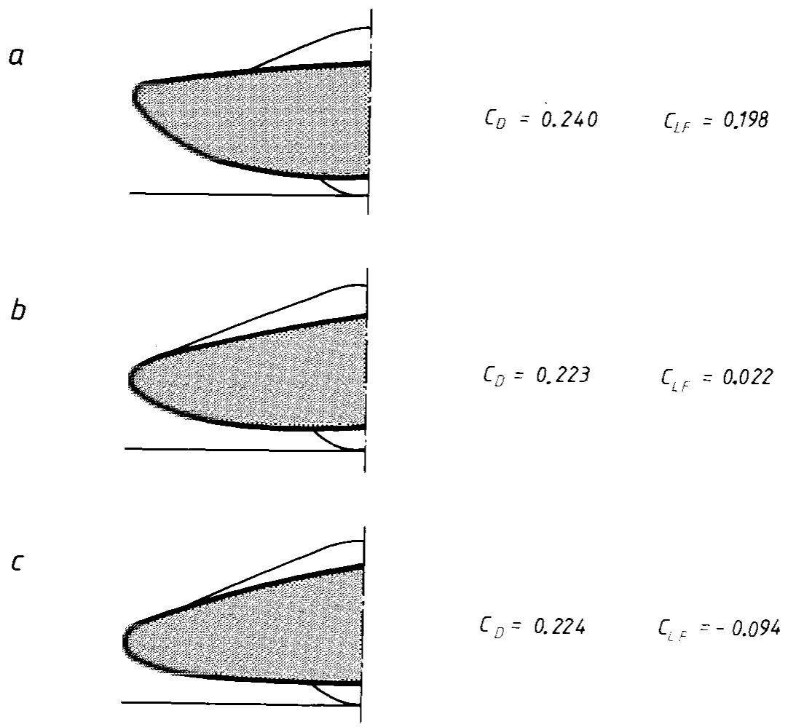
Hucho, Fig. 7.29. Tres trompas para un mismo auto de carrera. Bajar y afinar el morro lleva el lift delantero de = +0,198 a −0,094 sin cambiar el drag ( ≈ 0,22–0,24). Es lift de carrocería que se evita sin agregar apéndices.
Spoiler o alerón. La diferencia es geométrica:
- Spoiler: pegado a la carrocería en forma continua, sin gap. El aire pasa por una sola cara.
- Alerón: separado de la carrocería, con gap o estructura propia. El aire pasa por las dos caras.
8.2 Spoiler trasero
Qué hace. Estropea el flujo rápido que viene por el techo: lo frena. Por Bernoulli, al frenarse sube la presión sobre la parte trasera de la carrocería. Se pierde la sustentación, y puede incluso aparecer carga.
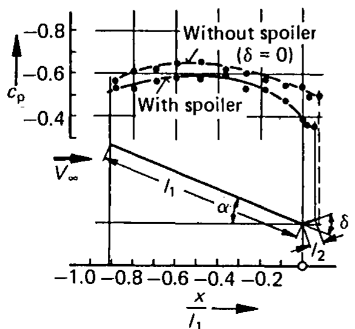
Hucho, Fig. 4.88. sobre la luneta inclinada de un fastback, sin spoiler y con un spoiler en el borde de fuga ( es su ángulo). Con spoiler la succión sobre la luneta baja: sube la presión y con ella se reduce la sustentación trasera. El eje vertical está invertido.
Por qué va atrás. Va escondido detrás de la luneta porque ahí casi no agrega drag: está en una zona donde el flujo ya venía frenado o desprendido. Sobre el techo sería una chapa contra el flujo.
- Dato empírico: una placa vertical de ~8 % de la distancia entre ejes baja el en ~0,45.
- No siempre sirve. Si las líneas de corriente no llegan hasta él (SUV, autos sin cola), es decorativo. El Falcon tenía un elemento adelante para que el aire "girara" hasta el spoiler.
El efecto no es local. Es la lección más importante del spoiler, y sale del caso 2D del Mustang:
- Al estropear el flujo de arriba, se acelera más el de abajo. El aire que no pasa cómodo por arriba pasa por abajo.
- El lift pasa de +1170 N a −1600 N, y el drag, de 600 a 780 N.
- El balance pasa de muy trasero a ~68 % adelante. Un apéndice puesto atrás del todo terminó cargando adelante, porque cambiaron las dos cargas.
"No se puede armar como un rompecabezas: siempre hay que mirarlo a nivel integral."
8.3 Spoiler delantero (air dam), faldones y polleras
La idea. Si el problema es que el aire no se acelera lo suficiente debajo del auto, una opción es directamente no dejarlo entrar: una pantalla bajo el paragolpes "desagota" el aire de debajo del auto y deja ahí una zona de baja presión que succiona.
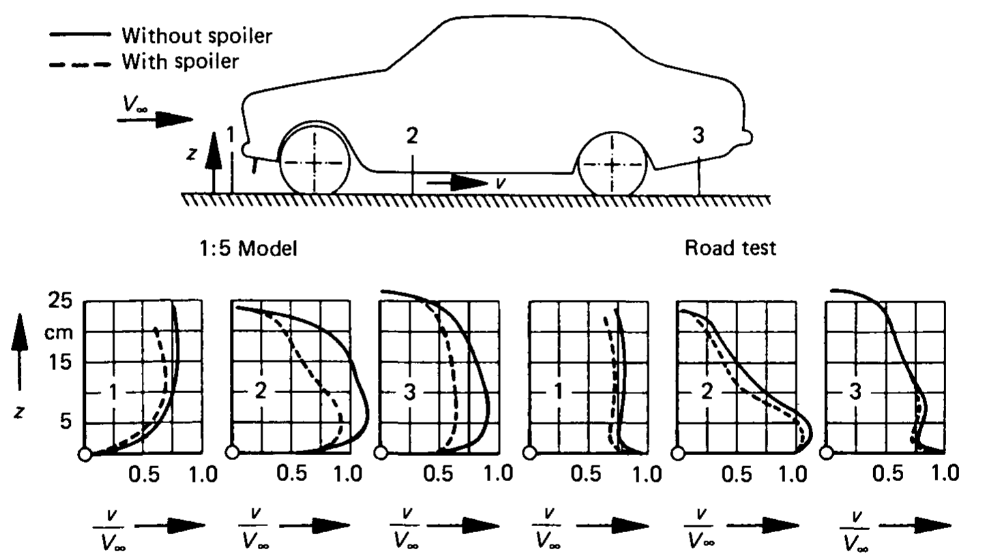
Hucho, Fig. 4.81. Velocidad del aire debajo de un auto sin spoiler delantero (línea llena) y con spoiler (trazos), en tres estaciones: 1, delante; 2, bajo el piso; 3, detrás. A la izquierda, modelo 1:5 en túnel; a la derecha, medición en ruta. Con el spoiler entra menos aire debajo del auto.
- Sirve cuando el reglamento no permite efecto suelo (TN, Turismo Pista).
- Ventaja extra: la baja presión llega al vano motor y aumenta la diferencia de presión a través de los radiadores y las tomas de freno. Con más pasa más aire, así que alcanzan tomas más chicas. Hucho describe lo mismo: el spoiler delantero reduce la sustentación en el frente del auto y aumenta el caudal de aire de refrigeración (Hucho, §4.3.2.9).
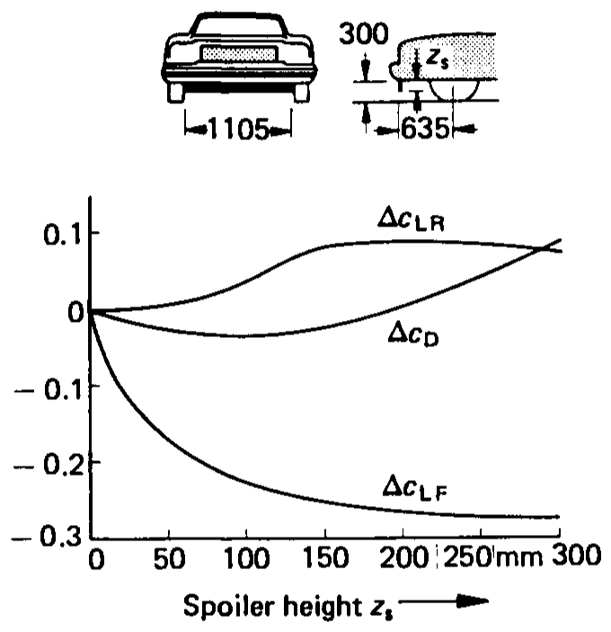
Hucho, Fig. 4.84. Efecto de la altura del spoiler delantero de un sedán. El lift delantero baja mucho ( ≈ −0,27 con 300 mm), el trasero sube algo ( ≈ +0,09) y el drag primero baja y después sube. El efecto llega a los dos ejes.
Faldones laterales ("polleritas"). Muy usados en los 80 y 90, de goma o de cepillos. Bloquean la entrada lateral de aire, para que el vacío de abajo no se rellene por los costados.
- Tiene un límite (discusión de Horacio en TC2000): la entrada delantera se satura, y al tapar los costados se pierde la carga que generaba ese aire lateral al entrar rápido y acelerarse sobre los pontones.
- El efecto neto puede ser negativo. Hay que probarlo en CFD o en pista.
- El reingreso de aire lateral bajo el piso suele generar carga. En TC2000, trabajar con planos en esa zona le "consumía" energía al aire, y se perdía carga atrás.
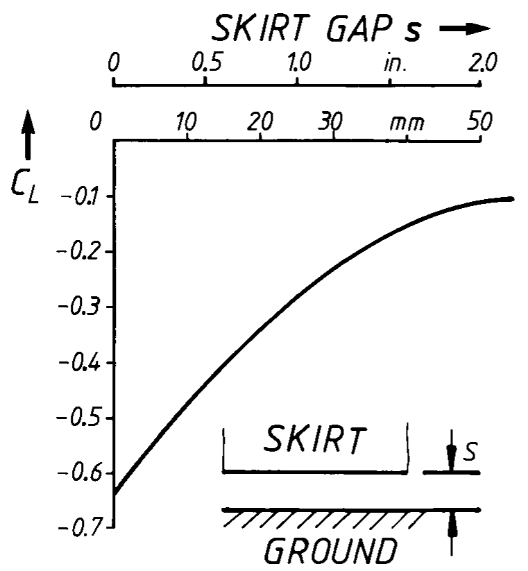
Hucho, Fig. 7.39. Carga de un monoplaza de efecto suelo contra la luz entre el faldón y el piso. Con el faldón casi tocando, ≈ −0,63; con 50 mm de luz, apenas −0,1. Sellar los costados era lo que hacía funcionar el efecto suelo de fines de los 70.
De ahí sale una pregunta que conviene hacerse siempre: ¿de dónde viene el aire que llega a cada lugar?
La evolución natural. En vez de una caja vacía bajo el auto, un piso inclinado (difusor) con un huelgo prudente, que acelere el aire en lugar de bloquearlo. Así se llega al efecto suelo (§10).
8.4 Splitter
Qué es. El labio horizontal que sobresale bajo el morro. Está justo en la zona de estancamiento, la de presión máxima de todo el auto.
Por qué es tan buen negocio.
- La alta presión del estancamiento queda arriba del splitter y lo empuja hacia abajo.
- Al ser horizontal, esa presión no tiene componente hacia atrás: casi no genera drag. Es carga casi gratis.
- Con un huelgo prudente respecto del piso, además acelera el flujo por debajo: alta presión arriba y baja abajo.
Para qué se usa. Está lejos del CG, así que tiene mucho brazo: es el primer elemento para trabajar el balance delantero. Y su efecto es mucho más local que el del spoiler trasero.
Configuración 2D completa del curso (difusor + splitter + spoiler): , , balance ~80 % adelante. "Ya se parece a un auto real."
8.5 El ala trasera sobre el auto
Un alerón montado en un auto no trabaja como en un túnel, solo y con aire limpio. Hay tres cosas que lo cambian.
1. El ángulo efectivo. El aire baja siguiendo el techo y la luneta. Cuando llega al ala ya viene inclinado hacia abajo, así que un ala puesta a 0° respecto del piso ya tiene ángulo de ataque. Detrás del Mustang, el flujo llega con ~−5° a −15°.
- Por eso se puede poner el ala en incidencia negativa y seguir cargando, con muy poco drag.
- TC2000 en Rafaela 2018: se usó solo el main del ala doble, a −7°, porque con dos chicanas la velocidad final era clave.
- Balance de esos autos: sin alerón, ~130 % (hay lift atrás); con el ala a 0° efectivo, 80–90 %; a −7°, 65–70 %. Más allá de −9° o −10° puede oscilar entre carga y sustentación.
2. Es la herramienta de ajuste principal. Barrido del ángulo del ala en el Mustang 3D:
- De −10° a +10°, la carga total va de ~360 a ~1.050 N, con el costo de drag correspondiente.
- Más ala da balance más trasero.
- Los puntos caen sobre la diagonal de la "sábana corta": si se tapa la carga, se destapa el drag.
- Es la herramienta de control más poderosa con el menor costo de mecánico. El barrido del ala es lo primero que se hace en una prueba aerodinámica.
- Señal práctica de saturación: si al dar más ala el auto ya no se frena más en la recta, es que dejó de cargar (desprendió). Con todavía más ángulo vuelve a frenarse, pero solo por área frontal.
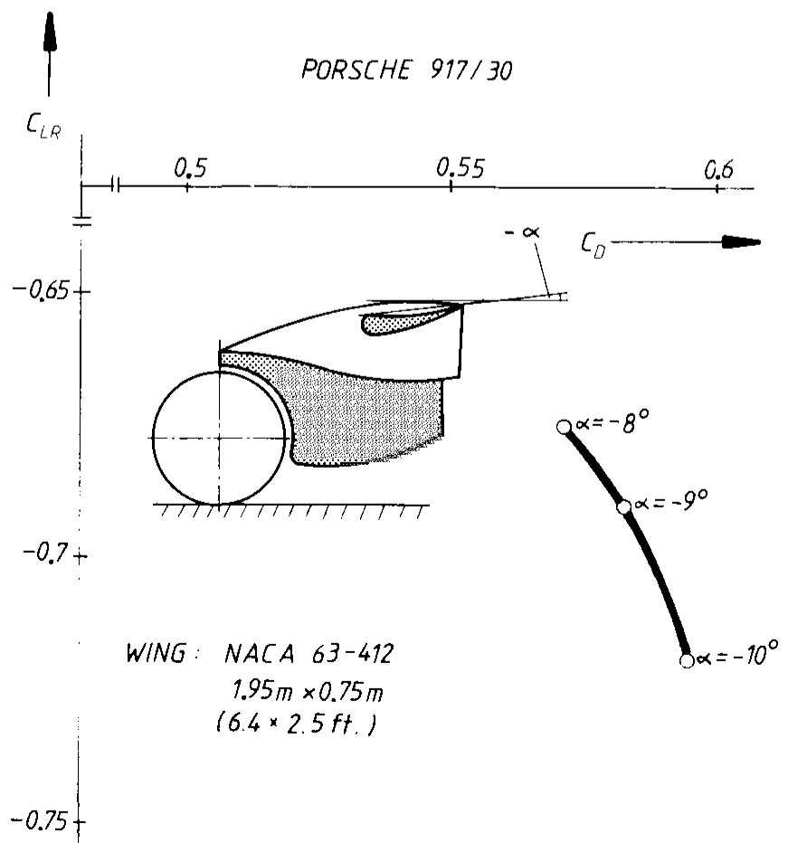
Hucho, Fig. 7.35. Barrido del ángulo del alerón trasero (NACA 63-412 de 1,95 × 0,75 m) en un Porsche 917/30. De −8° a −10° la carga trasera crece ( de ~−0,68 a ~−0,72) y el drag también ( de ~0,57 a ~0,59): cada punto cae sobre la diagonal de la «sábana corta».
3. Interactúa con el baúl y con el piso.
- La "cola de pato" del baúl "agarra" el flujo y le da al ala una dirección más favorable. Está muy acoplada al ala: se estudian juntas, con una matriz de varias colas de pato por 2 o 3 ángulos de ala.
- En los Challenger de TC, el ala está muy encima del baúl, y quitarle ángulo "cierra" el gap.
- El ala "tracciona" el piso. La succión del ala baja la presión a la salida del piso, y eso hace pasar más caudal por debajo. Sin ala, se muere la carga del piso. Consecuencia práctica: al estudiar el piso hay que darle bastante ala.
Regla de ubicación. Más alta y más atrás funciona mejor: recibe aire más limpio y tiene más brazo. Pero hay dos límites: si se separa demasiado del baúl se pierde la sinergia con la cola de pato, y si queda muy alta se pierde la tracción del piso.
El flujo 3D que le llega. Las líneas de corriente muestran que el ala "aglutina" aire que viene del centro del auto; las líneas de afuera la esquivan por los costados.
- El vórtice que nace del pilar A puede terminar impactando en el ala, que recibe así aire con menos energía. No es deseable.
8.6 End plates
El problema que resuelven. Un ala tiene alta presión en una cara y baja en la otra. En las puntas no hay nada que separe las dos zonas, y la diferencia de presión "se escapa": el aire pasa de un lado al otro rodeando la punta y forma un vórtice. El vacío del ala no llega a ocupar todo el ancho. Además, los laterales son puntos críticos de drag.
¿La placa va hacia arriba o hacia abajo? Se decide comparando la presión de cada cara con la del aire al costado del ala:
| Cara | Presión en el ala | Presión al costado | Diferencia a contener |
|---|---|---|---|
| Arriba (presión) | ~+500 Pa | ~150 Pa | Chica |
| Abajo (succión) | ~−1000 Pa | < 50 Pa | Grande |
Es lo mismo que se vio con el en §4.3: la sobrepresión tiene techo y la succión no, porque crece con . La diferencia que hay que contener está abajo, así que la placa va por debajo. La interacción con el auto puede introducir no linealidades.
- En la práctica (Horacio), los barridos con y sin end plates en el alerón del auto no fueron concluyentes.
- Reducen el vórtice, pero no lo eliminan. Haría falta una placa casi infinita y de espesor nulo. Con los reglamentos que exigen que el alerón sea la proyección de un corte 2D (Súper TC2000, TC2000, TC), lo óptimo suele ser la placa tan grande como el recuadro permitido y de espesor casi nulo (Juan).
- La teoría completa (drag inducido, curved tips) está en §9.9.
8.7 Lo que se optimiza en un auto real
- Los apéndices "grandes" vienen casi siempre optimizados. En un auto real se trabaja sobre cosas de segundo orden (espejos, siluetas del paragolpes), que son igual de valiosas.
- El espejo es de los pocos elementos que se pueden analizar bastante aislados, porque avanza sobre aire limpio. Sin gap respecto de la carrocería genera vacío y vórtices.
- El diseño real se hace en 3D. El 2D da tendencias relativas, no el "cuánto" (§12.10).
En limpio
- Auto sin apéndices: la succión del techo le gana a la del piso → sustentación.
- Spoiler trasero: frena el flujo del techo. Su efecto llega hasta el flujo de abajo y cambia el balance entero.
- Air dam y faldones: vacían el aire de abajo. Tienen un límite, y el aire lateral también puede cargar.
- Splitter: carga casi sin drag en la zona de estancamiento. Primer recurso para el balance delantero.
- Ala trasera: el aire le llega inclinado; puede ir en incidencia negativa. Más ala, balance más trasero. Tracciona el piso.
- End plates: contienen la succión de abajo.
- Nada es local: "no se puede armar como un rompecabezas".
Lo que sigue. El ala apareció varias veces como la herramienta principal. La sección 9 la mira por dentro: por qué un perfil genera fuerza, cómo se elige y qué cambia cuando tiene varios elementos o un ancho finito.
9. Perfiles alares
La pregunta de esta sección: ¿por qué un perfil genera fuerza, cómo se elige uno para un auto y qué cambia cuando el alerón tiene varios elementos, un ancho finito o el suelo cerca?
9.1 ¿Por qué aparece la sustentación?
La objeción natural. "Esto ya lo sé: el aire de arriba recorre más camino, va más rápido y por Bernoulli tiene menos presión." Es la explicación más difundida, y está incompleta. Supone que dos partículas que se separan en el borde de ataque llegan juntas al borde de fuga, y eso es falso: nada las obliga a reencontrarse.
En realidad hay cuatro explicaciones, cada una más completa que la anterior:
| Teoría | Idea | Limitación |
|---|---|---|
| Newton | El aire se desvía hacia abajo y, por reacción, el cuerpo sube | Necesita ángulo de ataque; no explica bien la magnitud |
| Bernoulli | Arriba el recorrido es más largo, la velocidad mayor y la presión menor | Supone que las partículas llegan juntas al borde de fuga, y es falso. No sirve con separación |
| Kutta-Joukowski | La sustentación es proporcional a la circulación: . Explica el vórtice de arranque | Supone capa límite adherida: no predice la pérdida |
| Navier-Stokes | Incluye viscosidad, capa límite y separación: explica todo | No tiene solución analítica: hace falta CFD |
"Ninguna es incorrecta, pero muchas son incompletas." Cada una sirve mientras se respete su limitación. Las tres primeras fallan justo donde más interesa en un auto: cuando el flujo se separa.
Cómo se pasa del avión al auto. Se espeja el perfil: lo que daba sustentación da carga. Pero el auto agrega tres cosas que el avión no tiene: el suelo, el propio auto y el aire sucio.
9.2 Terminología
Hace falta un vocabulario mínimo para leer cualquier curva o base de datos de perfiles.
- Alerón (wing): el cuerpo 3D. Perfil (airfoil): su sección 2D.
- Borde de ataque y borde de fuga: por donde entra y por donde sale el aire.
- Cuerda : la línea recta que une los dos bordes.
- Línea de curvatura media (camber): la línea equidistante del intradós y el extradós. Si coincide con la cuerda, el perfil es simétrico.
- Curvatura máxima y espesor máximo: pueden estar en posiciones distintas a lo largo de la cuerda.
- Ángulo de ataque : el que forman la velocidad incidente y la cuerda.
- Envergadura : el ancho del alerón.
- Relación de aspecto (aspect ratio, AR): qué tan "largo y angosto" es el alerón.
- Ala de avión: ~6.
- Alerón trasero de auto: ~2–3. Es baja, y eso tiene impacto en las cargas (§9.9).
En automovilismo: perfiles invertidos, de baja relación de aspecto, con suelo, auto y aire sucio. Los ángulos de carga son negativos.
9.3 Presiones, pérdida y curvas
Dos formas de generar la diferencia de presiones. Un perfil carga por dos mecanismos, que se suman (aunque no linealmente):
- el ángulo de ataque: inclinar el perfil respecto del flujo;
- la curvatura: un perfil curvo carga aun con .
La entrada en pérdida (stall). Parece que alcanzaría con dar cada vez más ángulo para tener cada vez más carga. No es así. En la cara de succión, el aire tiene que recuperar presión antes de llegar al borde de fuga: es un gradiente adverso, como el de §4.2. Cuanto más ángulo, más fuerte es ese gradiente. A cierto ángulo, la capa límite de la cara de succión se separa y se pierde carga.
Las dos curvas que describen un perfil.
- Curva –:
- un perfil simétrico tiene a (si no da cero, tiene curvatura);
- el crece con el ángulo hasta un máximo, que es el ángulo de máxima carga y a la vez el límite;
- más allá, cae: el perfil entró en pérdida.
- Polar –: cada punto es un ángulo. Se busca la esquina de máxima eficiencia. Para un auto, la de más negativo.
El ángulo de máxima carga no es el de máxima eficiencia. Es el dato que más conviene retener de estas curvas:
| Perfil | Máxima carga | Máxima eficiencia |
|---|---|---|
| Eppler 1200 | a ~17° | ~120–140, a ~4° |
| E420 (XFOIL, Re 10⁶) | a ~14° | ~137, a 5° |
| NACA 0012 | – a ~15° | — |
Entre el ángulo más eficiente y el de más carga hay unos 10°. En ese tramo se gana carga, pero cada newton cuesta cada vez más drag.
Estimación rápida de la fuerza de un alerón:
Conviene tenerla a mano. Simplifica el efecto 3D (§9.9), así que da un valor optimista.
9.4 NACA de 4 dígitos (MPXX) y otras familias
Los perfiles se agrupan en familias. La más conocida codifica la geometría en el nombre:
| Dígito | Significado | En el 2412 |
|---|---|---|
| M | Curvatura máxima, en % de la cuerda | 2 % |
| P | Posición de la curvatura máxima, en décimas de cuerda | 40 % |
| XX | Espesor máximo, en % de la cuerda | 12 % |
- Con 4 números, una fórmula analítica define toda la geometría.
- El 0012 no tiene curvatura: es simétrico, con 12 % de espesor.
En autos se usan perfiles "gorditos", de mucha curvatura y con el máximo hacia atrás: 8642, 4612… La razón es que trabajan a Re más bajo y con más turbulencia que un avión, así que necesitan más curvatura para llegar a la misma carga.
Otras familias: Joukowski, Selig (S1223…) y Eppler (el E420 es "de los más clásicos del automóvil").
9.5 Efectos de Re, curvatura y espesor
El mismo perfil no rinde igual en cualquier condición. Hay tres variables que mueven sus curvas.
1. El número de Reynolds. A mayor Re, más máximo, la pérdida se corre a ángulos mayores y el perfil es más eficiente.
- El alerón delantero (~500.000) y el trasero (~1–1,5 millones) tienen Re distinto, solo por la diferencia de cuerda.
- El delantero cae justo en la transición (§4.1): puede tener capa límite laminar, que resiste menos el gradiente adverso y desprende antes. Conviene forzar la turbulencia.
- Consecuencia: un perfil bueno para un avión no tiene por qué servir para un auto o un dron. Las curvas siempre se leen al Re de trabajo.
2. La curvatura. Más curvatura da más máximo y más eficiencia, pero el perfil entra en pérdida antes.
3. El espesor. El intermedio (12 %) es el más eficiente y el de más carga. El delgado (8 %) es el peor y entra antes en pérdida. "Ni el más gordo ni el más flaco."
En el curso se supone siempre capa límite turbulenta.
9.6 Cómo elegir un perfil
Criterios. Un perfil candidato para un alerón de auto tiene que cumplir:
- máximo > ~1,5 (el NACA 0012 no llega);
- eficiencia máxima > ~100;
- todo evaluado al Re de trabajo (~500.000 para un alerón de auto).
De dónde salen los datos, de la fuente más cara a la más barata:
| Fuente | Costo |
|---|---|
| CFD | Una simulación por cada ángulo |
| XFOIL (método de paneles) | Casi instantáneo |
| Bases de datos ya calculadas (Airfoil Tools) | Solo hay que buscar |
"Con esto ya se puede elegir un perfil sin ninguna simulación."
Entonces, ¿para qué el CFD? Para perfiles 2D de un solo cuerpo, el CFD no es la mejor herramienta. Pero el orden de trabajo es al revés de lo que parece: XFOIL y Airfoil Tools son "la biblia" para calibrar el setup de CFD. Primero se reproduce en CFD un perfil cuyo resultado se conoce. Recién cuando coincide se pasa a lo que solo el CFD puede hacer: multicuerpo, 3D y auto completo.
Qué mirar al calibrar. El es fácil de acertar en CFD; el es mucho más exigente, porque depende de cómo se resuelve la capa límite (§12.7).
9.7 Alerones de varios elementos
El problema. La carga de un alerón es
A velocidad fija, para tener más carga solo quedan dos caminos: subir o subir .
- está limitada por el reglamento. La envergadura no puede pasar el ancho del auto, y la cuerda tiene que caber en el rectángulo permitido. Casi siempre ya se usa toda el área.
- lo fija el perfil. Un E420 llega a ~2,2, que ya es mucho.
La salida está en un detalle: el reglamento limita el espacio, pero en general no la cantidad de elementos.
Cómo funciona. El límite de un perfil único es la separación en la cara de succión (§9.3): si se lo curva más, desprende. La idea es partir el perfil en dos y dejar una rendija.
- La rendija entre main y flap deja pasar aire de la cara de alta presión a la de baja. Funciona como un difusor de alta velocidad: la baja presión bajo el flap "chupa" el flujo del main y re-energiza la capa límite. No desprende ninguno de los dos.
- El conjunto se comporta como un perfil equivalente, con la cuerda total y una curvatura enorme. Ese perfil, sin la rendija, ya habría desprendido. "Un alerón inteligente, porque deja pasar flujo."
Tres efectos que suman carga: más área de planta, más curvatura efectiva y energización de la cara de succión. La penalización: más drag inducido y más drag viscoso.
Nomenclatura.
- Main: el elemento de mayor cuerda en los traseros. Los demás son flaps. En los delanteros los elementos son parecidos entre sí, y se habla de cascada de flaps.
- La cuerda del alerón va del borde de ataque del primer elemento al borde de fuga del último. Además, cada elemento tiene su cuerda.
- El ángulo de cada flap se mide respecto del elemento anterior. El total resulta de componerlos.
- El flap puede ser externo (más simple) o de ranura, tipo Fowler (más efectivo).
Medidas recomendadas (filmina):
| Parámetro | Valor |
|---|---|
| Cuerda del flap | 25–30 % de la cuerda total |
| Gap (distancia vertical) | 1–2 % de |
| Solapamiento | 1–4 % de , convergente |
| Main | espesor hasta 0,2 ; curvatura 0,05–0,15 , a la mitad o un poco adelante |
| Flap | mismo perfil o uno más simple, posiblemente más grueso (por rigidez) |
¿Más elementos, más carga? "No necesariamente", y además aparece drag de forma. Hay muchas variables (cuerdas, espesores, gaps, ángulos, reglamento), así que hace falta experimentar en CFD.
- Con tres o cuatro elementos, o con una aleta delantera antes del main, una partícula puede recorrer todo el alerón sin desprender. En un kart de 1997, el último flap quedaba a más de 90° del main.
Eficiencia no es capacidad de carga. Un alerón de varios elementos es menos eficiente que un perfil simple. Pero en circuitos de alta carga, lo que se pierde por drag pesa menos que lo que se gana en curva.
Con qué se calcula. Para multielemento no hay XFOIL ni datos precomputados. MSES/MISES (de Drela) lo hace, pero no es libre. En el curso se usa CFD (P §9.3).
9.8 Gurney (nolder)
Qué es. Una pequeña aleta en ángulo recto en el borde de fuga, de hasta ~5 % de la cuerda del elemento donde se monta. Va siempre en el último elemento: en otro lugar es inútil o perjudicial.
Cómo funciona. Es un spoiler en miniatura. Detrás de la aleta se forma un par de vórtices, con una zona de baja presión que succiona el flujo que viene por debajo del último elemento. Así retrasa la separación y aumenta la carga.
- Estira la entrada en pérdida unos 3–4°.
- Da bastante drag, pero la relación carga/drag que aporta es buena. A veces conviene, en cambio, bajar el ángulo del alerón.
- Importa la curvatura del conjunto, no la de cada elemento. Aunque el último flap sea plano, varios elementos encadenados en ángulo suman mucha curvatura, y el Gurney sigue sirviendo.
9.9 Efectos 3D: relación de aspecto, drag inducido y vórtices de punta
Hasta acá, todo fue un corte 2D: un perfil de ancho infinito. Un alerón real tiene puntas, y en las puntas pasa lo que se vio con los end plates (§8.6).
El vórtice de punta (tip vortex). En la punta, el aire de la zona de alta presión se "cortocircuita" hacia la de baja. Ese giro forma un vórtice que se va con la estela.
La objeción natural. "Un vórtice atrás del ala, ¿por qué me frena?" Porque hacer girar ese aire cuesta energía, y esa energía la pone el auto. Se paga como una resistencia extra, el drag inducido: "si un cuerpo genera vórtices, tiene drag alto". Además, el cortocircuito le saca carga al tramo de ala cercano a la punta.
Por qué importa la relación de aspecto. Las puntas son siempre dos. En un alerón largo y angosto afectan a una parte chica del ala; en uno corto y ancho, a casi toda.
| Entrada en pérdida | |||
|---|---|---|---|
| Menor RA | Menor | Mayor | Más tarde |
| Mayor RA | Mayor | Menor (más eficiente) | Antes |
Corrección 2D → 3D (alerón sin end plates). Con y los valores del perfil 2D:
- En la primera: con se recupera el valor 2D. Con , la carga cae a un tercio.
- En la segunda: el término que se suma es el drag inducido. Crece con el cuadrado de la carga: cuanto más carga el ala, más caro es cada newton.
Los tres tipos de drag de un ala:
| Tipo | Origen | Dónde se ve |
|---|---|---|
| De fricción | Capa límite | En 2D (parte de ) |
| De forma | Separación | En 2D (parte de ) |
| Inducido | Vórtice de punta | Solo en 3D |
Ejemplo (NACA 0015 a 12°):
| 2D | 0,017 | 1,1 |
| 3D, RA ≈ 3 | 0,055 | 0,95 |
El drag se multiplica por más de tres, y casi todo el aumento es drag inducido. Con end plates la corrección es menor: la fórmula da la cota máxima de drag.
¿Entonces lo 2D no sirve? Sigue siendo útil: se corrige con la fórmula. Lo que no dan las curvas del alerón aislado es el número final.
- En el auto, el alerón recibe aire perturbado: el del techo y la luneta en un turismo, el de las ruedas en el delantero. Hay que leer las curvas con el ángulo de incidencia real (§8.5).
- Para la carga absoluta hace falta el auto completo en 3D.
Curved tips (F1 2022). El end plate clásico dejaba aire muy sucio detrás. Las puntas curvas cierran el alerón sobre sí mismo.
- El vórtice no desaparece, pero sale con velocidad lateral hacia afuera. Eso favorece el upwash y limpia la estela de la rueda.
Rejillas o cortes en los end plates. Quedó abierto. Juan aventuró que homogeneizan presiones para debilitar el vórtice; otra hipótesis las vincula al auto con guiñada (a confirmar).
9.10 Alerón delantero y otros apéndices
El alerón delantero trabaja cerca del suelo, y eso lo cambia todo.
- Cerca del suelo, la carga crece: el piso obliga al aire a acelerar por debajo.
- Crece hasta el "barranco", donde el caudal se bloquea y la carga se cae de golpe. Es el mismo mecanismo que el del piso (§10.2), y puede dar porpoising.
- Solución: un perfil de altura variable a lo largo de la envergadura (abovedado, cóncavo o convexo). Así no entra todo en barranco a la vez, y la pérdida es simétrica. El alerón de la Fórmula Crespi, con las puntas levantadas, aplica lo mismo invertido.
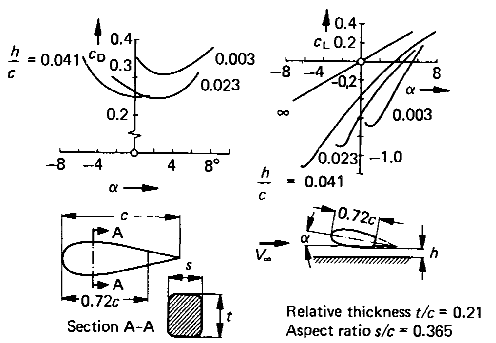
Hucho, Fig. 4.125. Un cuerpo con forma de perfil grueso cerca del suelo: y contra el ángulo de ataque, para distintas alturas relativas . Lejos del suelo () se comporta como un ala común. Al acercarlo, las curvas de se corren hacia abajo: a igual ángulo hay mucha más carga. Con la altura más chica (0,003) el drag es el mayor de todos.
Doble propósito del delantero de F1: generar carga y desviar el flujo para lo que viene atrás.
- Vórtice Y250. Se formaba en la punta de la cascada de flaps, a 250 mm del plano central, porque los flaps convergían a un punto. Ese vórtice sellaba el costado del fondo e impedía que la estela de la rueda entrara bajo el auto: era un faldón aerodinámico (§8.3). Costaba drag, pero "se pagaba con creces".
- En 2022 se obligó a unir los flaps al morro, por el aire sucio que dejaba. En 2024, Mercedes usó un hilo de fibra de carbono para cumplir y buscar un efecto parecido.
Beam wing. Un alerón chico que prolonga el difusor y aprovecha aire ordenado.
Apéndices flexibles. El "mini-DRS" de McLaren (Bakú 2024) se flexionaba con la carga y bajaba el drag. Pasaba las pruebas estáticas, pero violaba el espíritu del reglamento (no hay apéndices móviles fuera de los permitidos) y se prohibió. Los apéndices tienen que ser fijos desde el Chaparral 2J (§1).
En limpio
- La explicación completa de la sustentación es Navier-Stokes. La de "llegan juntas al borde de fuga" es falsa.
- Un perfil carga por ángulo y por curvatura, hasta que la cara de succión se separa (pérdida).
- El ángulo de máxima carga (~14–17°) no es el de máxima eficiencia (~4–5°).
- Se elige con máx > ~1,5 y eficiencia > ~100, al Re de trabajo. XFOIL y Airfoil Tools alcanzan para elegir y sirven para calibrar el CFD.
- Varios elementos: la rendija re-energiza la capa límite y permite una curvatura que un perfil solo no aguanta.
- Gurney: aleta de hasta ~5 % de cuerda en el último elemento. Estira la pérdida 3–4°.
- 3D: el vórtice de punta quita carga y agrega drag inducido, . Con RA baja, pesa mucho.
- Cerca del suelo la carga crece hasta el barranco.
Lo que sigue. El alerón delantero mostró que el suelo multiplica la carga, hasta un límite. La sección 10 aplica esa misma idea a la superficie más grande del auto: el piso.
10. Efecto suelo, altura y rake
La pregunta de esta sección: ¿por qué bajar el auto da más carga, por qué eso se corta de golpe a cierta altura y cómo se usa todo esto en el setup?
10.1 La altura es un parámetro "virtuoso"
Con el ala (§8.5) valía la "sábana corta": más carga se paga con más drag. La altura es la excepción.
- Más bajo da menos drag. El área frontal no cambia, pero la efectiva sí, porque pasar por debajo del auto es "tortuoso" para el aire. En el otro extremo, volando a varios metros el drag se estabiliza, como en un avión.
- Más bajo da también más carga.
En el gráfico de contra , los puntos se mueven por la diagonal deseada: más carga y menos drag a la vez. Es la opuesta a la "sábana corta" del ala y del rake.
- Barrido del Mustang: 50, 100, 150 y 200 mm.
Por eso los reglamentos limitan la altura mínima y no la máxima. Nadie va a ir más alto: lo que hay que acotar es "la virtud".
10.2 Mecanismo del efecto suelo y el "barranco"
La objeción natural. "Si le dejo menos lugar al aire, debería pasar menos aire y con menos fuerza." Es al revés, hasta cierto punto: con menos lugar, el aire va más rápido. Comparando 50 mm contra 100–200 mm, a 50 hay menos caudal pero más velocidad.
El modelo cualitativo, en tres pasos:
- Al bajar la altura , el caudal bajo el piso se mantiene casi constante hasta un punto de quiebre (rodilla).
- Con caudal constante y área decreciente, por continuidad (§2.3) la velocidad crece como . Y la succión crece todavía más, porque va con (Bernoulli, §2.3).
- Pasada la rodilla, el caudal se derrumba hasta cero: la velocidad cae, la presión sube y se pierde la carga. Ese derrumbe es el "barranco".
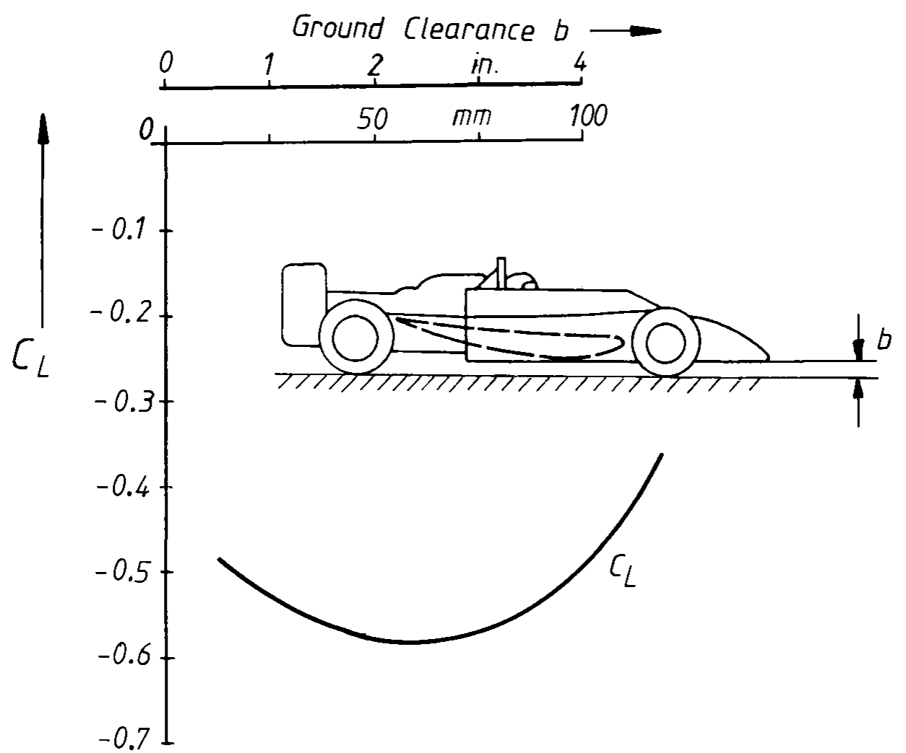
Hucho, Fig. 7.38. Carga de un monoplaza de efecto suelo contra la altura al piso . Al bajar de ~120 a ~60 mm la carga crece ( de −0,36 a −0,58). Por debajo de eso cae otra vez, y a ~10 mm vuelve a −0,48. Es la forma de la curva del barranco.
¿Por qué se mantiene el caudal? El punto donde se separan las líneas que van por arriba de las que van por abajo casi no se mueve. Por arriba el camino ya es "incómodo", así que el aire sigue entrando por abajo hasta que la pérdida es demasiado alta.
¿Por qué se quiebra? No tiene que ver con la velocidad del sonido: acá hay ~80 m/s. Lo determina el corte, es decir, cuánto cambia la velocidad entre el piso y el pavimento. Vale aproximadamente , y crece cada vez más rápido al bajar:
| Cambio de altura | El corte se multiplica por |
|---|---|
| 200 → 150 mm | 4/3 |
| 150 → 100 mm | 3/2 |
| 100 → 50 mm | 2 |
El corte es fricción (§2.4). Llega un punto en que genera tanta pérdida que termina ahogando el caudal.
Dónde está el máximo, en números:
- En la práctica, en ~10–30 mm. En un estudio con malla fina dio ~14 mm.
- Con un splitter, el gráfico de referencia mostró el pico a ~5 mm. En CFD: con 9 mm fluye aire, con 6 menos y con 3 nada.
- Curva de la cátedra (Súper TC2000, moviendo solo la altura del splitter): la carga crece al bajar hasta un máximo cerca de 9 mm. A 3 mm es casi la mitad.
- Las líneas de corriente vistas desde abajo muestran qué pasó: entra menos caudal y se achica la zona de máxima succión bajo el splitter, que es la que más palanca hace para la carga delantera.
Por qué se bloquea: la capa límite del piso choca con el pavimento (explicación de Juan, "pregunta típica de examen").
No es una separación como la del ala. Conviene pararse en el marco del auto: desde ahí, el suelo y el aire se mueven juntos, a la misma velocidad. El pavimento no frena al aire. La capa límite la genera el auto, en su piso, y crece hacia abajo a medida que el aire avanza.
Cuando su espesor llega al suelo, ya no queda aire "libre" entre el piso y el pavimento. El flujo se estrangula, baja la velocidad y sube la presión.
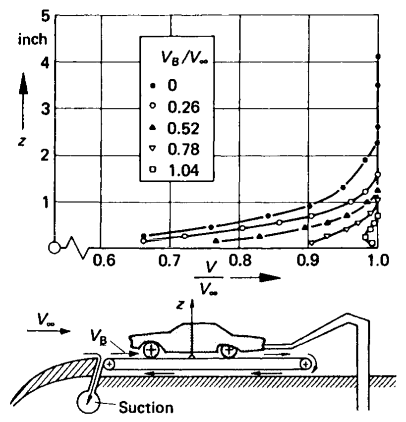
Hucho, Fig. 11.13. Perfil de velocidades junto al piso de un túnel con cinta móvil, para distintas velocidades de la cinta . Con la cinta quieta ( = 0), el piso del túnel tiene su propia capa límite; con la cinta a la velocidad del aire ( ≈ 1), desaparece. En la ruta pasa lo segundo: visto desde el auto, el pavimento viaja con el aire y no lo frena. La capa límite que bloquea es la del piso del auto.
Modelo simple (capa límite turbulenta que nace en el splitter):
y un perfil de velocidades dentro de la capa
Con 1° de piso a 55 m/s: a 10 mm pasa holgado, a 6 mm justo, y a 4 mm choca.
Lo que predice el modelo:
- Más velocidad → bloquea un poco más tarde. Es contraintuitivo, pero sale de la fórmula: con más Re, la capa límite crece más despacio. La diferencia es de 1–1,5 mm.
- Más ángulo en el piso delantero (de 1° a 2°) → deja de bloquear. El piso se aleja del pavimento más rápido de lo que crece la capa límite. Por eso se usa hasta ~2°.
- La rugosidad que importa es la del piso del auto, no la del pavimento. Un piso rugoso bloquea a una altura mayor.
- Límites del modelo: no incluye el gradiente adverso de presión (importante con rake) ni la forma del splitter, que puede ayudar.
Analogía eléctrica. El aire que llega al auto tiene dos caminos: por arriba y por abajo. Son dos resistencias en paralelo con la misma .
- es constante. depende de la altura: .
- El caudal se reparte como la corriente en un circuito (Kirchhoff).
- De y se espera que el siga la forma de la curva de caudal.
Porpoising. El barranco convierte al auto en un oscilador:
- la carga aplasta la suspensión y el auto baja;
- pasa el barranco y pierde carga;
- sin carga, la suspensión lo sube;
- recupera la carga, y el ciclo se repite.
En F1 2022 fue masivo.
- Soluciones: la rápida, subir el auto (y perder carga); el control con oscilómetros; la difícil, rediseñar el piso con simulaciones aeroelásticas.
- Modelo:
Es una masa con resorte y amortiguador, forzada por una carga aerodinámica que depende de la altura. Lo vital es que el mapa aerodinámico tenga bien descrito el barranco (barrido de alturas y de pitch).
10.3 Rake
Qué es. La inclinación del auto hacia adelante: más altura atrás que adelante. Se aumenta levantando la cola, rotando sobre el punto de altura mínima.
Qué hace. Más rake da más carga, más drag y balance hacia adelante.
- Es otra vez la diagonal de "sábana corta", como el ala.
- El rango de control de balance fue ~35–60 % (§7.3).
El límite. Con mucho rake el piso desprende: el flujo no logra copiar la pendiente del piso plano. No invalida la configuración, pero indica que se puede mejorar.
De dónde viene el aire. Con más altura trasera, las líneas de corriente bajo el piso se agrupan hacia el centro antes. Y al final del piso, el aire lateral entra de afuera hacia adentro, porque "hay lugar".
- Hay que pensarlo como una red hidráulica continua, con conservación de caudal.
- El auto, al avanzar, deja un "vacío" atrás que hay que llenar.
- Se puede verificar en pista con pintura (§13).
10.4 Implicancias de setup
Si la carga depende tanto de la altura, la suspensión pasa a ser una pieza aerodinámica.
- Rigidez y altura controlada. En circuitos rápidos hay mucha carga, así que hace falta un espiral duro para mantener la altura baja (y el drag bajo).
- Javier (TC 2000, Fiat, 2015–2016) logró < 20 mm en la recta con extensiones de amortiguador muy fuertes y topes, y ganó velocidad final.
- El riesgo. Cerca del máximo, la carga puede vencer el espiral y el piso golpea el pavimento, sobre todo con baches que hacen saltar el auto.
- Se mitiga con topes de goma (rigidez progresiva o doble) o dejando margen de altura.
- Regla general: curvas lentas, poca carga, espirales blandos. Curvas rápidas, mucha carga, espirales duros.
10.5 Por qué hace falta el 3D
Buena parte del curso usa casos 2D, porque corren rápido. Para el efecto suelo, el 2D tiene un defecto de fondo.
- En 2D el aire no puede rodear el auto por los costados: "o va por arriba o va por abajo". Por eso la sensibilidad a la altura y al rake se exagera.
- Un barrido de rake 2D perdía carga entre 2° y 2,5° y después la recuperaba, algo ilógico.
- Los vórtices 2D son más exagerados de lo que deberían. En el vano motor queda un vórtice "encajonado" que no existe en 3D.
- Por eso el air dam 2D dio más lift, lo contrario de la teoría (§8.3): "la simulación está mal planteada para este caso". La lección general: el CFD hay que contrastarlo con la realidad.
- La entrada de aire lateral, las polleras y los vórtices del pilar son fenómenos 3D. Un modelo 2D no los ve.
- Una silueta extruida ("2D y medio") se comporta mucho más parecido a la realidad que el 2D puro.
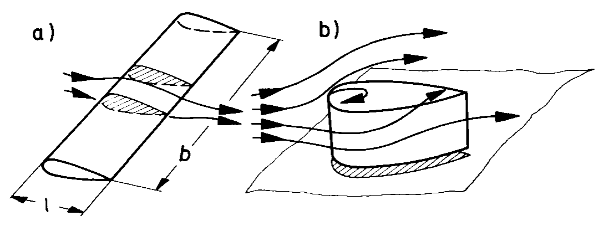
Hucho, Fig. 1.13. (a) Flujo 2D alrededor de un perfil: el aire solo puede pasar por arriba o por abajo. (b) Un tramo de perfil cerca del suelo, en 3D: el aire también lo rodea por los costados y forma vórtices en los bordes.
10.6 Fondo plano, doble piso y parámetros de setup
"Quitar el efecto suelo" no prohíbe cargar con el piso. Lo que hace el reglamento es limitarlo, con dos herramientas: altura mínima y fondo plano, sin formas aerodinámicas.
El patín. Es una tabla plana de madera, sin cavidades, entre los ejes. Es reglamentario en casi todas las categorías.
- Se ajustan el rake (1° a 2° en garage) y la altura mínima.
- Las piezas de titanio controlan la altura: si el desgaste supera la tolerancia, el auto pasó por debajo del mínimo.
TC: doble piso.
| Zona | Qué es | Parámetros |
|---|---|---|
| 1 | Piso del splitter, que además tapa el vano motor | Altura SH, ángulo |
| 2 | Patín | Altura WH, ángulo |
El reglamento usa la longitud de los pisos para equiparar marcas.
Los cinco parámetros de setup aerodinámico, sin tocar la carrocería:
- ángulo del alerón;
- altura del piso delantero;
- ángulo del piso delantero;
- altura del patín;
- ángulo del patín.
- Están acoplados. Mover el splitter con el ángulo del patín fijo cambia la altura del patín.
- Barrerlos da el mapa aerodinámico. Con el simulador de vuelta, ese mapa permite elegir el setup para cada circuito (§14).
El efecto suelo es lo que más carga da de todo lo visto, y casi sin drag: sube mucho la eficiencia natural del auto.
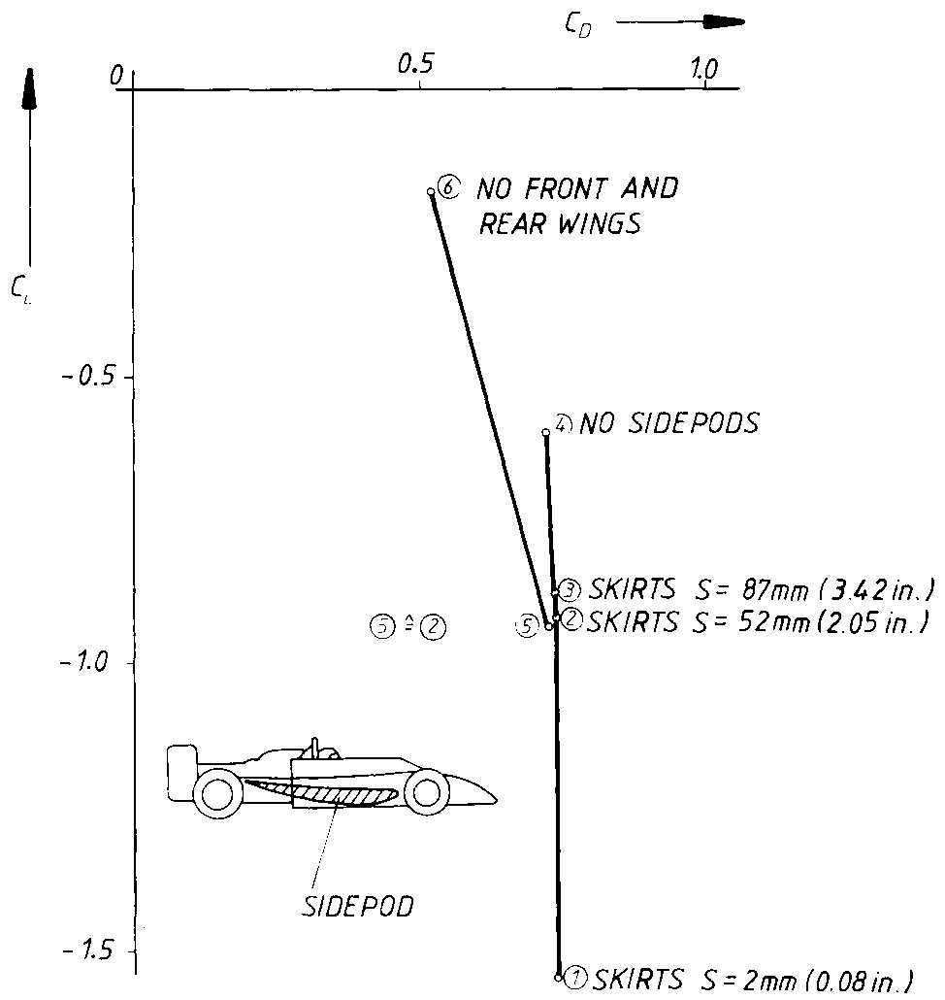
Hucho, Fig. 7.40. Polar – de un monoplaza de efecto suelo con distintas configuraciones. Cerrar la luz de los faldones de 87 a 2 mm lleva la carga de ≈ −0,9 a −1,55 sin que el drag se mueva ( ≈ 0,75). Sin pontones la carga cae a −0,6; sin alerones, a −0,2.
10.7 Difusor, túneles y faldones
El difusor. Es la zona trasera del fondo, con más ángulo: un Venturi divergente.
Para qué sirve. Bajo el piso el aire va rápido y con baja presión. A la salida tiene que volver a la presión ambiente. El difusor hace esa transición de a poco: desacelera el flujo de forma progresiva para que recupere la presión ambiente justo a la salida.
- Si la recuperación es brusca, la presión de afuera "se mete" bajo el auto y bloquea el piso.
- Funcionando bien, chupa el flujo de abajo del piso. Con una baja presión homogénea, además ayuda a que no entre aire por los costados.
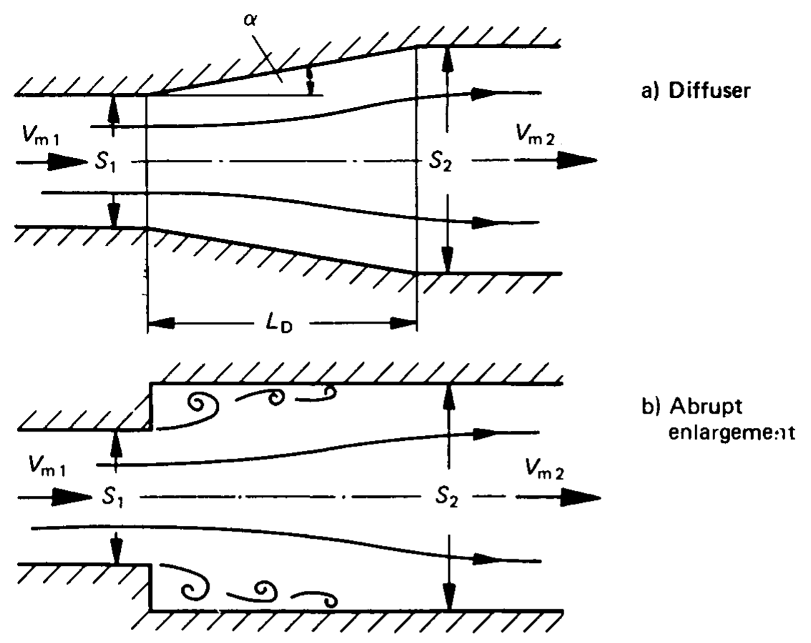
Hucho, Fig. 2.26. (a) Difusor: la sección crece de a poco, el aire se frena sin despegarse y recupera presión. (b) Ensanchamiento brusco: el flujo no puede seguir la pared, quedan recirculaciones en las esquinas y la presión se recupera mal.
Ejemplos 2D (flujo entre placas con impuesto):
| Difusor | Qué pasa | Succión a la entrada |
|---|---|---|
| 5° | El flujo va peinado | ~−800 Pa |
| 15° abrupto | Aparece un macrovórtice; la presión de salida sube aguas arriba | ~−700 Pa (empeora) |
| De 0° a 15° progresivo | Separa un poco al final | Picos de ~−1200 Pa (el mejor) |
El mismo ángulo final da el peor resultado o el mejor según cómo se llegue a él. Un difusor que no funciona tampoco chupa el aire del piso. Hay que diseñarlo con cambios de geometría progresivos, según las presiones de entrada y salida y el largo disponible.
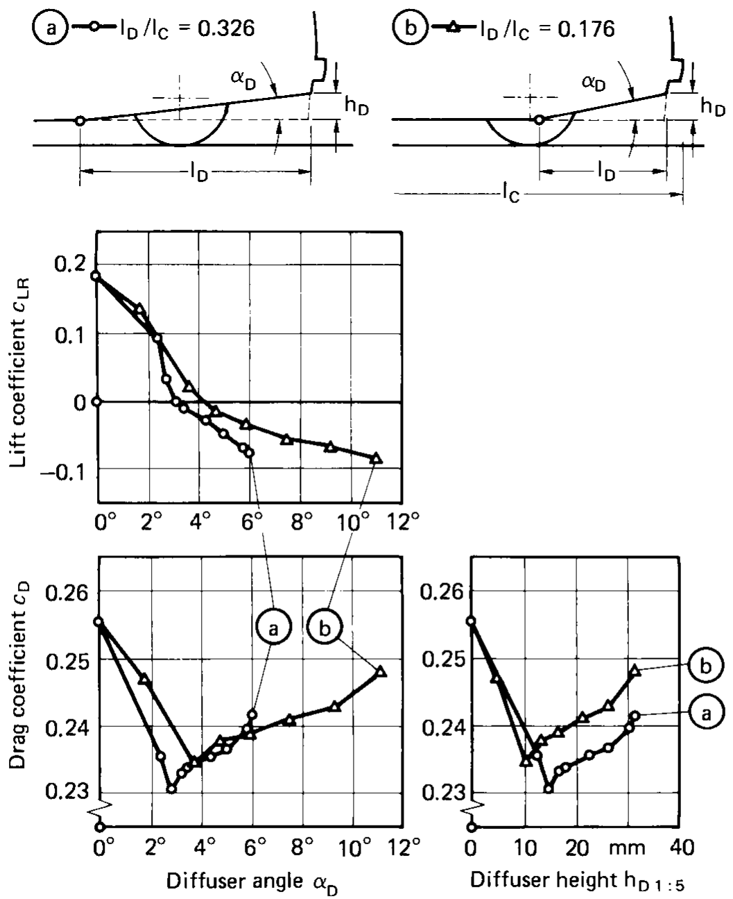
Hucho, Fig. 4.46. Difusor bajo la cola de un auto de calle (modelo 1:5), con dos largos distintos. Con unos pocos grados, el lift trasero pasa de +0,18 a carga, y el drag baja hasta un mínimo cerca de 3–4°. Con más ángulo, el drag vuelve a subir.
Túneles (autos de fórmula). Conductos convergente-divergentes, como difusores dispuestos en vertical.
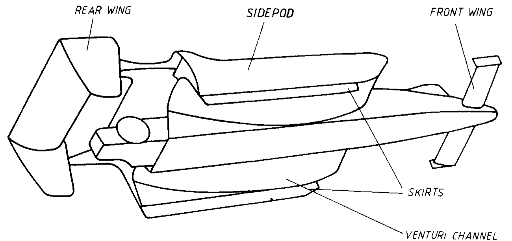
Hucho, Fig. 7.37. Fondo de un monoplaza de efecto suelo: debajo de cada pontón (sidepod) hay un canal Venturi, sellado a los costados por los faldones (skirts).
Faldones. Impiden que el aire de los costados entre bajo el piso (§8.3). Si están prohibidos, se reemplazan por vórtices selladores (Y250, §9.10).
En limpio
- Bajar el auto da más carga y menos drag: es el único parámetro que no sigue la "sábana corta". Por eso se reglamenta la altura mínima.
- Mecanismo: caudal casi constante y menos área → más velocidad () → mucha más succión ().
- Barranco: la capa límite del piso del auto llega al pavimento y estrangula el flujo. Máximo típico en ~10–30 mm.
- Porpoising: el auto oscila alrededor del barranco.
- Rake: más carga, más drag, balance adelante. Con mucho, el piso desprende.
- La suspensión controla la altura, así que es parte de la aerodinámica.
- El 2D exagera el efecto suelo: el aire no puede irse por los costados.
- Cinco parámetros de setup: ángulo de ala, altura y ángulo del piso delantero, altura y ángulo del patín.
- Difusor: recupera la presión de forma progresiva. Si es brusco, bloquea el piso.
Lo que sigue. Todo el aire que pasó por arriba, por abajo y por los costados se junta detrás del auto. La sección 11 mira esa estela y lo que le hace al auto que viene atrás.
11. Estela y aire sucio
La pregunta de esta sección: ¿qué deja el auto detrás, y por qué eso ayuda al que lo sigue en la recta y lo perjudica en la curva?
La estela es larga. Perturba el flujo durante muchas longitudes de auto. En el Mustang, 80 m atrás todavía no se recuperó. Es el viento que se siente en la banquina cuando pasa un auto.
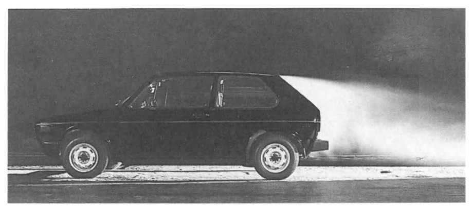
Hucho, Fig. 1.2. Estela de un VW Golf I, visualizada inyectando humo en la zona despegada detrás del auto.
La objeción natural. "Si ir atrás de otro auto es bueno (succión), ¿por qué todos se quejan del aire sucio?" Porque la estela hace dos cosas a la vez, y las dos salen de la misma causa: es aire de baja energía, con presión total más baja (§2.3).
| Efecto | Por qué | Dónde pesa |
|---|---|---|
| Menos drag | El aire que llega ya viene con menos presión dinámica | En la recta: ayuda |
| Menos carga | Los alerones y el piso trabajan con ese mismo aire pobre | En la curva: perjudica |
- Un auto a 100 m adelante ya reduce el drag del de atrás.
- Hucho da órdenes de magnitud con modelos de stock car en formación cerrada: la resistencia baja hasta un 30 % para el auto de adelante y un 37 % para el que lo sigue. También cambian las cargas por eje: con los autos desplazados lateralmente un 42 % del ancho, el de atrás pierde carga en el eje trasero y tiende a sobrevirar (Hucho, §7.3.2.3).
- En categorías de poca potencia y rectas largas (Turismo Pista Clase 1 en Toay), la estela define todo: "si pasás ganando la última vuelta, no ganás".
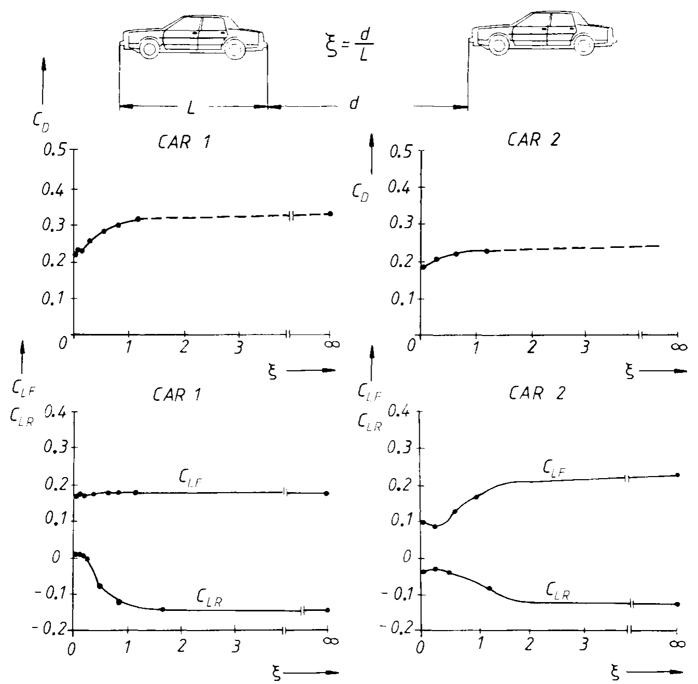
Hucho, Fig. 7.28. Dos stock cars en fila, separados una distancia medida en largos de auto. Arriba, el de los dos baja al acercarse (Car 1 va adelante). Abajo, el lift delantero y el trasero: por debajo de ~1 largo de auto, los dos pierden carga trasera ( sube hacia cero).
Cómo se estudia en CFD. Se puede estimar cuánta carga pierde el auto de atrás imponiendo a la entrada un perfil que imite la estela del de adelante. Esa condición de entrada tiene:
- intensidad turbulenta y viscosity ratio altos (§12.6);
- una velocidad relativa menor.
Cómo se mide el aire sucio (F1, en túnel). Con sensores detrás del auto que registran la fluctuación respecto del valor medio, es decir, la intensidad turbulenta. Los umbrales del reglamento no se publican demasiado.
Consecuencia en el reglamento. El aire sucio llevó a los curved tips y a eliminar el Y250 (§9.9, §9.10).
En limpio
- La estela es aire de baja presión total, y dura muchas longitudes de auto.
- Al de atrás le baja el drag (bueno en la recta) y le baja la carga (malo en la curva).
- En CFD se imita con una entrada más lenta y más turbulenta.
Lo que sigue. Casi todos los números de las secciones anteriores salieron de simulaciones. La sección 12 abre la caja: qué resuelve el CFD, qué aproxima y cuándo creerle.
12. Teoría de la simulación computacional (CFD)
La pregunta de esta sección: ¿qué hace el programa cuando "simula" un auto, en qué pasos aproxima y cómo se sabe si el resultado es confiable? El uso del software está en el apunte práctico; acá va lo que hay adentro.
12.1 Qué es y qué resuelve
Simular es hacer experimentos virtuales. Las leyes físicas son ecuaciones en derivadas parciales. Escribirlas es fácil; resolverlas en una geometría arbitraria no. Por eso se usan métodos numéricos:
| Método | Uso típico |
|---|---|
| Diferencias finitas | Geometrías simples |
| Elementos finitos | Estructuras |
| Volúmenes finitos | El estándar del CFD |
| SPH, Monte Carlo | Otros casos |
Experimento real contra experimento virtual. Ninguno es "la verdad": se equivocan en lugares distintos.
| Experimento | CFD | |
|---|---|---|
| La física | Es la real | Está modelada: puede estar mal |
| Condiciones, geometría, medición | Tienen error | Son exactas, y se conocen todas las variables en todos lados |
| Costo | — | Caro en personal capacitado y en cómputo |
Qué resuelve. Balances de masa, momento y energía. De ahí salen la velocidad, la presión y la temperatura (más la ecuación de estado si el flujo es compresible). Puede agregar especies o fases.
- En un auto se simula aire como un único fluido.
- Siempre hay 4 variables independientes: , , , .
12.2 Ecuación de transporte
Una sola ecuación para todo. Masa, cantidad de movimiento, energía y turbulencia parecen cosas distintas, pero todas cumplen el mismo balance sobre un volumen de borde :
Leída en palabras: lo que cambia la cantidad dentro del volumen, más lo que sale por el borde, es igual a lo que se genera adentro.
- es una cantidad intensiva (por unidad de volumen). Integrada da la extensiva: la integral de es la masa.
- Densidad, cantidad de movimiento, energía, especies, , : todas siguen la misma ley.
Las dos formas de cruzar el borde:
| Flujo | Expresión | Qué hace |
|---|---|---|
| Convectivo | El flujo arrastra a | |
| Difusivo | Uniformiza: lleva de donde hay más a donde hay menos |
Número de Péclet. Dice cuál de los dos manda:
- : domina la convección. : domina la difusión.
- Determina qué esquema numérico conviene (§12.3).
- Para la cantidad de movimiento, el Péclet es el Reynolds (§2.5): la difusividad es .
Navier-Stokes es esta misma ecuación, usada dos veces:
- con : son 3 ecuaciones, una por componente, y la difusividad es ;
- con : la de masa, que en incompresible queda .
En aerodinámica (Re ~10⁵–10⁶ o más) domina la convección, salvo muy cerca de las paredes.
12.3 Discretización por volúmenes finitos
La computadora no sabe de integrales ni de derivadas: solo opera con números. Discretizar es convertir la ecuación de §12.2 en un sistema de ecuaciones algebraicas. Se hace en seis pasos, y conviene ver en cuál entra cada aproximación.
1. La malla. Se divide el dominio en celdas poliédricas que no se solapan y cuya suma es el dominio. La malla es conforme: cada cara tiene un único vecino. La ecuación de transporte vale en cada celda. Hasta acá todo es exacto.
2. Las integrales. La incógnita se guarda en un solo punto por celda, el centroide. Acá empiezan las aproximaciones:
- la integral de volumen se aproxima como (valor en el centroide por volumen de la celda);
- la integral de borde, como la suma sobre las caras de (valor en la cara × área ).
Los grados de libertad están en los centroides; los vértices solo delimitan las celdas. En 3D, con , , y , 1 millón de celdas son 4 millones de incógnitas (6 millones con y ).
El paso 2 deja un problema: hacen falta valores en las caras, y solo hay valores en los centroides. Los pasos 3 y 4 lo resuelven.
3. El gradiente en la cara (para la difusión). Se aproxima con la diferencia entre los dos centroides vecinos, y , separados por el vector :
Es de 2.º orden si está alineado con la normal a la cara (Gauss linear).
4. El valor en la cara (para la convección). Es la decisión más delicada:
| Esquema | Orden | Comportamiento |
|---|---|---|
linear (promedio de los dos vecinos) |
2.º | Inestable con convección dominante: inventa máximos no físicos y la corrida explota |
upwind (el valor de donde viene el flujo) |
1.º | Muy estable, pero su error actúa como viscosidad numérica |
linearUpwind / limitedLinear 1 |
~2.º | Estables: los recomendados |
5. El tiempo. La derivada temporal se aproxima con y un factor que dice cuánto pesa el paso nuevo:
| Esquema | Orden | Comportamiento |
|---|---|---|
| Euler implícito () | 1.º | Estable y acotado |
| Crank-Nicolson () | 2.º | No acotado: puede inventar máximos. SimFlow propone |
backward (usa dos pasos anteriores) |
2.º | Muy estable |
Criterios de los profes: Juan recomienda Euler implícito salvo que haga falta precisión; Horacio usa backward.
6. El sistema lineal. Todo lo anterior termina en : una fila por celda, con el coeficiente propio en la diagonal.
- La matriz es rala. Un hexaedro tiene 6 vecinos, así que su fila tiene 7 valores no nulos entre un millón. No se guardan los ceros.
- Cómo se resuelve. Invertir con Gauss cuesta ~ operaciones. Los solvers iterativos (PCG/PBiCG, GAMG multigrilla) cuestan ~, pero son aproximados: dejan un residuo .
- Tolerancias. La absoluta es el valor que tiene que alcanzar el residuo. La relativa, cuántos órdenes tiene que bajar. Alcanza con cumplir una.
- Numerar las celdas para que los no nulos queden cerca de la diagonal (ancho de banda chico) acelera la resolución.
Esto es el corazón de toda simulación computacional: convertir la ecuación diferencial en un sistema algebraico. "La computadora es una máquina de sumar rápido."
12.4 Orden de exactitud, calidad de malla y error numérico
Qué significa "orden". Es la velocidad a la que baja el error al refinar la malla.
- 2.º orden: con la mitad del tamaño de celda, el error baja a ¼.
- 1.er orden: baja a la mitad.
- El 2.º orden, además, tiene mucho menos error en la misma malla. Sin correcciones, lo que se logra con 80 millones de celdas podría exigir ~500 millones.
Cómo se pierde el 2.º orden: la calidad de malla.
- No ortogonalidad: el ángulo entre la recta que une los centroides y la normal a la cara. Es justo la condición del paso 3 de §12.3. Se compensa con correctores no ortogonales, que usan los segundos vecinos de forma explícita para no romper la matriz rala.
- Skewness: la distancia entre el punto donde esa recta corta la cara y el centroide de la cara.
El error numérico se parece a una viscosidad. Es la idea central de esta parte. El error de discretización (malla gruesa, upwind) es sistemático y se comporta como una viscosidad numérica: "como si el auto pasara por un aire más viscoso".
- Siempre va hacia el mismo lado: más drag y menos carga. Con más fricción entre líneas de corriente pasa menos aire por debajo del auto, donde el corte es enorme (§10.2).
La objeción natural. "Si el error absoluto es de ~50 kg, ¿cómo voy a estudiar un cambio de 10 kg?" Justamente porque el error es sistemático: se equivoca igual en las dos corridas, y en la resta se cancela. Se pueden estudiar diferencias de 5–20 kg aunque el error absoluto sea de ~50 kg, siempre que las dos geometrías estén malladas igual. Comparar mallas distintas es "cambiar el fluido virtual".
Otras reglas sobre el error:
- En Navier-Stokes incompresible, refinar siempre reduce el error numérico (salvo efectos de las funciones de pared). Hay que quedarse con la malla más fina posible.
- Los coeficientes globales son "benignos": con una malla horrible, el ya puede dar ~8 % de error. Esa "licencia" es la que permite usar RANS en autos. Se aspira a un error de 5–10 %.
Flujo entre placas (piso–suelo, difusor). La malla gruesa subestima la velocidad: da más presión y menos carga. Estudio 2D con 12,6 mm de huelgo:
| Celdas en el huelgo | Velocidad |
|---|---|
| 4 | 153 m/s |
| 16 | 195 m/s (~8 % de error) |
| 256 | 212 m/s |
Regla: 8–16 celdas entre placas. En 3D el error es menor (2–3 %), porque el flujo escapa por los costados.
AMR (adaptive mesh refinement). Son solvers que refinan durante la corrida, donde hay gradientes. Cuestan tiempo y pierden información al mapear entre mallas. Sirven en motores (combustión, inyección). En motorsport no se usan: las campañas son de cientos de corridas y la malla se ajusta a mano.
12.5 Acople presión-velocidad y número de Courant
El problema. El sistema de §12.3 es lineal, pero Navier-Stokes no: en el término convectivo, la velocidad se transporta a sí misma (). El truco para volverlo lineal es separar dos papeles:
- la velocidad que transporta (la que hace el producto escalar con la normal a la cara) se toma de la iteración o del paso anterior: es un dato;
- la velocidad transportada es la incógnita.
Además, velocidad y presión están acopladas. Los algoritmos difieren en cómo cierran ese acople:
| Algoritmo | Tipo | Cómo trabaja |
|---|---|---|
| SIMPLE (años 70) | Estacionario | Resuelve con la anterior y después con la nueva, siempre "con un pie en el pasado". Necesita relajación: mezclar lo nuevo con lo viejo |
| PISO | Transitorio | Resuelve el acople una vez por paso |
| PIMPLE | Transitorio | Lo repite varias veces dentro del paso (outer correctors). Permite pasos de tiempo más grandes |
- Las iteraciones de un estacionario no son tiempo (son pseudotiempo): solo importa la última.
- La presión es la ecuación más difícil. Viene de la masa, que en incompresible no tiene término de transporte.
Número de Courant. Mide qué fracción de celda recorre el flujo en un paso de tiempo:
- La linealización es confiable si : el flujo no "se saltea" celdas. Con PIMPLE se puede subir: cada iteración de acople permite ~5 veces más.
- Sirve para elegir , no para decidir dónde refinar. Eso lo determinan el fenómeno y el (§12.7).
- Empeora al refinar, y en zonas rápidas con celdas chicas (bajo el splitter).
- Solo aplica a transitorios.
Número de Fourier. Es el equivalente del Courant para la difusión. Es crítico en esquemas explícitos; en implícitos conviene que no sea muy alto (< 10–50).
Qué monitorear. El residuo inicial de cada sistema: mide si la solución actual satisface la física acoplada (§12.9).
12.6 Modelado de la turbulencia
La objeción natural. "Si Navier-Stokes describe todo, ¿por qué hay que agregar un 'modelo' de turbulencia?" Porque las ecuaciones están bien, pero la malla no alcanza. Los vórtices turbulentos más chicos son muchísimo más chicos que cualquier celda que se pueda pagar. Hay tres actitudes posibles:
| Enfoque | Qué resuelve | Viabilidad |
|---|---|---|
| DNS | Todo, sin modelo | Imposible para un auto (Re ~10⁷): "estamos a siglos" |
| LES | Los vórtices grandes (donde está la energía); modela los chicos | Supercomputadoras |
| RANS | Solo el campo medio; modela todo el efecto de la turbulencia | Lo abordable: es lo que usa el curso |
La idea de RANS. Se separa la velocidad en su media y su fluctuación:
Al promediar Navier-Stokes queda la misma ecuación para la media, más un término nuevo: el tensor de Reynolds . Es el efecto de las fluctuaciones sobre el flujo medio, y es desconocido. Hay más incógnitas que ecuaciones: es el problema de cierre.
- Equivale a lo que se hace en pista: el sensor tiene ruido, el auto vibra, y se promedia.
- URANS es la versión transitoria.
Hipótesis de Boussinesq. Es la forma más usada de cerrar el problema. El tensor se modela como una viscosidad turbulenta por el gradiente de la velocidad media. Es decir, la turbulencia se modela como difusión extra. Tiene sentido físico: la turbulencia mezcla.
Modelos, según cuántas ecuaciones agregan para calcular :
| Ecuaciones | Modelo | Dónde anda bien |
|---|---|---|
| 0 | Longitud de mezcla | — |
| 1 | Spalart-Allmaras | Perfiles de aviación |
| 2 | k-ε | Cañerías |
| 2 | k-ω SST | El que mejor resultado dio en autos de competición |
No hay un modelo mejor en general.
k-ω SST. Agrega dos ecuaciones de transporte (de la forma de §12.2):
- : la energía turbulenta;
- : la disipación específica, "las RPM de los vórtices".
Con ellas, .
- cae a ~0 en el estancamiento y aparece donde hay corte con la pared.
- Si cambia mucho de una iteración a otra, y dejan de satisfacer el momento: el acople tiene que ser estable.
Los límites de RANS.
- Error de modelado. Las constantes se calibran en casos canónicos (placas, bumps), no en un Mustang de TC. "Ya no estamos simulando, estamos modelando: ya hay cocina."
- "Pecado original": no simula la transición. Asume que el aire llega turbulento al borde de ataque.
- Lo que pasa en la primera transición no va a ser preciso. Es el caso de los bordes de ataque de los alerones delanteros, que reciben aire "virgen" (§9.5). Cuesta predecir el ángulo de pérdida.
- Existen modelos de transición, pero no se ven en el curso.
- Juan investiga modelos que se acercan a DNS con menos malla (a confirmar: en clase se nombró "PDNS"; habría que verlo en la diapositiva).
Una ventaja. Con RANS, la simetría lateral es válida: el flujo medio es simétrico, aunque una foto instantánea no lo sea.
Qué hace realmente el modelo (Horacio)
Laminar y turbulento se rigen por las mismas ecuaciones. El término no lineal se resuelve bien (en SIMPLE se linealiza). El problema es la malla: un vórtice chico es un gradiente alto y necesita al menos ~4 celdas.
- En laminar, con 2.º orden, el error baja con el cuadrado del tamaño de celda.
- En turbulento, si la malla es más gruesa que la cascada de vórtices, el error salta varios órdenes. Los vórtices quieren dividirse, no tienen celdas donde hacerlo, y la física se bifurca en un espacio no físico. Suele explotar.
- El solver "laminar" en realidad es un solver DNS. Sin modelo, lo que falta no es el solver, sino la malla. La escala de Kolmogorov, a Re alto, es del orden de nanómetros.
El modelo es una caja negra. Recibe la velocidad y la malla (el gradiente) y devuelve fuerzas volumétricas. En RANS, eso se reduce a , que se suma a la viscosidad molecular:
- En
simpleFoam, el modelo solo aparece en el término difusivo deUEqn: . "Absolutamente nada más." - Dicho de otro modo: se resuelve el problema turbulento como si fuera otro fluido, más viscoso (con un Re efectivo más bajo). La velocidad que resulta es la media del fluido real.
- Por eso distintos setups del modelo pueden dar el mismo resultado: lo único que llega al flujo es .
Qué son , y :
| Variable | Qué representa | Unidades |
|---|---|---|
| Energía cinética turbulenta | m²/s² | |
| Ritmo al que se disipa en calor (una potencia por unidad de masa) | m²/s³ | |
| Disipación por unidad de energía (una frecuencia); útil cerca de la pared | 1/s |
- Escalas que salen de ahí:
- : el tamaño de los remolinos con más energía;
- : cuánto tarda uno en dar una vuelta.
- La cascada como tanques en serie: el caudal de energía entre escalas es el mismo, pero en la foto las escalas chicas guardan menos.
- Cierres:
- k-ε: , con ;
- k-ω SST: , con limitadores cerca de la pared.
- Los coeficientes se calibran con experimentos. Juan tiene un paper en el que los recalibró con algoritmos genéticos para el flujo sobre una casa ensayada en túnel.
La turbulencia es un problema "reactivo". Su valor en un punto depende más de cuánto se genera y se destruye ahí mismo que de lo que llega transportado.
- nace donde hay gradiente de velocidad: en los jets de corte (borde del capot, salida del piso contra el baúl).
- es alto en esos jets y máximo en la pared (función de pared): "la pared es una máquina de disipar energía".
- Cerca del auto, la turbulencia la dicta la geometría, casi sin importar con cuánta llega. Con mucha turbulencia de entrada, la estela puede quedar menos turbulenta que el aire de afuera.
Turbulencia de entrada. Hay que decirle al solver cuánta turbulencia trae el aire. Se fija con dos datos:
- la intensidad , de donde sale ;
- una longitud turbulenta o un viscosity ratio . Esta última es la receta que recomienda Horacio, porque es lo que actúa. Valores y recetas en P §4.4.
Qué pasa al cambiarla:
- Más → al flujo le cuesta acelerarse: más drag y menos carga (se frena el flujo bajo las alas y el piso). Se nota sobre todo en el ala.
- Las que resultan son chicas, del orden de mm: la turbulencia "ve" los radios y las aristas, no el largo del auto. Usar 7 % del largo (~350 mm) da "una turbulencia infernal".
- En el rango recomendado pesa poco (en el Mustang, < 4 N). Pero es traicionera en estudios dominados por el desprendimiento (ángulo máximo del piso o de la trasera).
- Tampoco conviene apagarla. Sin de entrada, el solver ve un caño de ~20 m a 55 m/s (Re ≈ 60 millones) casi laminar, el modelo reacciona tarde y la corrida se vuelve transitoria. Hace falta una "precarga de viscosidad" (~1 %, VR 10).
12.7 Capa límite en CFD: funciones de pared e
El problema. Lo que importa de la capa límite es el gradiente en la pared, porque da , que define la fricción, la transición y la separación (§4). Pero el perfil de velocidades cerca de la pared es muy no lineal, y los volúmenes finitos solo representan gradientes constantes por celda. Hay dos salidas.
Salida 1: resolver la capa límite (wall-resolved). Poner celdas tan finas que el perfil quede bien dibujado. Es carísimo, "DNS de la capa límite": para un alerón de 10–30 cm haría falta una primera celda de ~10 µm.
Salida 2: funciones de pared. Una sola celda alta (~1 mm, unas 100 veces más alta) con una fórmula adentro que reproduce el efecto de la malla fina. El efecto se modela, no se simula. Igual hacen falta capas prismáticas, aunque menos finas.
El . Para saber cuál de las dos salidas se está usando hace falta medir la altura de la primera celda en una unidad que tenga sentido para la capa límite. Eso es el : la altura adimensionalizada.
Es lineal con la altura de la celda: significa una celda 100 veces más alta que con .
| Enfoque | objetivo |
|---|---|
| Resolver la capa límite | ≈ 1 en toda la superficie |
| Funciones de pared estándar (las del curso) | 30–300 (ideal 30–100). Un promedio > 500 es exagerado; no debería haber mucho por debajo de 30 |
Una paradoja. Al refinar la malla, el puede subir. La malla más fina resuelve un gradiente más intenso, sube y con él el (está en la fórmula, dentro de ). Hay que iterar hasta que se estabilicen el y el .
"Simular" no es lo mismo que "modelar":
- simular es poner malla suficiente para reproducir el fenómeno;
- modelar es usar una malla más gruesa y agregar un modelo para lo que no se captura.
Conclusión. RANS y las funciones de pared existen para poder usar mallas "gruesas". Son ingenierilmente satisfactorias, pero hay que conocer sus límites. Por ejemplo, sin resolver la capa límite no se predice bien el desprendimiento: ¿pérdida a 17,3° o a 19,5°?
12.8 Flujo potencial
Es el modelo más simple posible: un flujo sin viscosidad e irrotacional ().
- Se reduce a una ecuación escalar, muy rápida de resolver.
- Las líneas de corriente copian la geometría, sin separación ni vórtices.
- Satisface la continuidad, pero no la ecuación de momento.
No sirve para autos: la viscosidad influye aunque el Re sea enorme (§4). Pero es un excelente arranque para la simulación real (potentialFoam).
12.9 Convergencia y validación: conceptos
Converger es que la simulación deja de cambiar. Hay que definir cuánto cambio se tolera y durante cuánto tiempo.
Residuos contra monitores. Hay dos cosas para mirar, y no dicen lo mismo:
- los monitores (, ) son una medida indirecta;
- los residuos son los que dicen si la solución satisface la física.
Un monitor puede quedarse quieto con residuos altos y planos. En ese caso la solución está atascada en un patrón no físico.
Tipos de convergencia:
- absoluta: los monitores llegan a una meseta;
- periódica: oscilan con ciclos repetidos.
Si nunca se estabilizan, el setup es inestable y la simulación no sirve.
- Si hay vórtices del tamaño de la geometría (desprendimiento), el flujo es transitorio de verdad, y un solver estacionario va a oscilar.
- Las iteraciones no dicen la frecuencia: para eso hace falta un transitorio (y, para acústica, mucha más malla o LES).
La objeción natural. "Convergió, entonces está bien." No. "Converger no significa estar bien": solo dice que se resolvieron las ecuaciones para esa malla, ese esquema y ese paso de tiempo. Con otra malla podría converger a otro número. Por eso hace falta el estudio de malla.
Estudio de independencia de malla (pregunta típica de examen y de revisores). Se corre el mismo caso con mallas cada vez más finas y se mira cómo cambia el resultado:
| Patrón al refinar | Interpretación |
|---|---|
| Monótono con asíntota | Confiable; se puede extrapolar |
| Oscila con amplitud decreciente | El resultado está dentro de una banda |
| Diente de sierra con amplitud creciente | No confiable: revisar condiciones de borde, calidad de malla o convergencia de cada corrida |
Tres reglas de trabajo:
- No se puede elegir el resultado con la malla (ni con el número de iteraciones). Elegir "la malla que da justo el experimento" es hacer trampa. El resultado tiene que ser insensible a esos parámetros.
- Calibrar contra una referencia (XFOIL, experimentos) antes de pasar a casos complejos (§9.6). Y cambiar de a una cosa por vez, para saber qué produjo cada cambio.
- "No hay parámetro en el CFD que influya más que la malla: primero la geometría, después la malla", antes que el modelo de turbulencia o los esquemas.
12.10 Del 2D al 3D
Cada nivel de simulación sirve para una pregunta distinta:
| Nivel | Para qué sirve | Límite |
|---|---|---|
| 2D | Barato: descartar opciones y ver tendencias, sobre todo la separación entre elementos de alas multicuerpo | Exagera los efectos (§10.5) |
| Silueta extruida | Mucho más fiel. El flujo detrás del auto es bastante 2D, así que sirve para estudiar el ala y la cola de pato | — |
| 3D completo | El ajuste fino de un auto real | ~50–100 millones de celdas |
Una regla para el 2D: si no funciona en 2D, el 3D no lo va a arreglar.
Niveles de análisis (la "cebolla"). Los resultados se miran de afuera hacia adentro:
- global: los 6 números, el balance y la eficiencia, y sus diferencias entre configuraciones;
- por partes del auto: dónde está la diferencia;
- campos 3D en esa zona: por qué.
Un buen aerodinamicista necesita cada vez menos simulaciones. Entiende el flujo y acota el espacio de diseño, en vez de hacer fuerza bruta. El postproceso es la etapa más importante y la que menos tiempo recibe.
En limpio
- El CFD resuelve balances de masa, momento y energía con volúmenes finitos: una incógnita por celda, en el centroide.
- Todo sigue la ecuación de transporte: convección + difusión = fuente. En aerodinámica domina la convección.
- Esquemas recomendados:
linearUpwindolimitedLinear 1.linearexplota;upwindagrega viscosidad numérica.- El error numérico actúa como viscosidad: más drag, menos carga. Es sistemático, así que las diferencias entre geometrías malladas igual son confiables.
- Courant : sirve para elegir .
- RANS resuelve el campo medio. La turbulencia entra solo como : "otro fluido, más viscoso". En autos, k-ω SST. No simula la transición.
- Funciones de pared: entre 30 y 300.
- Converger no es estar bien. Mandan los residuos, y hace falta el estudio de independencia de malla.
- Primero la geometría, después la malla, después todo lo demás.
Lo que sigue. El CFD "hay que contrastarlo con la realidad". La sección 13 repasa cómo se mide en pista.
13. Mediciones y pruebas en pista
La pregunta de esta sección: ¿cómo se comprueba en pista lo que dijo la simulación, y qué puede arruinar una prueba?
Visualización de flujo. Se usa pintura de aceite (flow-vis): una resina que sigue las líneas de corriente sobre la superficie y, al secarse, deja el dibujo.
- Muestra dónde desprende el flujo.
- También sirve para verificar el patrón de flujo bajo el piso (§10.3).
Tubo Pitot. Da la velocidad respecto del aire (§2.3), que es la que importa para las fuerzas. La velocidad respecto del piso no alcanza, por lo que sigue.
El viento es el enemigo de la prueba.
La objeción natural. "Hago una pasada de ida y otra de vuelta, promedio, y el viento se cancela." No se cancela:
- El promedio de ida y vuelta no lo compensa, ni en velocidad final ni, menos todavía, en carga. Ejemplo: 280 km/h a favor y 260 en contra dan 270 de promedio, cuando sin viento quizás serían 273.- El viento tiene ráfagas, así que el aire de la ida no es el de la vuelta.
Qué se hace entonces:
- Procesar punto a punto la señal del Pitot (despejar la potencia en función del viento) en pruebas de coast down o de aceleración.
- Comparar solo pasadas con el mismo viento: a favor con a favor. Por debajo de ~5 km/h es despreciable. Un viento fuerte puede equivaler a ~15° de ala en el speed trap (~5° si se promedia).
- Probar cerca en el tiempo. Un cambio grande (un piso, una chimenea) lleva 30–40 minutos de mecánico, y para entonces cambió el viento.
- Elegir el momento. El viento suele calmar hacia las 16–17 h. Conviene elegir el día por el pronóstico y usar una estación meteorológica.
Simulación con guiñada. Se simula a 0° y a ~6° (comentario de Javier), para estimar el comportamiento en curva (§7.4).
En limpio
- Flow-vis para ver dónde desprende; Pitot para la velocidad respecto del aire.
- El viento no se cancela promediando ida y vuelta.
- Se comparan pasadas con el mismo viento y cercanas en el tiempo.
Lo que sigue. Entre simulaciones y pruebas se junta una base de datos de configuraciones. La sección 14 responde la última pregunta: cuál se lleva a la carrera.
14. Selección de la mejor configuración
La pregunta de esta sección: con decenas de configuraciones, cada una con su drag, su carga y su balance, ¿cómo se decide cuál es la mejor para un circuito?
14.1 El problema
De cada corrida o prueba importan tres números: , y balance. Por separado es fácil saber qué es mejor. Juntos aparecen los compromisos (trade-offs).
Cómo pesa cada uno en el tiempo de vuelta (con lo demás fijo):
| Número | Relación con el tiempo de vuelta |
|---|---|
| Positiva: más drag, más tiempo | |
| Negativa, si es carga | |
| Balance | Parabólica, con un óptimo (§7.5) |
Sobre el signo: "la ambigüedad de si es lift o downforce va a persistir en toda nuestra vida". Lo prolijo es , pero muchos libros de motorsport lo ponen positivo.
"Todo lo que funciona ya lo tiene el auto." Los cambios que dan más carga con menos drag ya los hizo alguien. Además, son contranaturales: la carga sale de baja presión sobre superficies inclinadas hacia atrás, y eso da drag (§5). En el 95–99 % de los casos se trabaja con compromisos.
Reglas (a balance constante):
- si baja y sube la carga, se aplica;
- si mejora uno y el otro queda igual, se aplica;
- si mejora uno y empeora el otro, depende de los otros setups y del circuito. El resto de la sección es el método para ese caso.
Todo se evalúa en una altura representativa (la de garage, §7.5). Si no, aparece un tercer eje.
14.2 Primer filtro: el balance
Un auto desbalanceado siempre es lento (§7.3), así que el balance se mira primero.
Cómo se filtra. En el mapa 3D ––balance se ponen dos planos de iso-balance (en el ejemplo, 58 y 62 % para un objetivo de 60 %). Los puntos que quedan afuera se pintan de gris.
Pero un punto gris no se tira. En la práctica no se descarta ningún cambio por balance: el punto gris se contrabalancea con ala, piso delantero o rake, y se vuelve verde. Solo queda afuera si se agotó el rango de compensación.
- Ejemplo del Mustang: para un balance de 40 %, combinar el ala a +10° (S23) con el rake de S27 en una nueva corrida.
Antes de simular. Conviene plantear una hipótesis ("este espejo da más carga") y estimar con los trims dónde caería el punto ya balanceado. Si aun así queda dominado (§14.3), no hace falta correrlo.
14.3 Dominados, dominantes y frontera de Pareto
Con el balance ya igualado, quedan dos números: carga y drag. Se dibujan todos los puntos en el mapa –, con la carga hacia arriba y el drag hacia la derecha.
Comparar contra un punto de referencia. Se trazan su vertical y su horizontal. Quedan cuatro cuadrantes:
| Cuadrante | Qué tienen esos puntos | Nombre | Qué se hace |
|---|---|---|---|
| Abajo a la derecha | Más drag y menos carga | Dominados | Se eliminan |
| Arriba a la izquierda | Menos drag y más carga | Dominantes | Si existen, el de referencia queda descartado para cualquier circuito, y con él sus dominados |
| Los otros dos | Mejoran una cosa y empeoran la otra | De compromiso | Dependen del circuito |
Frontera de Pareto. Un punto de Pareto es el que no tiene dominantes: nadie lo supera en las dos cosas a la vez. El conjunto de puntos no dominados es la frontera de Pareto.
- Un punto de Pareto está entre los de compromiso de otro punto de Pareto. Pero no todo punto de compromiso es de Pareto.
- Es un análisis grupal. Entre dos puntos de compromiso no se decide; un tercero puede hacer que uno pase y el otro no. Analogía de Horacio: un delantero (alta carga) y un defensor (bajo drag) no se comparan hasta saber contra quién se juega.
- Los segmentos de la frontera tienen pendiente estrictamente entre 0° y 90°. Uno horizontal o vertical implicaría un punto dominado: dos puntos con el mismo drag y distinta carga, o al revés.
Zona desarrollada contra zona objetivo.
- Abajo y a la derecha de la frontera no hay nada nuevo.
- Todo punto arriba y a la izquierda reconfigura la frontera y expulsa a los que domina.
- El área bajo la frontera mide cuánto se desarrolló el paquete aerodinámico en el año.
Dos consejos prácticos:
- No todos los puntos tienen que ser corridas: pueden ser extrapolaciones con trims.
- Mantener toda la base de datos a la vista. Es fácil olvidarse de un setup viejo que domina a los nuevos.
Dos caminos para lo mismo. En TC, para tener más carga a igual balance hay dos estrategias: piso delantero + ala, o altura trasera + ala. Cada una traza una curva en el mapa –. La que queda más arriba a igual es la mejor.
14.4 El circuito: isocurvas de tiempo de vuelta
La frontera de Pareto deja varios candidatos, todos "de compromiso" entre sí. Para elegir uno hace falta la información que faltaba: el circuito.
Cómo se caracteriza un circuito. Con la función . Se arma "por fuerza bruta" con el simulador de tiempo de vuelta (dos bucles, sobre y ) y se dibujan las curvas de nivel sobre el mismo mapa: cada isocurva une combinaciones que dan el mismo tiempo. Siempre mejora hacia arriba y a la izquierda.
Circuitos extremos, para entender la forma de las isocurvas:
| Circuito | Qué no influye | Isocurvas | Gana el punto de Pareto con… |
|---|---|---|---|
| Una recta | El | Verticales | menos drag |
| Un círculo a velocidad constante | El , mientras sobre motor | Horizontales | más carga |
| Un circuito real | — | De curvatura variable | un valor intermedio |
(El círculo no es un óvalo: un óvalo obliga a acelerar entre radios.)
La regla. El setup óptimo es el punto de la frontera que toca la isocurva más baja.
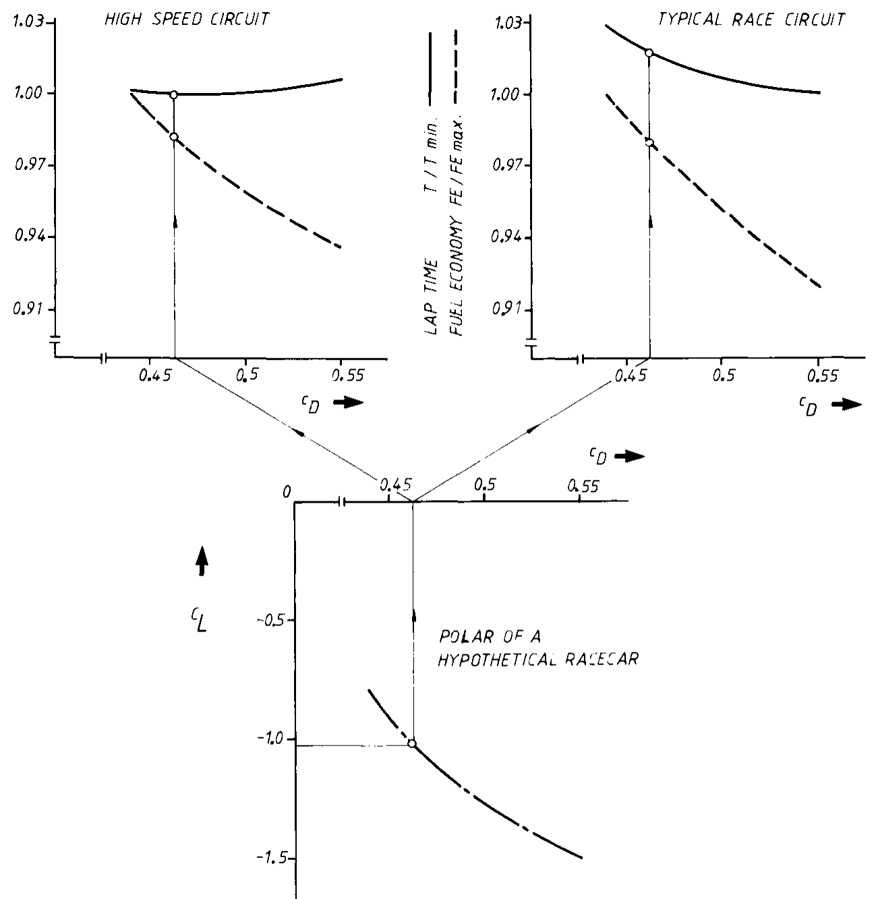
Hucho, Fig. 7.45. Abajo, la polar de un auto de carrera hipotético; arriba, el tiempo de vuelta (línea llena) y el consumo (trazos) para cada punto de esa polar, en dos circuitos. En el circuito rápido el tiempo mínimo cae con poco drag; en el típico, el tiempo sigue bajando al cargar más. El mismo auto tiene un óptimo distinto en cada circuito.
- La velocidad promedio del circuito orienta, pero engaña: un circuito de curvas rápidas pide mucha carga.
- Dos setups muy distintos pueden dar el mismo tiempo si caen en la misma isocurva. Rafaela y Toay admiten autos muy cargados y muy descargados. Se desempata con otro criterio: estabilidad, sensibilidad a la altura.
- Dirección de desarrollo: normal a la isocurva. Con tres puntos de prueba se estima el gradiente y se decide si conviene cargar o descargar. En Rafaela, las isocurvas casi verticales dicen "bajá el drag".
14.5 Por qué la eficiencia engaña
La objeción natural. "¿No alcanzaba con elegir la configuración más eficiente, la de mejor (§5)?" No, y el mapa muestra por qué.
La eficiencia es el ángulo de la recta que une el punto con el origen. Elegir por eficiencia coincide con el criterio correcto solo si las isocurvas están a 45°.
- Si son más verticales (Rafaela, Toay), "te manda al muere".
- Si son horizontales (mucha carga), el más eficiente suele ganar.
Compara peras con manzanas. El actúa sobre el motor y el sobre la rueda: dividir uno por el otro no tiene un significado directo en tiempo de vuelta. Un ejemplo donde sí se comparan unidades iguales: tapar la toma dinámica baja el drag (caballos "virtuales" ganados), pero ahoga el motor (caballos perdidos).
Solo sirve con una de las dos cantidades fija, y en ese caso ya alcanzaba con la dominancia.
Un caso concreto. En turismos, cargar adelante sube mucho la eficiencia (por el efecto suelo: mucha succión con 5–10° de piso). Aun así, en Rafaela conviene descargar.
14.6 Resumen del método
- Balance: llevar todo a la banda de balance aceptable.
- Pareto: quedarse con los puntos no dominados.
- Circuito: elegir el punto de la frontera con menor tiempo de vuelta.
Hoy se puede tirar fuerza bruta con el simulador sobre los 100 setups. Pero tener el método en la cabeza permite decidir rápido y no correr de más. El concepto se extiende a 3 o más objetivos (superficies o volúmenes de Pareto).
En limpio
- Importan tres números: , y balance. Casi siempre hay compromiso.
- Paso 1, balance: nada se descarta por balance; se contrabalancea.
- Paso 2, Pareto: se eliminan los dominados (más drag y menos carga que otro).
- Paso 3, circuito: gana el punto de la frontera que toca la isocurva de menor tiempo.
- Recta → isocurvas verticales → menos drag. Círculo → horizontales → más carga.
- La eficiencia sola no decide: solo acierta con isocurvas a 45°.